| 冴えない彼女の育てかた Girls Side 2<冴えない彼女の育てかた> (富士見ファンタジア文庫) | |
| 丸戸 史明 | |
| (2016) | |
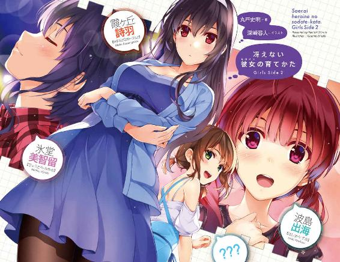
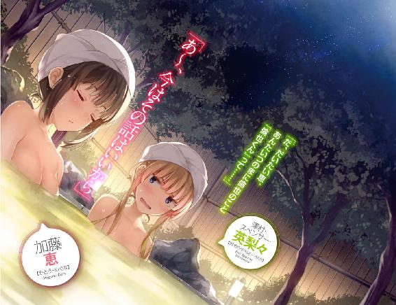
冴えない彼女の育てかた Girls Side2
丸戸史明
富士見ファンタジア文庫
本作品の全部または一部を無断で複製、転載、配信、送信したり、ホームページ上に転載したりすることを禁止します。また、本作品の内容を無断で改変、改ざん等を行うことも禁止します。
本作品購入時にご承諾いただいた規約により、有償・無償にかかわらず本作品を第三者に譲渡することはできません。
本作品を示すサムネイルなどのイメージ画像は、再ダウンロード時に予告なく変更される場合があります。
本作品の内容は、底本発行時の取材・執筆内容に基づきます。
本作品は縦書きでレイアウトされています。
また、ご覧になるリーディングシステムにより、表示の差が認められることがあります。
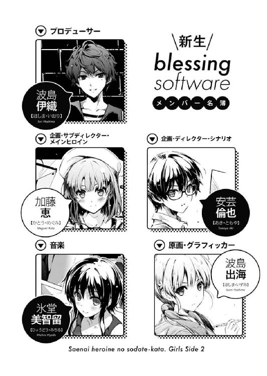
このプロローグは八巻エピローグの後にお読みください
「や～、それにしても凄かったよねぇ、あの発表会」
電車の中でもはっきり聞こえて、しかも車内の人たちに迷惑にならない程度のギリギリ元気な声が、まぁつまり電車内に響く。
「ああいうの見ると、澤村ちゃん、遠い人になっちゃったんだって実感するよね～。あのコがつい去年まで同じサークルで一緒にゲーム作ってたなんて信じらんないよね」
五月中旬、連休明けて次の週末の日曜夜。
平日よりも随分とすいているその車内で一人喋り続けるのは、高校生くらいの女の子。
女子にしてはひときわ長身、しなやかな体でギターケースを軽々と担ぎ、癖のあるショートカットを揺らしながら、身振り手振りで目の前にいる二人の友人にいろいろと話しかけている。
しかし......
「そうだね」
「凄かったですね」
「う......」
その、目の前の二人の友人の、あまりに淡泊というか、おざなりというか、心ここにあらずなリアクションを受け、さすがにその陽気な語り口もしぼんでいく。
二人と比べても飛びぬけて高い頭をぽりぽりと搔きつつ、困ったように天井を見上げ、何かを考え込むような仕草で......
「なんだよなんだよ二人とも～！ そんなしみったれた顔してないで、仲間のステップアップを喜んであげりゃい～じゃん」
けれど考えるのは苦手だから、とにかく思ったことをリアルタイムで駄々漏れにさせていく。
そんな大雑把な彼女は、直情型体育会系アーティスト。
ガールズバンドのボーカル兼ギター担当というリア充系の肩書きを誇りつつも、同人ギャルゲーのＢＧＭ担当というオタクっぽい役職も兼任する、劇伴の申し子。
県立椿姫女子高校三年、ガールズバンド『icy tail』、ゲーム制作サークル『blessing software』所属、氷堂美智留。
「でもわたし、澤村先輩とは一度も同じサークルに所属していた時期ないですし」
「ぐ......」
と、今度は、淡泊な二人のうちの一人が、意を決したようにその美智留に食いつく。
「それに、確かにあのキービジュアルは凄かったですけど......いいえ、だからこそ、そんなに単純に馬鹿っぽく頭空っぽで喜んでなんかいられないですよ」
「反論は構わないけど、いっつも喧嘩と抱き合わせで売ってこなくてもいいんじゃないかな波島ちゃん」
長身の美智留と比べると、頭一つくらいの差があるちょこんとした身長に、けれど一部に美智留をも凌ぐボリュームを誇りつつ（言っておくがお腹ではない）、お下げにした髪を両肩から垂らし、小動物みたいにちょこまかとした仕草と視線で、少しだけ拗ねたように見上げてくる。
「澤村先輩は、今までウチのサークルの看板絵師だったんですよ？ その彼女が、どんどん有名で人気者の凄いイラストレーターになっちゃったら、どうなると思います？」
「あ～、そっか、確かにバンドでもメジャーって破滅への入り口だもんね～。金や名声が増えるとともに男やドラッグに溺れ始めて、やがて心身ともにボロボロになって、他人をネットで中傷するようになってからは転落一直線。リスカしてマンション手放して水商売にまで身をやつし、最後にはドラッグの大量摂取で......」
「そっちの事情はどうなろうが構いません！ こっちのサークルに出てくる影響の方ですよぅ」
「こっちにツッコむんだそっちの事情は構わないんだ......」
「その、人気者になった元看板絵師と比較されるのは、このわたしなんですからね？」
色々と軽はずみな言動でナチュラルに敵を作りながら、けれど見た目と仕草の愛くるしさで敵をも虜にする彼女は、努力型かつ才能型イラストレーター。
今年から豊ヶ崎学園に入学した一年生にして、ゲーム制作サークル『blessing software』の、人気者になった元看板絵師と比較される不幸な新看板絵師、波島出海。
「これで『柏木エリが抜けたからもういいや』って、皆が『blessing software』のゲームに見向きもしなくなったらどうするんですか......人気絵師が抜けて次回作の売り上げが見るも無残になったゲームメーカーの末路を知らないんですか美智留先輩は」
「い、いや～、そうならないために波島ちゃんが来たんじゃん！ ビビってどうすんのさ？」
実のところ、看板絵師に抜けられても、社長がやり手だったり、絵師を変えて次々と昔のヒット作の続編を繰り出したり、その連れてきた絵師が前作の原画家のト○スっぽい絵柄だったりして何とか危機をやり過ごすゲームメーカーだって枚挙にいとまがないのだが、そんな業界の事情など知らない非オタの美智留としては、ビビりつつ相手をなだめるしか方法がなかった。
本当、どのメーカーも頭を振り絞ってしぶとく頑張っているのだから、ユーザー各位においては温かくも長い目で見守って欲しいというのが偽らざる気持ちだ。
「それにさ波島ちゃん、澤村ちゃんの絵につられてこのサークルのファンになった人たちだって、全部が全部彼女についていくわけじゃないよ。マイナーなインディーズバンドからボーカルが一人だけ抜けてメジャーデビューしてもさ、『なんか遠いところに行っちゃったな～』って急激に醒めて、ボーカルの抜けた元のバンドの方を変わらずに応援してくれる人たちだって......」
「それって、そのインディーズバンドそのものに興味失ってどっちからも離れていくお客の方が多いように思うんですけどどうでしょう？」
「いやいやそういうことを大々的にネットで騒ぐのがこじらせた古参ファンだけだからだよ。もっとサイレントマジョリティを大切にしようよ波島ちゃん～」
実のところ、サイレントマジョリティはほとんどメジャーデビューしたボーカルについていくという統計的数値には触れないため、結局二人の議論は延々と平行線をたどる。
「ちょっと、恵先輩もなんとか言ってくださいよ」
「ちょっとぉ、加藤ちゃんもなんとか言ってよ～」
そして結局、何だかんだでわかりあえない、仲がいいようで悪い二人は、まるでお奉行様の裁定を仰ぐかのように、もう一人の女の子へと助けを求める。
しかし......
「......恵先輩？」
「加藤ちゃん？」
「え？ 何？ ごめん、よく聞こえなかったんだけど」
「............」
「............」
その彼女は、ラブコメラノベの難聴最低主人公みたいな気の抜けたリアクションで、二人の友人の切実な問いを問答無用で切り捨ててしまったため、残念ながらこれにて一件落着とはいかなかった。
「あ、じゃなくて、ぼっとして聞いてなかった。えっと、凄かったよね発表会」
「そこまで戻りますか......」
「さっきからなんかおかしいよ加藤ちゃん？」
「......重ね重ねごめんね」
消え入りそうな声で二人に謝るのは、身長も一部のボリュームも、ちょうど二人の間に位置する標準的な......いや、バランスのいい体型に、特に目立つでもない......いや、よく似合ったショートボブの髪形の女の子。
一見して『どこにでもいそうな可愛い女の子』という、矛盾してるんだかしてないんだか微妙な表現がとても良く似合い、毎日でも食べられるおかず的な（性的な意味ではなく）あっさりした魅力を内包している。
そんな何事においても平均点プラス五～一○くらいな彼女の名は......いや、今はそれよりも、彼女のぼっとしてた理由の方がリアルタイム性が高いので後回しにさせていただきます。ご了承ください。
さて、そんな訳で彼女の視線の先には、いつの間にか停車していた駅のホーム。
そして、反対側の電車を待っているのであろう、二人の女性の後ろ姿。
さらにそのうちの一人、身長的には人混みの中に埋もれつつ、それでもひときわ周囲の目を引く金色の、二つに束ねられた髪が、彼女の目と意識を捉えていた。
※ ※ ※
「みんな、イベント配信見たかな？ ......あたしのキービジュ、見たかな？」
「倫理君は、サークルの皆で見るって言ってたけれど」
「そっか、そっかぁ......倫也も恵も、喜んでくれたかなぁ」
「............」
「......何よあんた、その『やってられないわねこのポンコツ金髪ツインテールは』みたいに蔑んだ視線と態度は」
「私の今の心境をそこまで正確に把握してるなら、その原因の方にも思い至ってほしいわね澤村さん」
「は？ 何？ ごめん、よく聞こえなかったんだけど」
駅のホームで仲よく並びながら語り合う二人の声が、反対側のホームに入ってきた電車の音にかき消され、図らずもここに難聴最低主人公がもう一人誕生した。
「別に、聞こえなかったのならそれでいいわ。ポンコツ金髪ツインテールさん」
「良くないあたし良くない全然納得できないその捨て台詞！」
それはそうと、駅のホームで仲悪く（訂正済み）並びながら語り合う二人は、たった今入ってきた背後の電車に、たった今話題にした人々が乗っているとも気づかず、図らずもかの人々と同じ話題に花を咲かせていた。
フィールズクロニクル20th Anniversary─
それは、コンシューマーゲームの大手メーカーであるマルズが、タイトルの通り、二○年間も育て続けてきた人気ＲＰＧシリーズ『フィールズクロニクル』の、記念イベントで。
その会場の、後ろの方の招待席の中でも、さらに後ろの方でひっそり座っていた彼女たち二人は、イベントの最後で大々的に発表された新作『フィールズクロニクル』のメインスタッフに抜擢された、シンデレラたち。
「とにかく、これだけ派手に発表されてしまった以上、もう逃げ場はないわよ？」
一人目のシンデレラは、シナリオ担当。
軽くウェーブのかかった長い黒髪や、胸の辺りに自己主張の強い体型、さらには普段の言動が、どちらかといえばシンデレラよりも白雪姫......に出てくる魔女に近い黒系美女。
本業はライトノベル作家にして、処女作『恋するメトロノーム』、二作目『純情ヘクトパスカル』とヒットを連発する売れっ子文筆家、霞詩子。
さらにもう一つの本業は、早応大学文学部に入学したての女子大生。
さらにさらに、過去に目を向ければ、今年の三月まで豊ヶ崎学園に在学していた元女子高生。
さらにさらにさらに、ゲーム制作サークル『blessing software』の元シナリオ担当、霞ヶ丘詩羽。
「逃げ場なんて、この仕事を請けると決めた時点でなくなってる」
二人目のシンデレラは、キャラクターデザイン・原画担当。
ツインテールにまとめられた細工物のような金髪、全体的に貧じゃ......控えめな体型、それでいて普段の言動が、どちらかと言えばシンデレラよりもその姉に近い小者系美少女。
本業は同人作家にして、流行作品の一八禁同人誌で荒稼ぎを繰り返す人気イラストレーター、サークル『egoistic lily』代表、柏木エリ。
さらに、豊ヶ崎学園三年生にして、ゲーム制作サークル『blessing software』の元原画担当、澤村・スペンサー・英梨々。
「そう思うのなら、倫理君や加藤さんとの人間関係にうつつを抜かしてないで、あなたはできることをできる限りやっていればいいでしょう？」
「うつつなんて抜かしてないもん人間関係は社会的に必要なスキルだもん！ あんたみたいに誰ともコミュニケーション取れない人格破綻者と一緒にしないでよ！」
「うわべだけの人間関係構築してたりすぐ相手を裏切ったりする人間関係クラッシャーよりは、ぼっちの方がお互いに幸せよ」
「クラッシュなんかしてないもんちゃんと仲直りするもん！ その証拠に今度恵と会う約束してるし！」
「その約束が今日の発表会で無期延期になる未来しか見えないのによくもまぁそんな自信満々にほざけるわね。どれだけ空気読めないのよこのエゴイスティックお嬢様は」
「延期になんかならないわよ！ だってあたしたちずっと親友でいるって約束したもん」
「あ～はいはいわかったわかりました。あなたたち二人、絶対また友情がクラッシュしたって確信あるけれど、今はあなたを立ててあげるわ澤村さん」
「その態度と言動のどこがあたしを立ててるのよ！ ちょ、その憐れんだ視線やめてよ。愛おしそうに頭撫でないで。や、だめ、そんなことされたら......違うもん絶対に恵ならわかってくれるもん～」
※ ※ ※
「ちょっと、恵先輩もなんとか言ってくださいよ」
「ちょっとぉ、加藤ちゃんもなんとか言ってよ～」
その、至近距離から届いた声は、彼女の耳には届いていなかった。
何故なら今、彼女の意識を占めていたのは、目の前の二人の会話ではなく、ホームの反対側の、聞こえるはずのない二人の会話だったから。
そんな彼女は、出海と英梨々から〝恵〟と、美智留と詩羽から〝加藤〟と呼ばれていた女の子。
豊ヶ崎学園三年生にして、ゲーム制作サークル『blessing software』のメインヒロイン、加藤恵。
そして、そんな意味もなく浮ついた肩書きを持ちながらも、実はサークルの存続を誰よりも願い、一生懸命努力してきた縁の下の力持ち。
「......恵先輩？」
「加藤ちゃん？」
けれど今、自分のすぐ近くで、口喧嘩しているようにも、じゃれ合っているようにも見える二人の〝元〟メンバーを見つめる視線は......
いや、まぁ、『わたしならわかってくれるんだぁ......あはは......あはははははっ』とか凄絶な笑みをこぼしていた訳じゃないけれど。
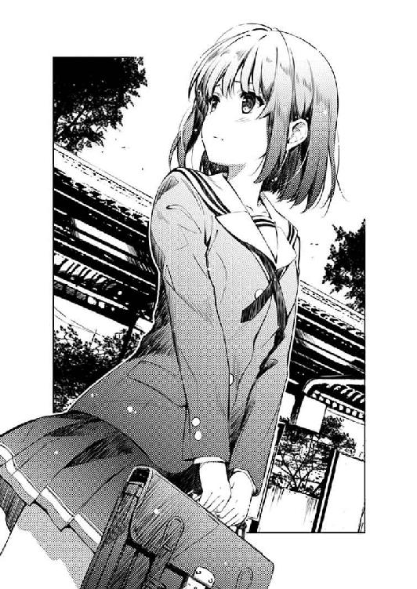
それでも、そこそこに切なげで、そして、そこそこに根の深い感情を垣間見せていた。
第八・三話 エロインより愛をこめて
五月中旬の土曜日。
少し汗ばむくらいの初夏の陽気が降り注ぐここは、この作品内ではお馴染みの秋葉原。
......から総武線で一駅にして、徒歩一〇分圏内の、お茶の水。
楽器街として有名なこの街に、ギターケースを抱えた姿でしっかり溶け込んでいるのは、『blessing software』唯一（もしくは唯二）のアウトドア派、氷堂美智留。
『blessing software』唯一（こっちは間違いなく唯一）のバンド女子である彼女は今、月イチのお楽しみである楽器店巡りを終え、ずっと欲しかった新しいギター......の弦を手に、急ぎ足で駅からの坂を神保町方面に下っていた。
「あ～、おなかすいた～」
時刻は正午を少し回ったところ。
朝から何も食べていな......かったこともなく、朝食をしっかりおかわりまでした美智留の胃は、そんな万全の態勢にもかかわらず、いや万全だからこそ次の飯への渇望をあらわに、ぐるぐると彼女の昼食を急かしていた。
「......あれ？」
と、そんな『今日のあたしは何腹なんだ？』的な思考に囚われた美智留が、その空腹レーダーで検知したのは、美味しそうな食べ物屋......ではなく、目の前の下り坂を、自分と逆方向に上ってきている黒い人の影だった。
「霞ヶ丘センパイ？」
あ、ちなみに『黒い人の影』の『黒い』は、『人の影』に係っているのであって、『人』に係っているのではないことをここに明記しておくので誤解なきよう。
「............」
「？ ちょっと、センパイ」
で、その黒い人......ならぬ長い黒髪の人は、たった五メートル先からの、自分を呼ぶそこそこ大きめな呼びかけの声に反応することもなく、その互いの距離を無造作に縮めていく。
けれどまぁ、その黒髪ロングの彼女......霞ヶ丘詩羽を知る人たちなら、今の彼女の態度が、特に普段と変わったものではないことも知っていた。まぁ失礼なことには変わりないけど。
「歩いてる時くらい本読むのやめなよセンパイさぁ」
「......あら氷堂さん、奇遇ね」
詩羽が足を止め、読んでいた本から目を離し、振り返って美智留の存在に気づいたのは、二人がすれ違ってからさらに五メートルほど離れた後だった。
その容姿と体型から、いつものように周りの注目を集めつつも、いつものように近寄るなオーラを撒き散らして自分のパーソナルスペースを確保しつつ街を歩いていた詩羽は、突然の知り合いの、しかも自分の知る限り一番人との距離感に疎い美智留との遭遇に、あからさまなため息をついてみせた。
「なに、買い物？ へ～、センパイもこんな街中に来たりするんだね」
......が、もちろん自他ともに認めるゼロディスタンスの申し子美智留は、そんな態度に臆するような腑抜けでも小市民でもなく、つかつかと詩羽の側に歩み寄ると、その手に持った大きく膨らんだバッグの中身を覗き込んでくる。
「読書に興味のない氷堂さんは知らないのかもしれないけれど、この界隈は楽器店だけでなく古書店も多いのよ。だから私も月に一度くらいは掘り出し物を探しに来たりするの。まぁ読書に興味のない氷堂さんは知らないのかもしれないけれど」
「......同じこと二回繰り返すのって文法的にどうなの？ 作家のくせに」
そんな、必要以上に他人との距離が遠い詩羽と近い美智留が二人きりで遭遇したときにどんな化学反応が起きるのかは......実は今までそういう状況に陥ったことがなかったので誰も知ることはなかった。
まぁ『絶対に和やかなモノじゃないだろう』という、今の状況を正確に予見していた周囲の見解はさておき。
「とりあえず、社交辞令でしかない挨拶も済んだことだし、そろそろ行ってもいいかしら？ 早く家に帰って買ってきた本を貪るように読みふけりたいのだけれど」
「あ、そいやさセンパイ、お腹減ってない？」
「いいえ。全然、まったく、これっぽっちも」
「今からごはんにしようと思ってんだけど、せっかくだから一緒にどう？ 食事はみんなで食べた方が美味しいっしょ」
「......相手を放っておいてくれない上に相手の話も聞いてくれない人と一緒に食事しても不愉快なだけだと思うけれど」
「あ、そうだ、駅の方に戻ったところに美味しい豚丼屋があるんだ。量多くて脂ギトギトで煙モクモクで最高だよ？ 前にトモに連れてってもらったところでさ～」
「............何重もの意味でお断りよ」
そして、そんな嫌な化学反応は、もう少し続いてしまうらしかった。
※ ※ ※
「お～、来た来た～。チキンカリー、ライスとルー大盛り、五辛～♪」
「......どこのお店でも男らしさ満載のチョイスね、あなた」
結局二人は、遭遇した場所からほど近い場所にあるカレー屋の二階に腰を落ち着けた。
そしてほどなく頼んだメニューが届くと、待ってましたとばかりに美智留はスプーンを手に取り、そして詩羽もスプーンと......そして本を手に取る。
「......『いただきます』と同時に本読み出すとかどうなの？」
「神保町に詳しくない氷堂さんは知らないのかもしれないけれど、この界隈にカレー屋が多いのは、カレーなら食事しながら読書もできるという古書店街独自の文化が根付いているからなのよ。まぁ神保町に詳しくない氷堂さんは知らないのかもしれないけれど」
「にしても、いくら相手が彼氏じゃないからって、対応があんまりにもおざなりすぎない？」
「私、男と一緒にいたって普通に本を読むわよ？」
「あ、そ......」
美智留の、色々な意味を含んでいるかもしれないし含んでいないかもしれない視線を受け流し、詩羽は無言でスプーンを口に運び、ページをめくる。
なので仕方なく、美智留も目の前のご馳走をスプーンですくい始め......
「ごちそうさまでした～」
「いくらなんでも早すぎるでしょ氷堂さん」
......そして、五分で平らげた。
「や～、だってここのカレー、辛いし熱いし美味しいし～」
「だからって、そんなに急いで食べたら消化に悪いわよ？」
「それよりも、テレビとか本読みながら食べた方が消化に悪くない？」
「それにしても、いくら相手が彼氏じゃないからって、対応があまりに雑すぎるんじゃないかしら」
「そりゃ、男と一緒だったら、話したり、おかず取り合ったりして、楽しくゆっくり食べられるんだけどね～」
「......っ」
と、詩羽は、いつものちょろい挑発合戦とは違いすぎる手応えに、目の前の長身ショートカット美女を睨みつけると、名残惜しそうに読みかけの本をバッグにしまい込み、ちびちびとサラダをつまみ始めた。
「カレー、熱いうちに食べた方がいいよ？」
「あなたの食べっぷりを見てたら、なんだか食欲なくなってきたわ」
「食べないんならもらっちゃうよ？ あたしの方は、まだちょっとだけ食い足りないな～って感じでさ」
「どうぞご勝手に」
「へっへ～、じゃ遠慮なく～」
と、嬉々として自分の皿にスプーンを忍び込ませる美智留を呆れた目で眺めつつも、詩羽は、今度こそちゃんと目の前の相手とコミュニケーションを取りにいった。
「それだけ食べて、どうして太らないのよあなた」
「センパイこそ、全然食べないのにどうしてそんな大盛りなんだか......」
と、美智留は、スプーンで詩羽の胸の辺りを指し示す。
そして詩羽の方は、この件に関してのこれ以上の問答は不毛と判断したらしく、不機嫌そうにコップを口に運ぶと、口の中で氷を転がし始める。
「......それで、サークルの皆は元気にしてる？」
詩羽が次に言葉を口に載せたのは、美智留が自分の分のカレーを既に半分ほど減らした辺りのことだった。
......まぁ、とはいってもその間の所要時間は三分程度だったけれど。
「もっちろん！ 新作のプロットも固まって、新しいメンバーも加わって、加藤ちゃんもますます黒くなって、みんな燃えちゃってるよ～？」
「そ、そう、それはよかっ......」
「......なんてことになってるって言われて、本当に信じる？」
「......っ」
と、美智留の口調と態度が、一瞬にして温度を下げた瞬間、その寒さに、詩羽は思わず口の中の氷をかみ砕く。
だって、詩羽にすら、彼や彼女たちが〝あの絵〟を見せられて、素直に感動したり応援したり触発されたりするなんて、信じられるはずがなかったから。
あの英梨々の、天才的で、芸術的で......
そして、『blessing software』に所属していた頃には為し得ることのなかった力強い成果を目の当たりにして、皆は自分たちの能力不足......英梨々と並び立っていたことへの場違いさを感じ取ってしまっただろうと、容易に想像できてしまったから。
「逆にセンパイに聞くけどさぁ、澤村ちゃん元気？」
「そんなの同じクラスの倫理君に聞けばいいでしょ。どうして私を澤村さんの保護者みたいに扱うのかしら？」
「そりゃ、実際そうなってるからじゃん？」
「............」
かみ砕いた氷の冷たさを口中で感じつつ、詩羽は、ほんの少しだけ意外そうな表情で、目の前の、普段はデリカシーのなさすぎる体育会系バンド女子の表情を見つめる。
そこに浮かんでいるのは、彼女らしくない、不満と心配の混ざった、ハッキリしない顔。
「で、そんなセンパイならわかってるよね？ その澤村ちゃんが、ウチのメンバーに対して何をしでかしちゃったのか」
......つまり、人を思いやっている、優しい女性の顔。
「意外ね」
「何が？」
「氷堂さんって、そういうふうに、人の空気を読まないタイプだと思ってた」
「あ～、まぁ、確かにセンパイの思う通りだよ？ 他人が何を思ってるのかってのには、あんま興味ないし、鈍いと思う」
「じゃあ、どうして」
「だってトモは他人じゃないし。家族だし」
「......それを人の前で臆面もなく言えるところなんかは、確かに空気を読んでないわね」
そして、そんな表情と言動を見せられた詩羽の方も、まるで吸い寄せられたように、美智留と同じく微妙な表情に変わっていく。
「別に、出ていったことには文句なんてないよ？ ていうか、あんたたちくらいの売れっ子が、トモのサークルなんかに入ってたことの方が異常だったんだし」
「別に、そんなことは......」
「けどさ、出てったのに、未だにサークルにちょっかい出し続けるのは違うんじゃないかな～？」
そして、その微妙な表情に、さらに苦みを上乗せさせられる。
「そんなこと、あなたに言われる筋合いは......」
「あるよ、あったり前じゃん」
「っ......」
その瞬間、二人のテーブルが、ガタンと音を立てる。
「だってさ、トモはあたしの子分なんだよ？ 毎年、実家で遊んでた時も、地元のいじめっこたちからあたしが守ってやってたんだ」
「......～っ」
さらには、断続的にガタガタと揺れ始める。
もちろん、詩羽の強烈な貧乏揺すりによって。
「だからセンパイ？ いくらあんたでも、あいつを苦しめたら許さないよ」
美智留の、その、照れも躊躇もない傲岸不遜な物言いにブチ切れていたから。
家族という、イトコという隠れ蓑を最大限に活用しての、立場の正当化は、どこかのパチモン幼なじみの戯言と比べても、到底許容できるものではなかったから。
「............倫理君は、私の後輩でもあるのよ？」
「後輩ってさぁ、子分と比べるとなんかよそよそしいよね～」
「子分って、後輩と比べると支配的でパワハラ的で愛情が感じられないわ」
続いて詩羽は『それに後輩って、言い換えると交配とも取れるし』などというネタを思いついたが、議論が発散してしまうので口に出すのは憚った。
「でも、そういうふうに上下関係がハッキリしてた方がさ、いざという時にトモが強くなって関係が逆転したとき燃えるじゃん？ ほら、昔、山であたしが迷子になって......」
「な、なに氷堂さん？ あなたそういう願望あるの？ 今まで言いなりだった倫理君が突然逆ギレして自分を押し倒して『ほら、ここなら叫んでも誰も助けに来ないぜ？ 今から俺がお前の体に叩き込んでやるよ......一生忘れられない傷痕をな！』なんて、強引に開いて押し入ってきて......ああ、やめて、でも、でも......っ」
「......センパイ大学生になってますます変態さに磨きがかかってない？」
「やっぱりあなたなんかの誘いになんか乗るんじゃなかった......とてもとてもとても気に入らない」
と、そんな美智留への怒りによって急に食欲が復活した詩羽は、一度は相手に引き渡したカレー皿を奪い返し、残った半分のカレーを一気に平らげた。
「ま、確かに誘っといて喧嘩売ったような形になっちゃったのは悪かったけどさ......けど、ウチのサークルの事情も考えてよ」
「それはこちらにも......というか澤村さんにも非があるから仕方ない」
「じゃあ、なんで......」
「私が癇に障っているのは、何かというと倫理君との過去の歴史を笠に着て優位を誇る、あなたのその上からな態度よ」
「けどさ～、センパイの場合、そんなの澤村ちゃん相手で慣れっこでしょ？」
「澤村さんは別にいいのよ。相手の挑発にすぐ乗っかって勝手に自滅するから全然気にならないし」
「......あ～、いや、まぁ」
さらに付け加えるなら、英梨々は、ずっと〝幼なじみ〟との、一度離れてしまった関係性に、未だにコンプレックスを持っている。
信念のない絆は、隙だらけで、弱々しくて、脆くて......
そして、捻くれ恋愛作家、霞詩子の大好物だ。
「けれどあなたは挑発したところでちっとも動じない、何を言われても馬耳東風」
「しょ～がないじゃん。だって身内なんだもん」
「だからあなたのそういうところが気に入らないのよ......これだから四親等は。ちょっと結婚できるからって調子に乗って！」
「キレ方がマニアックすぎてついていけないよセンパイ......」
けれど美智留のように、血縁に対して何のコンプレックスもないどころか、そのアドバンテージを信じて疑わない、まるでシナリオの練られていないエ○ゲーヒロインみたいなメンタリティの持ち主は、霞詩子ワールドの風紀を乱すことこの上なく。
「ああもう、あなたを倫理君の側に置いておくのは危険すぎる。やっぱりあの時、強引にでも行っておけば......っ」
ちなみに〝あの時〟の心当たりが多すぎてとても一つに絞れそうにない詩羽は、その全てのチャンスを空振ったという意味でも、英梨々と同じく、捻くれチキンだらけの霞詩子ヒロインのメンタリティそのものだったりした。
「いや考えすぎだってセンパイ。そりゃ、確かにトモはあたしのもんだけどさぁ......」
「その決めつけが気に入らないって何度言わせれば......」
「でも、さっきから言ってるように、トモは家族みたいなもんだから。センパイや澤村ちゃんみたいにヤバい方向にキマってる訳じゃ......」
「甘い、甘いわ氷堂さん......」
「......え？」
いつしかテーブルの揺れは、他の客が気づくレベルにまで大きくなっていた。
「毎年、夏休みに実家で過ごすイトコ同士の男の子と女の子。一緒に野山を駆け巡り、井戸水で冷やしたスイカを食べ、二人並んで縁側でお昼寝するのが毎年の恒例行事......」
「......センパイ？」
「そして、その年の夏も、いつもの日常が変わることはなかった......ただ二つ、女の子がいつの間にか綺麗になっていたことと、男の子が、いつの間にか思春期を迎えていたことを除いては......」
で、その原因である貧乏揺すり美女は、長く艶やかな黒髪を蛇のようにうねらせ（イメージです）、唇の端を吊り上げつつ、地獄の底から悪霊を呼び寄せている最中だった（だからイメージです）。
「男の子が目を覚ますと、けたたましいセミの鳴き声だけが家中に鳴り響いている......どうやら家族の者たちは、眠っている二人を置いて買い物にでも出かけたようだった」
「えっと、それって、もしかして......」
「ふと男の子が、隣で寝ているはずの女の子へと振り向く......するとそこには、しかしそこには、彼の目と鼻の先で、じっと目を見開き、ずっとこちらを見つめていた様子の女の子の顔」
「............（ごくり）」
「セミの鳴く声に紛れて、少女のささやきが、少年の耳にかすかに届く......『ね、トモ......あんた......したこと、ある？』」
「ひぅっ......」
瞬間、美智留の喉が、笛のように鳴る。
その架空の少女のように、頰は紅潮し、息は荒く、いつの間にか、カラカラに乾いていた唇を無意識に舐めていた。
「実のところ、彼女はキスだけのつもりだった......けれど、そんな女の子の微妙な機微なんて、彼女の唇の味を知ってしまった彼にわかるはずもなく......」
「え、ちょ、ちょっと......それは、えっとぉ......」
「彼女の唇を貪りつつも、彼の手は、いつの間にか彼女のタンクトップの中をまさぐり、その先っぽの突起をとうとう指先で探り当て......」
「あああああ～っ、ちょっ、待って！ それリアルに想像できすぎるからやめて～！」
作家、霞詩子......
その活動拠点は、ライトノベルレーベルの不死川ファンタスティック文庫であって、現時点ではその他のジャンルで一切執筆していないことをここに明記しておく。
※ ※ ※
「はぁ、はぁ、はぁ......っ、ちょ、ドキドキが止まんないって～」
「どうやら氷堂さんには刺激が強すぎたようね......ちょっとコミックＬ○にありそうなシチュエーションを想像してみただけなんだけど」
「もう、訳わかんないこと言わないでよ......すいませんお水お代わりください～」
美智留の、予想していたよりもずっと純情な反応を受けて、詩羽は暗黒クリエイターモードの発動を止め、探るような視線で相手の表情を見つめる。
見つめたその顔からは、多分カレーのせいだけではない汗が噴き出し、瞳が潤み、頰は紅潮し、いつもの大ざっぱな体育会系女子の面影が感じられない。
「氷堂さん、もしかしてあなた......」
「な、なに？」
「倫理君のこと、本当に男として意識してなかったとか？」
「いや、だからさっきから家族だってゆってんじゃん......」
いや、この初心な反応こそが体育会系女子の本来あるべき姿なのかもしれない。
「いいえ、そんなはずないわ。今まであれほど体の色々なところを密着させておいて何も感じなかったなんて信じられない」
「センパイだって結構密着させてたじゃん」
「私は直接じゃなくて一枚隔ててるからセーフよ」
「......あ～、いや、そう」
ここらへんの言動を鑑みるに、どうやら詩羽の暗黒クリエイターモードは、原子炉停止までにまだ少し時間がかかるようだった。
「危険だわあなた......そんな軽い気持ちで、今まであんなに際どい肉体的接触を繰り返していたなんて......」
「つまり先輩の方はずっと重い覚悟があったと......？」
「そうやって深く考えずに挑発して、もし倫理君が絶倫理君に変貌していたらどうするつもりだったのよ？」
「え？ いや、そりゃ......まぁ、その時になったら考えるってことで」
「そんな行き当たりばったりじゃ、もしその時が訪れたとしても『あ、アレ用意してないや......けど、ま、いっか』とか言って〇でＯＫしてしまうことになるわよ？」
というか、本当に停止したのか疑わしいレベルでメルトダウンしているようだった。
「で、でもトモだよ？ あいつがそんな......ぜ、絶......とか」
「じゃあ、そうなったら嫌？ 絶対に許さない？」
「い、意識させんな～！ そういうの考え出したら、今までみたいなことできなくなるじゃん！」
「そう、それはいい兆候ね......」
「な、なんだよぅ......？」
詩羽の炉心から......いや心の奥底から、嗜虐心に満ちた黒い炎が溢れ出る。
自分よりずっと長身で、腕っぷしも比較にならないはずの美智留に対し、詩羽は余裕に溢れた態度で相手の泳ぐ瞳をじっと見つめ、ゆっくり逃げ道を塞いでいく。
今までの美智留が気づいていなかった〝羞恥〟の概念を植え付けるために......
「例えば氷堂さん、あなた、よく倫理君にプロレス技を仕掛けるわよね？」
「あ、あんなの昔からだし。それにちゃんと手加減してるし......」
「あなたの言う手加減というのは、力加減のことだけよね？」
「そ、それ以外に何があるってんのよ？」
「掛ける技を、ちゃんと手加減して選んでいたのかしら？」
「そ、それってどういう意味......」
と、詩羽は美智留の問いに直接答えず、バッグからスマホを取り出すと、何かを検索し始めた。
「例えば、この技だけれど......」
「......パワーボムからのエビ固め？」
しばらくして、詩羽が美智留に指し示した画面には、屈強なプロレスラーが相手を逆さに叩きつけ、そのままフォールに持っていくクライマックスシーンの動画が流れていた。
「続いてこの技だけれど......」
「ちょ......っ!?」
と、続いて詩羽が美智留に指示した画面には......え～と、技の流れそのものは似ているものの、何かが間違っているというか何もかもが間違っているというか、とりあえず言える範囲で言うならば場所がリングではなくベッドだった。
「あなたは彼に、こんなことをしていたという自覚があったかしら？」
「待って待って待って！ ていうかまずその動画止めてよ!?」
ちなみに、その動画の音声にミュートはかかっていなかったため、この瞬間、二人の席から半径数メートル一帯が凍りついていることをここに明記しておく。
「あなたは今まで、彼とプロレスごっこをした時、この○○○○返し......じゃなくてこの体位......でもなくてこの体勢になったことがないと言い切れるのかしら？」
「う......」
「彼の〝男〟としてのデリケートな部分に、ちゃんと手加減をしていたと、言えるのかしら？」
「や、やめようよ......みんなこっち見てるよセンパイ」
「いいえ、この際だから他のアレな技も確認してもらうわ......○○騎乗とか、○○○○ホールドとか......」
「や、やめ、やめ......きゃああああああぁぁぁぁぁぁぁ ！」
！」
その、美智留の、今まで彼女の口から出たこともない絹を裂くような悲鳴を聞いた瞬間、詩羽はこの勝負に決着がついたことを確信した。
......しかしそれは、どこにも勝者のいない、虚しい戦いの終焉に過ぎなかった。
「これでわかってもらえたかしら？ 氷堂さん」
「許して......もう許してぇ」
決着がついた後も詩羽は、次から次へと色々な〝技〟の動画を再生し、容赦ない追い打ちをかけた。
プロレスによくある、絶体絶命からの大逆転勝利など起きようのない、それはもう一方的な虐殺だった。
「許してほしいということは、自分の非を認めたということでいいのね？」
「あたし、家族失格だね......トモにそんな辛い思いをさせてたなんて」
けれど詩羽には、どうしてもここまでやっておく必要があった。
豊ヶ崎学園を卒業し、さらに『blessing software』を脱退してしまった彼女にしてみれば、彼の、他の女との不測の事態に至る可能性をできる限り摘み取っておかなくてはならなかったから。
「だとしたら、今後あなたがすべきことは何なのか、わかっているわよね？」
「うん......」
これで美智留は、どうしても〝彼〟の男の部分を意識するようになる。
その技を仕掛けた時に〝彼〟がどんな感情を抱くのかを、正確に理解するようになる。
だから〝彼〟に対して、迂闊に今までのようなスキンシップを取れなくなる。
それこそが詩羽の、美智留に仕掛けたショック療法であった。
けれど......
「これからは、ちゃんと〝覚悟〟してから技を掛けるよ」
「......ぇ？」
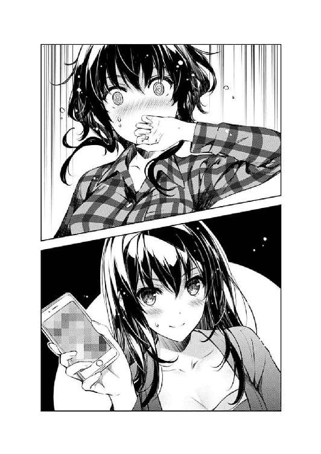
「そうだよね、トモに反撃されても仕方ないよね......こんなことしてたらさ」
「そ、そうよ、だから......」
「無理矢理、強引にやり返されたって......文句言えないよね、あたし......」
「そうじゃなくて......」
「うん、仕方ないなぁ......トモが、したいって言うんならさぁ」
「し、仕方ないなぁ、とか嬉しそうに言ってる場合じゃないでしょう氷堂さん？ そろそろ過剰なスキンシップをやめようという判断にならないのあなた？」
「それは無理だよ。だって、何度も言ってるように、トモとあたしは家族なんだもん」
「あなたちょっと家族って言葉便利に使いすぎじゃないかしら!?」
美智留の思い描く〝家族の絆〟とやらは、そんじょそこらの揺さぶりで切れたりしないくらいに強固な......というか間違いだらけのものだった。
※ ※ ※
「じゃ、あたしは地下鉄だから。またね、センパイ」
「もう二度と会うことはないでしょうけどね」
少しだけ陽が西に傾いた、御茶ノ水橋口の改札前。
周囲を多くの人たちが行き来する中、ギターを担いだ美少女と黒髪ロングの美女は、人の流れに逆らい、立ち止まったまま向かい合う。
「まぁまぁ、そんなつれないこと言わないでよ～」
「くっつかないでよ鬱陶しい」
豊ヶ崎時代には、氷の美女とか黒髪ロングの雪女などという称号を誇るほどに排他的だった詩羽も、この他校の、馴れ馴れしい年下の親分にそのバリアは通用しないようで、今も勝手に肩を組まれ、とても迷惑そうな表情と声で、弱々しく応戦するしかなかった。
「だいたい、あなたみたいに障害を障害とも感じない能天気な人なんて......」
「あ、そうだ、ちょっと携帯借りるよ～」
「人の話を聞きなさいよ」
そして未だに、自分の通う女子高でも絶大な人気とパワハラを誇る美智留は、既にサークル仲間でも同じ高校生でもなくなった年上の才女への態度を変えたりしない。
いや、逆に、今までよりも深く、濃く、近く踏み込んでくる。
「よし、センパイの電話番号ゲット～」
詩羽の携帯に自分のアドレスを登録すると、そのまま発信し、今度は自分の携帯に詩羽のアドレスを登録する。
「......そんなもの、どうするのよ？」
サークル仲間だった頃さえ、お互いのアドレスを交換していなかったという事実に今さら気づきつつ、それでも詩羽は不満げに美智留を睨みつける。
「もしかして、これからも定期的に呼び出して虐めようというの？ これだから体育会系は......」
「今日だって攻撃してた時間はセンパイの方がずっと長かったと思うけど？」
「うるさいわね」
もちろん美智留は、そんな詩羽の視線などどこ吹く風で、相変わらずお気楽に偉大なる先輩をあしらう。
「とにかく、これからも色々と相談に乗ってもらうよ？ トモのこと」
「そんなの自分で何とかしなさいよ。プロレスでもセッ......寝技でも何でも使えばいいじゃない」
「......それとサークルのこと、澤村ちゃんのこと、加藤ちゃんのこと」
「え......？」
いや、あしらっている訳ではなかった。
「皆を元気にする手助け......してもらうよ？」
「それって......」
「ね？ センパイ、あんたには、責任があるんだよ？」
たとえ、今までの態度がとてもそうは見えなかったとしても......
「あんたが放り出したサークルを、助ける義務があるんだよ？」
今日、この場所で詩羽と出逢えた偶然を......
美智留は、そこそこ神に感謝していた。
「私に......サークルに介入する権利があるっていうの？ あなたは」
「それはサークル代表が決めること......で、あたしたちはお互い、あいつがなんて答えるか知ってる、よね？」
「それは......倫理君、は」
そう、多分、あの、普段はうるさくて鬱陶しくて空気を読まない後輩は......
いつまでも、自分のファンであり続ける後輩は......
多分、お節介な先輩が突然介入してきたら、慌てて、恥じて、照れて......
そして、女神を崇める目で、見上げてくるだろう。
「あたしはサークルのためにセンパイを利用する。だからセンパイは〝仕方なく〟トモに会って相談に乗る」
「仕方、なく......？」
「その時に、まぁ多少〝何か〟あったとしても、あたしは特に関知しない」
「氷堂さん......」
「ほら、だってあたしはトモの家族だし。そっちに浮気されてもこっちに浮気してもおっけーだし」
「だからあなたの家族の解釈って......はぁ、もういいわ」
「センパイの答えも、ＯＫってことでいいんだよね？ 何しろ〝権利〟だと思ってるくらいだし」
「本当に、もう......」
もはやどこから突っ込めばいいのかすらわからず、詩羽は、いつもの自分らしくない表情をするしかなかった。
困惑と、呆れと。
それらが入り混じった、邪気のない苦笑と。
「じゃ、また連絡するね～」
美智留が、軽く手を振って、詩羽から離れ雑踏に紛れる。
「あなた自身のエロ相談はお断りよ？」
その姿を見送りつつ、詩羽も、彼女には珍しく、軽く手を振り返す。
「トモのこと、いっぱい元気づけてやってよね～」
離れる距離とともに、お互い声を大きくして。
「私と倫理君の間に何かあっても絶対に責任取らない......いえ、絶対に責任取らせるから、覚悟なさい？」
それでも、周囲の喧騒にかき消され、もう、二人の言葉は互いに届かなく......
「そんときはどうやってオトしたか詳しく教えてよね～。ま、どうせセンパイのことだから、何だかんだ言って最後の一線超えられないだろうけど～！」
「今度こそ見てなさい！ 絶対○てやる！ ○ってヤる！ ○んでやるから～！」
だから、最後の詩羽の魂の叫びも、周囲の喧騒にかき消され......ることなく、その辺にいた通行人全員が一斉に振り返った。
第八・五話 冴えない彼女の育てかたaround 30's side
五月中旬の水曜日。
少し汗ばむくらいの初夏の陽気......は、陽がさんさんと降り注いでいた日中の話。
二一時を回り、昼の陽気が噓のように冷めきってきたここは、はい、今度こそこの作品内ではお馴染みの秋葉原。
......その秋葉原の某所、大通りから少し入った小さな路地の一角に、その小さな飲み屋は存在した。
「いらっしゃいませぇぇ～」
扉が開くとともに、ドアについた鈴の音色と、男性店主の挨拶が出迎える。
その、カウンター奥から響いた、微妙に語尾が裏返った陽気な声に少し怯みながらも、入ってきた女性は目を細め、暗めの店内を見回す。
ショートカットの黒髪に、黒のジャケットに、黒のタイトスカートに、黒のタイツ。
そんな黒で統一された、いかにもなワーキングガールというかオフィスレディというか、いやそもそもそんな死語たちはともかく、たぶん仕事帰りの勤労女性。
年齢は三○前後くらいで、少し落ち着いたか、もしくはこじらせた感のある佇まいを見せている。
「お待たせ。先に始めてたから」
「あ......」
テーブル二つとカウンター数席くらいの、そこそこ狭い店内には、四、五人の客がいたけれど、その中の、カウンターの一番奥のこれまた女性が、彼女を見つけ、声を掛けてきた。
そちらの女性も、入ってきた彼女と同じく三○前後の年格好で。
けれど、スーツで決めてきた彼女とは違い、こちらはノースリーブのワンピース、しかもスカート部分に深いスリットの入った、明らかに相手とは職種の違う出で立ちで。
けれど、一目でわかる、二人のハッキリした共通点というのもあったりして。
後ろで結んだ長い髪も、そのワンピースも、脚を覆うストッキングも、やっぱり黒で統一されていた。
まぁ、特に口裏を合わせた訳でもなく、誰かの趣味でもなく、単なる偶然だったけれど。
「とりあえず乾杯ってことで。店長、グラスもう一つ」
「飲まないわよ私。この後また戻って仕事なんだから」
と、スーツの女性の方は、ワンピースの女性が抱えている一升瓶を微妙な表情で眺めつつ、自分はジンジャエールを注文した。
「こっちだってあるわよ、締め切り」
「だったらそんな飲みなさんな......」
程なくして、茶色のラベルが貼られた瓶からグラスにジンジャエールを注ぐと、既にグラスを日本酒で並々と満たしている相手に軽く掲げる。
「それじゃお疲れ様......久しぶりね、茜」
「お苑と飲むのは何年ぶりかしらね」
「やめてよその痛々しいオタクコミュニティの残骸みたいなあだ名。だいたいそんなふうに私を呼ぶのは、当時からあなたしかいなかったわよ？」
〝お苑〟と呼ばれたスーツ姿の女性の名は、町田苑子。
不死川書店というそこそこ大手の出版社で、不死川ファンタスティック文庫というライトノベルレーベルの副編集長を務める、名実ともにバリバリ（死語）のキャリアウーマン（死語）。
そして〝茜〟と呼ばれたワンピースの女性の名......ペンネームは、紅坂朱音。
漫画家にして漫画原作者にしてイラストレーター。
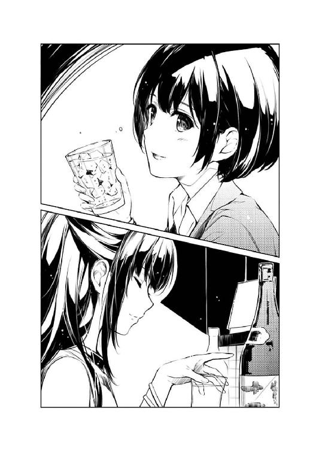
さらには、自らの作品をほぼ全てメディアミックスに導き、その派生作品の隅々に渡るまでヒットさせる、プロデューサーにしてディレクター。
ちなみに本名は、まったく意外性もなく、高坂茜。
「それにしても、見つけにくい店ねここ......住所で検索したけどなかなか見つけられなかったわよ」
「まぁ、場所的にも外観的にも隠れ家っぽさ半端ないしね。おかげで妙な業界人の巣窟なんだけど」
「......あ～」
言われて町田が店内を見回すと、ごく普通の小奇麗な居酒屋かと思っていた店内の壁に飾られているのは、こういう店によくある武○小路○篤やら、み○をやらではなく、彼女にとってもお馴染みの、同人や商業でお馴染みのオタク系イラストレーターの色紙やらポスターやらタペストリーだったりして。
その中でも、松原穂積サイン入り『恋するメトロノーム』ポスターについては、喜んでいいのか呆れていいのか判断に困ったような表情を浮かべつつ、しばらく見入るしかなかった。
「奥の壁にはスクリーンも仕込んであるからアニメの上映会もできるわよ？」
「そんな裏事情聞かされたところでどう処理したらいいのかわかんないわよ」
一滴のアルコールも摂取しないまま悪酔いしたような気分を味わうという貴重な経験を天に感謝するでもなく、町田はぐいっとジンジャエールを煽り、朱音の手元にあったポテトサラダをつまんだ。
「にしても、最後に会ったのいつだっけ？ 茜」
「不死川のパーティでしょ。お苑はずっと担当作家にくっついてたけど」
「そうじゃなくて、個人的に。早応大漫研の同期として、二人きりで会った時期よ」
「だとしたら、卒業以来のような気がするわね」
「あなたは中退でしょうが。うわ、てことは一○年以上前か」
「ずっと同じ業界にいるくせに、なかなか会う機会がないわね」
「そりゃ、茜は大学時代から大ブレイクしてたけど、私はずっと下積み編集......」
「でも今や副編じゃない」
「......それに、あなたのやり方に、それほど肯定的でもなかったしね」
「......ふん」
そこまで、アラサーの女性同士らしい身も蓋もない会話に花を咲かせつつ旧交を温めているように見えた二人だったけれど......
町田のその、少しだけ低い声音とともに放たれた言葉の刃に、朱音の方も鋭く目を細め、手元のグラスを一気に煽る。
「それじゃ、そろそろ本題に入りましょうかね......不死川さん」
「あなたはマルズ側の決定権を持っているってことでいいのね？ 茜」
空になったグラスがカウンターに軽い音を響かせたのを合図に、二人は『久しぶりに再会した大学時代の同期』から『同じ作家を取り合う二社の代理人同士』へと姿を変えた。
※ ※ ※
「まず前提として、『フィールズクロニクル』の発売は年末だから、マルズが霞詩子を拘束するのは今年いっぱい。来年になったら不死川に返すから安心して」
「こっちの前提は、『純情ヘクトパスカル』の刊行ペースを絶対に落とさないこと。霞先生には今年中にあと一冊、年明け早々にもう一冊は出してもらう」
「つまり、どういうことになる？」
「あと七か月で、ゲームシナリオ一本分と、ラノベ二冊分？」
「............」
「............」
そして、二社の代理人二人の戦いは、始まってたった数秒で暗礁に乗り上げた。
「収録もあるし、台詞部分のテキストだけは八月末には上がってるはず......」
「こっちも次の三巻が一○月予定だから、どれだけ事故っても八月末には初稿を......」
「............」
「............」
そして、さらにその数秒後に、船底に亀裂が入り浸水し始めた。
「これからの四か月間が勝負か」
「〝紅坂朱音〟ならできないでもない量かもしれないけど」
「霞詩子、確か大学生だったよな？」
「早応大。私たちの後輩よ。つい二か月前までは高校生だったけどね」
「まぁ、その若さなら......」
「量的にはともかく、今のあなたの望むクオリティをその期間で？」
「............」
「............」
なお、船に穴を開けた二人の船頭は、沈黙が訪れるたびにグラスの日本酒とジンジャエールをそれぞれ空けていたがそれはどうでもいい話だった。
けれど、次の一杯を器に注いだ時......
「ならしょうがない、あいつには死んでもらおう」
「縁起でもないこと言わないでよ！」
朱音の瞳の奥には、自分を極限まで追い込む時に見せる、クリエイターの昏い光が宿っていた。
「単なる喩えだよ。死ねというのは、ただ燃え尽きろという意味であって......」
「それってやっぱり死ねって言ってるじゃない！ クリエイターとして！」
そうして、人としての配慮を全て消し去った時、もはや隣の商売敵の戯言など、彼女の心をなに一つ動かすことはない。
「経験上、半年も休めば元に戻る......七割くらいはね」
「ふざけないでよ！」
町田の怒号が店内に響く。
けれど、周囲の客もやはりいっぱしの業界人なのか、その生臭い言い争いに驚いたり、耳をそばだてるような無粋な輩は、店主含めて誰もいなかった。
「そんなに心配なら、そちらが刊行時期をずらせばいいんじゃないの？」
「後から割り込んできて、チキンレースをやろうっていうの？」
「言っておくけど、承諾したのは霞詩子の方よ。私は強要してないからね」
「そっちが引きなさいよ！ だいたいＲＰＧを一本作ろうっていうのに、どうしてそんなに開発期間が短いのよ？」
その、町田の指摘が至極もっともだったからなのか、それとも、別のツボを突いたのか。
朱音は、昏く沈んだ瞳の色に少しだけ朱色を混ぜ、吊り上げた唇の端から新たな酒を注ぐ。
「そりゃ、私とマルズとの契約条項に盛り込まれているからだよ」
「必ず今年中に発売するって？」
「そう、こちらの落ち度で発売が延期された場合は、私に支払われる報酬と同額の違約金を向こうに支払うってね」
「......ちょっと待って」
けれど、次に酒の匂いとともに吐き出された言葉は、さすがに周囲の客たちもぎょっとするくらいには、業界の慣習......というか商取引の常識を逸脱していた。
「それって......発売延期したら、タダ働きってことじゃない......」
「安心しなよ。霞詩子や柏木エリにまでその責を負わせる気はないから。彼女たちの遅れで発売が延期された場合は、その報酬が私のポケットマネーから支払われるだけ」
「っ、そうやってクリエイターに無駄なプレッシャーをかけるのやめなさいよ！」
朱音が今まで得てきた金のことを考えれば、たとえこの一年間無給だったところで痛くも痒くもないだろう。
けれど、いくら雇い主に余裕があったとしても、その莫大な損失の原因が自分にあったと知らされたシナリオライターや原画家は......
「茜......あなたやっぱりおかしいよ」
「今さら何言ってんの」
空になった一升瓶を逆さに振り、朱音は店主に、また同じ酒を瓶ごと注文する。
そこまでがぶ飲みしても、そして、そこまで無茶な打ち明け話をしても、彼女は顔色一つ変えず、淡々と自分の狂気を晒していく。
「そこまで譲歩しなければ、マルズは私にこの仕事を任せなかった......そうしたら、旧スタッフの刷新は叶わず、『フィールズクロニクル』シリーズは旧態依然のまま衰退していくだけでしょうが」
「だからって、あなたがそこまでして抱え込む必要があるの？」
「好きなんだよフィールズクロニクル！ 知ってるだろお苑だって!?」
「っ......」
そう、それは一○年以上前。確か早応大漫研の新歓コンパの時。
偶然同じテーブルになった......というか、同じテーブルに集められた、その年の新入部員全三名は、高校時代までの自らのオタク遍歴を赤裸々に告白し、時には喧嘩し、時には笑い合い、時には感動シーンを思い描いては泣きあった。
そして、町田は思い出した......
高坂茜の創作の原点は、小学生の時にプレイした、原始の『フィールズクロニクル』だったことを。
「気が変わった......やっぱりこっちが優先だ。不死川なんかに邪魔させないよ」
売れるためなら何でもやる。売れるものなら何でも創る。
傑作と成功と金を約束された、メディアミックスのモンスター。
世間一般では、紅坂朱音はそんなふうに評されている。
それは多分、一つも間違いなんかじゃなくて。
だから彼女は、巨万の富と、名声と、ファンと、手下と、アンチと、敵にまみれた。
「霞詩子には、全力で私の〝趣味〟に付き合ってもらう」
けれど、そんな彼女のモチベーションは、皆が想像するところとは少し次元の違うところから出ているのかもしれなくて。
「『純情ヘクトパスカル』の続刊......？ そんなものは、こっちのシナリオが終わって、抜け殻になってから惰性で書けばいい」
「約束が違う。そんなの、許される訳......」
「それが嫌なら、化ければいいだけだ。簡単なことだろ？」
「な......」
クリエイターを、時には自分さえも使い捨てにして、純粋に、自分だけが望む作品を世に送り出し、無理やりにでも成功させる。
それは、ただの、クソオタク......
※ ※ ※
「......すっごい無駄な時間だったわ」
「そう？ 私は、久しぶりにお苑と話せて懐かしかったけど」
「とにかく、トラブったら法務部立てるから覚悟しときなさいよ茜」
「安心しなよ。金で解決できるならいくらでも払う」
「だからぁ、そういう問題じゃなくてね......」
結局、話し合いの決着はつかなかった。
というか、最初からこの二人で収めようなどというのに無理があっただけで。
「ああ、これで『純情ヘクトパスカル』のアニメ化が半年は遅れる......」
「なら、その遅れを取り戻せそうな優秀なプロデューサー紹介しようか？」
「嫌よ、どうせ千歳のことでしょ？ だいたいそれなら、結局不死川の社員じゃない」
「そんなに嫌うなよ。大学も漫研も会社も一緒のくせに」
「だいたいねぇ、早応の漫研って○○○○ばっかりなのよ」
「お苑も含めてな......」
そんな訳で『どちらの契約も有効なのだから、最終的に決めるのは霞詩子』という、別にわざわざ確認するまでもない結論に落ち着いた後は、二人とも気の抜けた表情でカウンターに突っ伏していた。
いや、朱音の方は酔い潰れているのかもしれなかったけれど。
「とにかく、霞詩子の方は、来年にはきちんと返すから。半年くらい我慢しろっての」
「それが余計に気に食わないのよ......」
「今度はなんだってんだよ？」
「あんた今、霞詩子〝の方は〟って言ったわよね？」
「だからそれが......」
「つまりそれ、柏木エリ〝の方は〟これからも手放すつもりはないってことでしょ？」
その言葉で、一瞬、朱音の動きが止まったことを見届けると、町田は、飲み物が空になったグラスを傾け、氷を口の中に放り込むと、ぼりぼりかじり始める。
「柏木エリは別に不死川と何も仕事してなかったから、お苑が口を出すのは......」
「霞詩子よりも柏木エリの方を高く買ってるでしょ、茜」
その町田の声は、口中の氷のせいで少しくぐもっていたけれど、その声音に頼らない態度から、彼女の理不尽な不満が見て取れた。
「柏木エリは頭良くないからね......クリエイターとして。だから、どうやったら自分の力を発揮できるのかわかってない」
その、町田の不満をなだめるため......とはとても考えられなかったけれど。
「霞詩子みたいに頭のいいヤツは、ちゃんと自分をコントロールできる。だから本当にヤバくなった時には、手を止めてしまえる」
それでも朱音は、少し穏やかな苦笑を浮かべ、その、むくれ顔の同級生に優しく語りかける。
「その点馬鹿は、自分の限界も知らずに突っ走る」
「柏木エリがそうだって言うの？」
「あれは、私並みの大馬鹿だね」
いや、その優しげな苦笑が、本当に町田に向けられているのかは、その視線の方向からでは窺えなかった。
「見ただろ？ あの『フィールズ』のキービジュ......」
「あれはもう、私や世間の知ってる柏木エリじゃなかったわね」
「あれに何日〝しか掛けなかった〟か知ってるか？ 本気で馬鹿だぞあいつ......っ」
朱音の苦笑が、いつの間にか愉快そうな笑みに変わっている。
そして、誰に向けたものかも、明確になってきている。
「確かに、柏木エリは、凄い絵描きになりかけてる......」
そして、それが明らかになるにつけ、今度は町田の表情が、苦虫を嚙み潰したものへと変わっていく。
「けれど私、霞詩子が柏木エリより下に見られるの、納得いかないの」
それはまるで、子供の成績を比較して一喜一憂する親同士のケンカのようだった。
「今年限りで霞詩子を手放したら、後悔するわよ茜？」
「さっきと言ってることが逆じゃないか？」
「なんとでも言いなさい。そのうちあのコは直木賞獲って、あんたなんかが気軽に声を掛けられる作家じゃなくなっちゃうんだから」
「文芸に行っちゃったら、お苑も使えなくなってるんじゃないの？」
「彼女が本気で文芸を目指すなら私が売り込んでいく。そっちの部署に異動してもいい」
「......本気で惚れてんのね」
「あんただって、柏木エリにベタ惚れでしょ」
「ま、才能にはね......人としてはともかく」
「そういうんじゃないでしょ！ 人を育てるってそういうことじゃないでしょ!?」
......町田が飲んでいるのは、間違いなくジンジャエールだった。
けれど今、据わった目でクダを巻いているのは、一升瓶を空けた酔っ払いの方ではなかった。
「才能に惚れたんなら、人としても惚れてあげなさいよ。せめて普通の幸せも与えてやんなさいよ」
「こっちはそんなの知らないね。本人の努力次第でしょうが」
「ならせめて、その本人の努力を邪魔するのはやめなさい！」
「やめる訳ないだろ。あいつを絵描きとして伸ばすためなら何だってやる。別にわざと不幸にするつもりもないけど、私生活には一切気を遣わない」
多分、世間一般的に正しいのは町田の方だったけれど。
けれど、その主張の仕方として圧倒的に間違っていた。素面のくせに。
「私は、自分の作家をそういうふうに扱ったりしない......だって、詩ちゃんは私が見出した一番の宝石なんだもの......っ」
「しーちゃん？ 何だそりゃ？ お苑、お前、自分のあだ名は痛々しいオタクコミュニティの残骸だって文句言ってたくせに......」
「ええいうるさいうるさい！」
ちなみに、その痛々しいニックネームの系譜が、霞詩子の〝倫理君〟によって受け継がれていることを、幸運にも朱音はまだ知らない。
と、まぁ、それはともかく......
「私はね、あのコが小説家としても、一人の女性としても幸せになれる道を一緒に探すつもりよ」
「母親かよお前は」
「せめて姉と言って欲しいわね姉と」
「けど、そんな未成年の色恋沙汰に口突っ込んだって仕方ないだろ？ 私たちみたいなババアが」
「ババアって言うなお互い独身のくせに！」
「そこだよお苑。もう女捨てた私たちが女の相談に乗れる訳ないだろ？」
「ちょっと待って茜！ 私はまだそういうの捨ててないわよ！」
「いい加減に覚悟を決めろよ......私たちに女の幸せなんて訪れないから」
その言動は、紅坂朱音の作品や人となりに触れたことのある者からしてみたら、ある程度想像できたものではあったけれど......
けれど、ファンとしては、あまり見たくもない光景だっただろう。
「その代わり、溢れんばかりの承認欲求を満たしてやるんだ......世界のオタクコンテンツを、私と、私のチルドレンで溢れさせるんだ」
......こう続くフォローがなければ。
「これも一つの、家族の形だろう？」
「......あんたの誇大妄想になんかつきあってられないわね」
と、町田は、朱音の言葉に何ら感銘を受ける様子もなく、自分のバッグを取り出し、何かを探り出す。
「もう帰るの？」
時計を見ると、そろそろ二三時に差し掛かろうとしていた。
「ううん......やっぱ飲むことにしただけ。すいません私にもグラス下さい」
しかし、バッグの中から出てきたのは、財布ではなく、飲む前に飲むタイプの胃腸薬だった。
『今から飲むのかコイツ......』みたいな呆れた目で、店主が町田を眺める。
けれどもちろん、そんな気遣いだかなんだかを気にするようなアラサー女子ではない。
「よし、お苑、今日は朝まで付き合ってもらうよ？」
ちなみにこの店は本来ならそろそろ閉店時間だ。
「始発が動き始めたら帰るわよ。九時から編集会議だし」
「大丈夫、こっちの締め切りは夜明けまでだから」
「いや茜お前やっぱ帰れ。私がその担当編集に殺される」
第八・七話 椿姫女子高校アニソン同好会の放課後
五月中旬の金曜日。
ここ数日間続いた晴れ間のおかげか、陽が傾いてもちっとも涼しさを感じさせない、校内のとある教室。
......とはいえここは、作中お馴染みの豊ヶ崎学園ではなく、そこから電車で一時間ほどの距離にある、隣県の椿姫女子高校。
............の、音楽室。
「ごめん遅くなっ......って、あれ、まだ揃ってないの？ ね～トキ、ミッチーは？」
どこの学校でも似たような感じの汎用的な内装の音楽室内......と、情景描写を簡単に済ませつつ、その場に小走りで現れたのは、少し気だるそうなハスキー声の女の子。
常に悪戯っぽい表情が浮かぶそばかす顔に、柔らかなショートカット。
椿姫女子高校三年一組、水原叡智佳。
白いブレザーの制服に身を包み......とはいえ校内では皆同じ服なのだけれど、抱えたベースを壁に立てかけると、きょろきょろと室内を見回している。
「それがさ聞いてよっ、ミッチーってば、ホームルームが終わったらいきなり担任に捕まっちゃって！」
そして、その叡智佳に応えたのは、元から音楽室内にいた二人のうちの一人。
常にハイテンションで高周波な声を響かせ、その声に相応しい小動物的な表情と動作で忙しなく動き回る、サイドポニーの女の子。
椿姫女子高校三年四組、姫川時乃。
「......追試だって。数学と英語と情報処理の」
そしてそして、その時乃の言葉を補ったのは、元から音楽室内にいたもう一人。
時乃とは対照的に、常に穏やかで落ち着き払い、実は寝てるんじゃないかと錯覚させる、ぽっちゃり系なサイドポニーの女の子。
椿姫女子高校三年五組、森丘藍子。
「いやちょっと待ってよ。その科目数もさることながらさ、まだ五月だよ？ 中間テストすらやってないのになんで追試？」
「わたしも意味わかんなくて職員室についてったの！ そしたらミッチー、二年の期末の追試まだクリアしてなかったんだって。あのコの進級、学校側のお情けだったんだよ！」
「......『新学期になったら絶対クリアする』って条件で、学校側も渋々ＯＫしたみたい」
「いやどんだけサボってたのミッチーさぁ」
「ていうかウチのガッコがそこまで進級ガバガバだってことにビックリだよ！」
「......期末、頑張って損した」
ついでに言えば、この三人には同じ学校の友人同士という以外に、もう一つの顔がある。
「にしてもミッチーの奴、それでよく豊ヶ崎に編入なんて大見得切ったね～」
水原叡智佳......最近では県内どころか東京のライブハウスでもその名が浸透しつつある、アニソンガールズバンド『icy tail』のベーシスト、エチカ。
「ねぇ。ウチと偏差値一〇以上違うし、編入試験となったら余計にハードル上がるのに」
姫川時乃......『icy tail』のギタリスト......のついでに、最近ではコスプレイヤーとしても〝トキ〟の名前で活動中。
「......まぁ、そういう足りない頭だったからこそ無謀なこと考えたのかも」
そして森丘藍子......『icy tail』のドラマーにして、陰ながら皆を支える、頼りがいのあるリーダー、ランコ。
「あんた時々容赦ないねランコ～」
「そうそう！ あの編入試験騒ぎの後だって、しばらくミッチーと口きかなかったもんね」
「......別に無視してない。向こうから声かけてこないと会話が始まらないだけ」
あ、ちなみに語尾に『～』が多用されるのが叡智佳、会話中に『っ』や『！』が多用されるのが時乃、先頭に『......』が多用されるのが藍子と覚えていただけると会話のコンフリクトが起きにくいのでお薦めである。
「いやいや怒ってるランコに話しかけるなんてそんな無茶誰にもできないから～」
「うんうんっ、いつも閉じてるその目が開いた時に何が起こるかわかんないし！」
「......別に光ったりビーム出したりする機能はないけど私の目」
なお、特に意味はないが藍子の誕生日は八月二八日......乙女座だった。
「ま、けど仕方ないか。ミッチーって〝男限定だと〟アッキー一筋だしね～」
「いやいやその言い方だと色々誤解招くでしょ女子方面に!?」
「......確かに、〝今のところ〟自分の方から手を出したって情報はないけど」
「悪意ある悪意あるよ二人とも！ そりゃ確かに百合は尊いよ萌えるよ市場ニーズあるよ？ けどミッチーってなんだかんだ言ってどノーマルだよ？」
「どノーマルがイトコに欲情するか～？」
「だから欲情とかじゃなくて！ ミッチーに言わせれば単に『遠くの他人より近くの親戚』ってだけで......」
「え～と、それ前者が勝つ要素どこにもなくない？」
「......そう、ミッチーは別に欲情してる訳じゃない。ただ親戚の男の子に対して貞操観念がないだけ」
「なにその近〇相〇脳っ!?」
で、そんな、オタク女子校生的生活を日々謳歌する彼女たちは、今はバンドのもう一人のメンバーにして、バンド内唯一の非オタにして、女子校内人気ナンバーワン女子にして、バンドの花形たるボーカリスト、ミッチーこと、椿姫女子高校三年四組、氷堂美智留の話題に花を咲かせていた。
「ま、結局そっちの方も間違い起こりそうにないんだけどね。アッキー彼女いるし。しかもあのコ怒らせると超怖いって噂だし～」
「でもミッチーに言わせると『加藤ちゃんはトモの彼女じゃなくて単なるメインヒロイン』ってことらしいけど」
「......その情報からどうして『だから彼女じゃない』に繫がるのかさっぱりわからない」
「そもそも、そんな痛キモい称号を付けられておきながら、それでも別れないってところからして脈ありすぎでしょうが～」
「言ってあげないでよそれミッチーに絶対言ってあげないでよ!?」
......そりゃもう本人はおろか誰にも聞かせられないくらいに酷いレベルで。
※ ※ ※
「で、どうすんの？ ミッチー来なくちゃ全体練習始めらんないよ～？」
それぞれ楽器のチューニングも終わり、個人練習もこなした四時過ぎになっても、拉致された美智留が解放される気配はまるっきりなかった。
「今日のところは解散しちゃう？ ランコ？」
「......今日はそれでいいかもしれないけれど......」
と、時乃に決断を促された藍子は、相変わらず誰も入ってくる気配のない扉に目をやると、根源的な命題とともにため息をつく。
「......それで、ミッチーがこっちに復帰できるのって、いつ？」
「............」
「............」
「......二月の期末から、三か月間クリアできなかった追試を、あと何日でクリアできると思う？ しかも、あの極楽トンボが」
「............」
「............」
で、そう問われた叡智佳と時乃も、『そんなのこっちが聞きたいわ』という根源的な回答をぐっと喉の奥にしまい込み、そして音楽室に静寂が訪れる。
ムードメーカーの美智留がいないだけで、『icy tail』はこうも脆く輝きを失って......とか嘆いたところで、今回はそのムードメーカー本人がムードブレイクしてしまった以上はもうどうしようもない訳で。
「ど～する？ ミッチー戻ってきたら拉致って勉強合宿に入っちゃう？」
「それしかないかもっ、じゃ、とりあえずみんなでランコの家に集まって......」
「......だからどうして二人ともそんなに私の家に上がりたがるの」
「んじゃど～すんの？ アッキーの家に連れてって徹夜で勉強させる？」
「あ、それいいかも！ ミッチーもあそこなら素直についてくるだろうし」
「......徹ゲー大会か、徹アニマラソンか、朝までオタ討論する未来しか見えない」
「......ん～」
「......まぁ、ね」
実はそのお気楽プランに大きく揺れた人間がメンバー内に三人ほどいたが、そのことをわざわざ口にする空気を読まないクソオタクはさすがにメンバーの中にはいなかった。
さらに、実は今の『icy tail』には、もう一つ切実な事情があった。
それは......
「でもさ～、ライブまで、もう一月切ってるよ～？」
などという切羽詰まった状況で、ボーカル兼リードギター兼作曲家抜きにライブの準備を進めなくてはならないという、バンドとしてありえない切実な事情だった。
「どうする？ とりあえずハッシーに相談してみる？」
そんな危機に、時乃が思い浮かべたのは、好むと好まざるとにかかわらず、同い年のイケメン男子のイラっと揺れる前髪だった。
その名を波島伊織。
数日前、前任の安芸倫也に代わり、彼女たち『icy tail』の二代目マネージャーに就任した、同人業界では以前から有名なゴロ......プロデューサーだ。
「けどさ～、あいつに相談したところで、答えわかってんじゃん」
「......『いいよ別に練習なんかしなくても。最高の演奏さえしてくれれば』とか？」
「『どうすればいいかなんて、僕にわかるわけないだろ？』とか！」
「ていうかそもそも、こんな酷いスケジュールになってるのあいつのせいだし～」
そんな、元シャッター前同人サークルの代表という、『インディーズの売り方を熟知しているメンバー』の加入は、『メジャーデビューはともかくもうちょっと有名になりたいな～』などと都合のいい夢を見る彼女たちにとって、うってつけな人材のはずだった。
ついでに容姿についても、人によって評価が大きく分かれる前任者と違い、誰もが認める汎用的なイケメン（但し間違いなくチャラい）である伊織は、彼女たちにある種の期待を抱かせるに十分な逸材だった。
しかし、実際の波島伊織という男は......
「あ～最悪っ！ アッキーがどんだけ親身だったか身に染みるよもうっ！」
「もうちょっとペース合わせて欲しいよね～。演るのこっちなんだからさ～」
「......せめて意見くらい聞く耳持ってくれたら」
確かに、そのマネジメントの手腕は舌を巻くレベルだった。
今まで、ほとんどが前座で、よくて三番手程度の扱いだった『icy tail』に、突然、二時間ぶっ通しの単独ライブを、彼女たちに何の断りもなく決めてきた。
もちろん、二時間ももたせるレパートリーも自信も持っていない彼女たち三人は、まず呆然とし、続いて猛烈に抗議した。
けれど伊織は、そのことごとくを清々しいほどにスルーした上で、さらに驚愕の計画を告げてきた。
......それは、ライブ当日の物販で『icy tail』のファーストＣＤを販売するという、彼女たちが高校卒業後の目標に掲げていたイベントを、たった一月で実現するという驚天動地なもので......
「でさでさ、あと何曲くらい作んなきゃなんないんだっけ？ オリジナル」
「ま～、ミニアルバムくらいなら、今のレパートリーで何とかなるけどさ～」
「......二時間のライブとなると、あと五曲は欲しい」
そして今、その五曲を作ることのできる、バンド唯一の作曲家は......
「やっぱ無理！」
「絶対無茶～」
「......とことん無謀」
というわけで、やっぱり三人同時にため息をつかざるを得ない。
「でもでも、だからって投げ出せる訳じゃないんだよねぇ」
「何よりも、当のミッチーがやる気満々だし～」
「......なら追試くらいクリアしておけってのは置いておくとして」
そう、何よりも、彼女たちの設立理由でありシンボルたる最強のボーカリストが、その無茶に完全に前のめりになっているから。
もともと（実力はともかく）最速でメジャーへと駆け上がっていく気満々の美智留にとって、伊織の方向性は、とても肌に合うものだったのだろう。
「でもでもっ、ミッチー騙されてるよ！ ハッシーは『icy tail』のために動いてるんじゃない」
「まぁね～、結局、『blessing software』のことしか考えてないんだよね～」
「......つまり、アッキーのため......」
その、無茶なライブとＣＤ制作の計画を提示したとき、伊織はついでのように、彼女たちの今年一年の目標を提示した。
『blessing software』の次回作の主題歌に、『icy tail』の楽曲を使用すること。
だから、冬コミまでに『icy tail』の知名度を上げること。
少なくとも、『blessing software』新作の購買理由の二割を、『icy tail』目当ての客で埋めること。
つまり、『icy tail』売り込みの真の目的は、『blessing software』の新作プロモーションのため......
「マメだよねぇ、ハッシー」
「アッキーから託されたから、手を抜く訳にはいかないんでしょ～」
「......私たちよりもアッキーだから、彼」
「アッキー彼女いるっていってんのにね」
「彼女に超嫌われそうだよね～、あいつ」
「......絶対に戦争が起こる。間違いない」
という不穏な予言をしながらも、彼女たちの表情は、さっきまでの苦々しいものから一転して、『そういうの、嫌いじゃないぜ』的な生温かい優しさに満ちていた。
「で、それを踏まえて、わたしたちはどうしよっか？」
「あいつに付くか、アッキーの彼女につくか？」
「......そういうことじゃない。私たちがつくのはミッチー」
「だったら、ハッシーの真の目的を伝えてミッチーを目覚めさせるしか！」
「そ～そ～、あたしたちが死に物狂いになったって、結局喜ぶのはハッシーとアッキーなんだからさ～」
「......けれど、ミッチーにとっては、それこそが望むところなのかも」
「う......」
「う～ん......」
「............」
そう、彼女たちは知っていた。
伊織と『icy tail』に目指すところの違いがあるように、彼女たちと美智留の間にも、大きな意識の差があるということを。
それこそ、放っておいたら高校なんか中退してしまうかもしれないほどに。
それが何の、誰のためかはさておき。
「本気で『フィールズクロニクル』に喧嘩売るつもりなんだね......アッキーも、ハッシーも、それにミッチーも」
「『フィールズクロニクル』っていうか、紅坂朱音？」
「......と、柏木エリと、霞詩子」
「でもあの二人にしても、いくらこの前までサークル仲間だったっていっても、今となっては格が違いすぎるよね？」
「ま～、今までインディーズでやってたのに、いきなりキ〇グレコード......じゃなくてソ〇ーミュージックからデビューして、しかもデビューコンサートがさ〇たまスーパーアリーナだったみたいなもんだしね～」
色々と喩えがチェンジアップなのは置いておくとして、そこから感じ取れる今の彼らの立ち位置の差は、彼女たちにとってはもはや計測不能だった。
そもそも、何がどうなったら勝ちなのかもわからない。
同人ゲームで、大手商業ゲームメーカーのキラータイトルに挑むというのは、普通の人が考えたら、ルールどころか、競技そのものが違うと思うはずで。
「......まさにドン・キホーテ、だよね」
だから結局、そういうどうしようもない結論に落ち着く訳で。
「それで結局、わたしたち、どっちにつくの？」
「だから、それはさっきも言った通り、ミッチーでしょ～が？」
「......ミッチーにつくと、必然的に『フィールズクロニクル』と戦うことになるけど？」
「じゃ、じゃあさ～、他に何があんのよ～？」
「......ミッチーにつくか、つかないか」
「............」
「............」
美智留の酔狂に付き合って、全力で駆け抜けて、勝利条件もわからない、マルズのサウンドチームや大手レコード会社のアーティストとの戦いに身を投じるか。
それとも今まで通り、インディーズのアニソンガールズバンドとして、アキバ界隈を中心にのんびり活動していくか。
......四人ではなく、今の三人で。
そんな、あまりにも途方もなく、馬鹿馬鹿しく、けれど彼女たちにとって深刻な二択を......
「ま、とりあえず今週末だね！」
「ミッチーを拉致って、ランコの家に集合ね～」
「......だからどうして私の家なのかと」
結局、彼女たちは、選ばなかった。
その〝選ばないという選択〟が、結果的に美智留に、そして『blessing software』につくということになるとわかっていたけれど。
「で、どうやって勉強させる？ あのミッチーに」
「机に縛りつけるしかないっしょ～」
「......なら帰りにロープ買っていって。うちにはないから」
それでも、自分たちなりに、前に進むことにした。
ライブの成功と、ＣＤの発売と、そこから派生する成功の連鎖を祈って。
三人は......いや、四人は、この小さな音楽室で、小さな小さな叛逆の狼煙を上げた。
このインターミッションは九巻エピローグの後にお読みください
「それじゃ、また明日......今度こそ学校でね？」
「別に泊まってってもいいのに。もう遅いし」
「今日はいいよ。残ってたって特にやることもないし、そもそも平日だし」
五月下旬、月曜の夜。一一時をとっくに過ぎた深夜。
それは『blessing software』セカンドプロジェクト『冴えない彼女の育てかた（仮）』の、（一ルート分の）シナリオが（ある程度）完成した、記念すべき日。
「あ、ちょっと待って加......恵、駅まで送ってくから」
「あ～、いいよ。えっと、確か......『友達に噂されると恥ずかしいし』だっけ？」
「ついさっき友好度アップしたはずなのに何その仕打ち!?」
その、渦中のシナリオライター、安芸倫也は、自宅の玄関で、ついさっき、呼び方を『加藤』から『恵』へとステップアップしたはずの加藤恵の、それでも変わらぬ塩対応に、今日何度目かの怨嗟の声を上げる。
「それじゃあね」
「......本当に気をつけろよ？」
で、恵の方は、そんなふうに、意識してか無意識か、倫也を元通りフラットにあしらい、さっさと玄関を退出すると、通りへと足を踏み出す。
ちょっとした小高い場所にある、この安芸家から最寄りの駅へは、長く急な坂を下り、国道に出てからさらに数分歩く必要がある。
恵は、まずはその急坂まで出ようと、左へと折れてそのまま道を下り......
「あ......」
そして、何気なくか、それともわざとらしくか、くるりと一八〇度回転し、反対側の上り坂を見上げる。
いや、正確には、その坂を上りきったところにそびえ立つ、この住宅街の中でもさらに豪奢で大きなお屋敷を。
『わたしが、英梨々に謝ってくる......直接、ね』
そこは、ついさっき倫也と約束した、仲直りの相手がいるところ。
三月の初めに、ちょっとした......いや、とても大きなすれ違いとともに、口もきかない間柄になってしまったかつての親友、澤村・スペンサー・英梨々の家。
「......約束は、守らないとね」
恵は、スマホを取り出すと、その画面を慣れた手つきで素早く操作し、画面にたくさんの文字を生み出し始める。
もちろん、歩きスマホなんかしない。
いや、昔は結構平気でやっていたのだけれど、そういうルール違反をしつこく注意する変なオタクが周囲を徘徊し始めた頃から、恵もいい加減、その理不尽なお説教を聞くのがウザくなり、結果、誰も見てなくても小さなマナーを律儀に守る小市民になってしまった。
それは交通ルール、並ぶべき行列や守るべき時間に関するマナー、果てはゲームのレーティング遵守に至るまで......
本当に、あの妙に倫理的な......と言い出すと、どこかの先輩っぽくなってしまうので、恵はあくまでフラットにスルーする感じで、そのウザったらしい眼鏡......がなくなって、その容姿をどのように表現したらいいか難しい判断を迫られるようになった童顔の男子のことを思い浮かべる。
と、そんなふうに脳のリソースをよそ事に割り振っている間は、恵の指はとてもスムーズにメッセージを紡ぎ出していた。
「さて、と......？」
けれど、いざその文面を、送信ボタンによって流す段になったところで......
その、今までとは比べ物にならないほど簡単な、たった一つのアクションが起こせず固まってしまう。
From: 〝加藤 恵〟〈megumikato@○○○.○○〉
To: 〝英梨々〟〈e-lily@○○○.○○〉
Subject: 久しぶり
恵です。お疲れさま。
この前、新作ゲームの絵見たよ。
あまりオタクっぽく、じゃなくてプロっぽく感想言うことはできないけど、
すごかったと思うよ。すごすぎてちょっと頭が混乱しちゃうくらい。
えっと、それで、倫也くんから聞いてるんだけど、
英梨々がわたしと話したいって言ってくれてることについて。
うん、わたしも話したい。というか、やっと決心がついた。
だから会って、たくさん話そう？
今までのこととか、これからのこととか、色々。
今週末あたり、時間取れないかな？
土曜でも日曜でも、どっちでも大丈夫。
返事、待ってるね。
「......う～ん」
その、自分がほぼ無意識のうちに書き上げた文面を改めて眺め、恵は、その内容に漂う拭いきれない違和感に顔をしかめる。
『すごすぎてちょっと頭が混乱しちゃうくらい』......噓ではないけれど、本当の感情を隠してポジティブっぽく書いているところが卑怯くさい。
『倫也くん』......これを今言ってしまうと、せっかくまとまりかけた話を、今度は英梨々の方から台無しにしてしまうかもしれない。
『やっと決心がついた』......それだけ時間がかかったことの責任を相手に押しつけているみたいでなんだか嫌みっぽい。
『たくさん話そう？』とか『待ってるね』とか......二か月も放っておいたくせに今さら馴れ馴れしくないだろうか？
『話したいです』とか『待ってます』とか丁寧語に直すべきでは？
「うぅ～ん......」
などと恵は、普段なら悩むはずのない些細なことに延々と引っかかりを覚え続け、そして袋小路に迷い込む。
英梨々の前で、みっともなく泣き出し、理不尽になじり、一方的に絶交を告げて勝手に去っていったあの日が随分と遠いことのように思えるくせに......
思い返せば、その言葉の一つ一つや、その時の感情一つ一つまで事細かに思い出せてしまうのは何故だろうか。
今でも恵は、その仲違いの理由については、自分の方が悪かったとは思っていない。
けれど、あの日からずっと抱えていた英梨々への後ろめたさは、そろそろ爆発してしまいそうなほど膨らんでいて。
......だから、やっぱりきっかけの一言が浮かばない。
そして恵の中に、また、色々と臆病な自分が顔を出す。
例えば、もう一度、調停役の力を借りて......
「ううん、それは駄目」
けれど、そんな後戻りをしてしまっては、あの宣言の意味がない。
確かに恵は、自分の意志で、自分の言葉で、自分から謝罪......いや、仲直りすると誓ったのだから。
そんなふうに、何十分も逡巡し、書いては消し、消しては書いてを繰り返し。
「......あ」
そして何かに気づいたようにスマホの画面を凝視すると、恵は今度こそ、決意を浮かべた表情で頷く。
続いて、メッセージを打つ手を止め、アドレス帳を呼び出す。
やっぱり電話で、声で、彼女の今の決心を伝えるために......
「あ、ごめん、終電逃しちゃったからやっぱり泊めてくれないかな？ ......倫也くん」
第九・五話 ところで表紙の女の子って一体誰ですか
「あ～、もう完売しちゃったんですか」
「すいませんすいませんっ！ そ、その、今回はラクガキコピー誌だったので、ちょっとしか刷ってなくて......」
六月一週目の日曜日の昼下がり。
外に降る雨が、屋内に湿気と蒸し暑さを運び込んでくるここは、池袋のサンシャインシティのホール。
「そっかぁ......じゃ、見本誌見せてもらっていいですか？」
「本当に、ごめんなさい......」
今日一日だけ開催の、とあるオールジャンルの同人誌即売会会場に、女の子の消え入りそうな声が、やはり周囲の喧騒に消え入った。
壁際に配置されたそのスペースは、ＰＯＰもポスターもお品書きもなく、白い敷物の上に、ホチキスで綴じられた薄いコピー誌が一冊、表紙にマジックで『見本』と書かれた状態で置かれていた。
そんな閑散としたテーブルの前で、さっきから幾度も幾度も、スペースを訪れた客にいちいち頭を下げまくっているのは、長めのお下げ髪を両肩から前に垂らした、見た目中学生か高校生くらいの女の子。
とはいえ、その垂らした髪の先にある胸周りの豊かさは、とても中学生の見た目ではなかったけれど。
......まぁ、そんな顔とボディがちょっとばかりアンバランスな童顔巨乳の彼女は、ほぼ一月ぶり以来の波島出海。
ちなみにここの会場内では、サークル『ファンシーウェーブ』代表と言った方が通りがいいかもしれない。
「あ～、やっぱりオリキャラも可愛いっ......失敗したなぁ、最初に並んでればなぁ」
その出海と机を挟んで向かい合い、コピー誌をめくりつつため息をついているのは、彼女より明らかに年上の、大学生か社会人くらいの眼鏡をかけた女性で。
「......あの、いつも来てくれてる方ですよね？」
「あ、覚えててくれたんですか！」
「そりゃ覚えてますよ......」
実は出海にとっては、同人デビューしたての、『リトルラブ・ラプソディ』同人誌を五〇部刷って三〇部も売れなかった頃からの、忘れようもない大切な常連さんだった。
「へ～、嬉しいなぁ、波島さん、『rouge en rouge』のゲーム原画なんて大出世しちゃったから、もうリトラプ本時代のことなんて黒歴史かと思ってた」
「いえ、そんなこと全然......でも、取り置きしてなくてごめんなさい。えっと、自分の分ももうなくて......」
彼女の言う通り『rouge en rougeのゲーム原画家に大出世した』出海のサークルは、開場前から、それはもう雰囲気が悪かった。
そもそも準備会の方も、今まで大して実績のなかったはずの『ファンシーウェーブ』を壁配置したところからも、ある程度の読みと配慮はできていたはずだった。
にもかかわらず、朝七時から必死にコンビニでコピーして九時半に会場に着いてみれば、もはやそこには刷ってきた五〇部を数倍も上回る行列〝らしきもの〟が形成されていて、出海の顔面を蒼くさせた。
準備会スタッフが人の塊を必死で散らし、同行していた兄の伊織が様々な対応をこなす中、出海はあまりの申し訳なさで周囲の人たちの顔を見ることもできず、背中を丸めてただホチキスを打ち続け......
そして開場して一〇分で、用意した本はめでたくもありめでたくもなく完売し、後には買えなかった大量の人々の怨嗟の声が残った。
まぁ、とはいえ、そんなサークル側も一般参加者側も不幸になるイベント参加を決めたのは、出海自身の意志ではなかったのだけれど......
「あの、このラフって......もしかして次回作の？」
「あ、はい。またオリジナルゲームのキャラデザやる予定で......今度は『rouge en rouge』とは違うサークルなんですけど」
そう、出海が今回用意した本は実のところ、現在絶賛開発中の『blessing software』新作『冴えない彼女の育てかた（仮）』の準備号ともいえる内容で。
ヒロインのキャラ原案や表情パターンが、そのシナリオの方向性とは関係なく、これでもかとばかりに萌え方向に突き抜けた〝はずの〟逸品だ。
「どうもありがとうございました......これ、ゲーム出たら絶対買いますね！」
「は、はいっ、よろしくお願いしますっ」
「それと、またリトラプ漫画も待ってます」
「それは......はい、またいつか、時間ができたら！」
「ありがとう......じゃ、次回作頑張ってください！」
「こちらこそっ、ありがとうございますっ！」
去っていく常連さんの背中に、一〇秒以上も深々と頭を下げ、ようやく出海はパイプ椅子へと背中を預け、深く息をついた。
開場から謝り通しだった彼女にとって、今の純粋な感想と励ましは、砂漠の中を彷徨ってやっと見つけたオアシスのように、心の隙間に染み込んだ。
「にしても......本当に、お兄ちゃんの言う通り効果あるのかなこれ？」
兄であり、サークル『blessing software』の新プロデューサーでもある波島伊織から受けた指示を思い返し、さらに今まで受けたユーザーからの色々な反応も思い返す。
「この感じじゃ、収穫よりもストレスの方が多いんじゃ......」
と、そんなふうに出海が微妙な表情で思案に暮れていると......
「いえ、だから兄さんは今挨拶回りに......」
「噓おっしゃい！ 一〇分前も三〇分前も一時間前も同じこと言ったじゃないの貴女！」
「そ～ですよそ～ですとも、一時間前から戻ってきてないんですってば～」
「遅すぎるっ......！ どこの女のハウスにしけ込んでるのっ!?」
「ひええええっ、すいませんすいませんっ！」
「うわぁ......」
さっきまでの自分と同じように、机を挟んで一般参加者に頭を下げまくっている、右隣のサークルの女性が目に入った。
出海より短い髪を、出海と同じように後ろで二つ結び、見た目高校生か大学生くらい。
華やかで、けれどオタクが好みそうな派手さともちょっと違う、ティーンズファッション誌から抜け出たような風貌のそのお隣さんは、けれど今は目の前の痛々しい（見た目も言動も）女性に、理不尽に責められなじられ、その華やかな全身を縮こまらせて、ひたすら俯いていた。
その、さっきまでの自分とまったく同じながら、さっきまでの自分より遥かに気の毒そうな謝罪っぷりを眺めながら、出海は『世の中、やっぱり下には下がいるんだなぁ』との思いとともに、自らの心が落ち着いていくのを感じていた。
......いやそれが相手にとても失礼なことだとはわかっていたけれど。
「はぁぁぁぁ～」
やがて責め疲れたのか、捨て台詞を残して理不尽な一般参加者が去っていくと、深々と頭を下げていたお隣さんは、ゆっくりと頭を上げ、周囲を見渡すと、椅子に背をもたれさせ盛大にため息をついた。
「お、お疲れ様です～」
と、出海は、そんな、数分前の自分みたいに疲労困憊の彼女に労いの言葉を掛ける。
「あ～、ど～もごめんなさい。見苦しいとこお見せしちゃって」
「いえ、大変ですね～お互い」
普段なら、初対面の相手に対して気安く声を掛けるようなことはしない内弁慶......いや身内以外には紳士的......いや淑女的な出海だったけれど。
けれどこの時は、溢れ出んばかりの同情心というか優越感......いやまぁ、様々な要因で慈愛の念を高めていたため、自然とお隣さんを気遣う言葉が口から漏れていた。
「いやまぁこっちは身内の不始末みたいなところあるし。ある意味しょうがないかなって」
「お兄さん、でしたっけ？」
「あ、聞こえてた？ そう、ウチの兄......っていうかサークル代表なんだけど、あたしが本買って戻ってきた途端、彼女ほっぽらかして挨拶回りに出ちゃって」
「あ、うちも似たようなものです。お兄ちゃん、なんか色々と仕掛けておくことがあるから後は任せたよって、いつの間にかいなくなっちゃって」
「そっか、お互い不肖の兄持ちなんだ。ほんっと大変よね？」
「あはは......」
で、その出海のちょっとした勇気は、相手の、こっちよりも遥かに気さくでコミュ力の高そうな反応によって正しく報われた。
何よりちょっとした共通点が、お互いポイント高そうだった。
※ ※ ※
「うわぁ、この人、色使いすっごい！」
「でしょでしょ？ ページ数は少ないけど毎回フルカラーでさ。でも毎回開場一時間で完売しちゃうから入手難度高いんだよ～」
そんなこんなで、お互いの不幸な境遇にすっかり二人は意気投合し、お隣のサークルのお手伝いさんが買ってきた同人誌を広げてお宝品評会を始めた。
「こ、こっちの本は......うわこのおまけ本可愛い～！」
「そうそう！ この人は逆にラフのおまけ本でこそ真価を発揮するタイプでね。だからおまけが付かない書店委託に頼る訳にはいかないのよね～」
まぁ、その過剰なまでの盛り上がりには、二人の世界を作り上げることで『もう完売ですか......』とか『書店委託は？』とか『十分な客に行き渡るようにするのがサークルの務めだろ』とかいう一般参加者からの叱責や質問や言いがかりを避けるという目的も多分にあったりして......
「ほんと今日は作戦成功してよかった～。やっぱり初手をどこにするかってのが戦術的に一番難しいポイントなんだけど、こればっかりは当日の搬入数や頒布物の種類によって変わってきちゃうからね」
「そ、そんなに毎回、回る順番を変えるんですか？」
「もちろん！ 例えばいつも搬入数の多い大手サークルが、今回だけコピー誌を数十部しか刷ってこなかったらどう？ そこはもう戦場でしょ最前線でしょ？」
「ごめんなさいごめんなさいごめんなさいっ」
そんなのどかな会話の中でも勝手に自分の弱みを見つけ傷つきつつも、出海は、他人のお宝を指を咥えて眺めるという、さっきまでとは比べ物にならないほど至高の時間を過ごしていた。
「でも、ということは、開場前からホール中を見て回ってるってことですか？ 設営とかは？」
「あ～、うん、それは兄さんが......」
「けど、開場してすぐは本買いに走り回ってるんですよね？ その時の売り子は？」
「あ～、うん、それも兄さんが......」
「ということは、一体何を手伝って......」
「あ～、うん、わたしが戻った時に本が完売してたら、それ以降は店番を引き受けるってことで......」
「それだけですか？」
「あ～、うん......そう」
「あ、じゃあ、その代わりお兄さんに頼まれた本を買ってきたりとか......」
「あ～、うん、兄さんあんまり同人誌に興味なくて、一〇〇パーセントあたしの......」
「それお手伝いっていうよりただのチケ入場組......何でもないですごめんなさいっ！」
「あ～、うん......まぁ、なんとゆ～か、傍から見たらそうとしか思えないよね～、あはは......ごめんなさい」
「あ、いえ、別に、そんなこともないんじゃないかと思わないでもなくもないかもしれない可能性がなきにしもあらず......ごめんなさい」
と、そんな至福の時間も、出海自身の不用意な一言でまた微妙に盛り下がり......
いやしかし、サークル代表が本を作り設営して売り子している間に、お手伝いがホールをリサーチして効率的に買い物してそのお宝を全部自分でガメるというのは、一般的に考えたらものすごくアウトっぽいからしょうがない。
「ま～、ほら、その辺りは色々と人に言えない事情が......もちろん、エロ同人誌的なやつじゃないのが......」
「い、いいんです......今回に限っては、わたしも人のこと言えないから......」
「え、てことはあなた、もしかしてあたしも知らない会場限定本を買い漁ってた？ どこに隠してあるのそのお宝!?」
「あ～、いえ、そういう意味じゃなくてですね......」
しゅんと落ち込んでいたかと思うと、一瞬で色めき立つお隣さんに少々困惑しつつ、けれど出海は、この会場の中で今日初めて、本音らしきことを漏らす。
「わたし、今日の本、本当は、みんなに届けたくて描いたんじゃないんです......」
※ ※ ※
「......噓、でしょ？」
「いえ本当なんです。参加そのものを知らされたのだって一昨日で......」
自分の机の上に唯一残った見本誌をお隣さんに差し出すと、出海は少しだけ自虐的に話し始める。
今回の、まるで納得のいっていない、サークル参加の経緯を。
「だから、全然準備できてなかった......今までのラフを切り貼りして、昨日一日でどうにかコピー誌用の原稿としてまとめて、今朝コンビニで刷ってきて......」
そんな出海の意外な告白を、お隣サークルのお手伝いさんは真剣な表情で受け止め、受け取った『ファンシーウェーブ』の見本誌を、パラパラと流し読みする。
「だから、今回の本、実は全然納得できてないんです。本当だったらこんなものでお金を取りたくないんです」
そして、全部で八ページしかない紙束をあっという間に読み終えると、もう一度表紙に戻り、今度は一ページ一ページ、舐めるようにゆっくりとめくり始め......
「それでもわたしが、今回のイベントに参加した理由は......」
「うわぁぁぁぁ～！ やっちゃったぁぁぁぁ～！」
「ふぇっ!?」
そして、唐突に頭を抱えて絶叫した。
「なにこれ？ 今日こんな本出てたの？ しかも隣のサークルにっ!?」
「え、えっと、あの......？」
「何が作戦成功よ！ どこが最前線かも全然気づいてなかった間抜け司令官じゃない！ 噓～、なにこれもう完売してるの!?」
「あ、はい、その、もうわたしの分もなくて......」
「や、やっちゃったぁ～、痛恨、なんという灯台下暗し......今日買ってきたどれよりも可愛いっ、可愛いっ！ 可愛いよぉぉぉ～！」
「あ、いえ、えっと、あの......ありがとうございます」
ちなみに、彼女のそのリアクションの理由は、どうやら出海の本の、キャラクターの造形に悶絶していたためのようだった。
「は、波島って......もしかして波島出海？ 『永遠と刹那のエヴァンジル』のっ!?」
「あ、プレイしてくれてたんですか？」
「うわ～、うわ～、うわ～、ほ、本物だぁぁぁ～！ 『rouge en rouge』の波島出海だったんだぁぁぁ～」
「あ、いえ、『rouge en rouge』は、一回限りの参加で......うわわわわっ」
さらに出海が、隠してもいなかった〝正体〟を明かすと、お隣さんのテンションは今度こそ頂点に達した。
興奮のあまり、暑苦しいファン丸出しで、出海の手を取りぶんぶんと振り回す。
それはいつもなら、出海や、その師匠が取るような態度そのもので。
「うっそ、隣にいたなんて......どうしてサークルカットで気づかなかったんだろ。普段なら絶対見逃さないのに～」
「あ、それは......ごめんなさい」
何しろ参加そのものを直前まで知らされていなかったのだから、サークルカットを自分で描けるはずもなかった訳で。
「こ、こっちこそ興奮しすぎてゴメンなさい。あたし、あの作品のキャラ大好きで......ゲームはもちろん、おまけ本の設定資料集の方も持ってて」
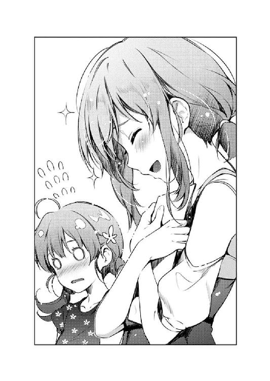
「ほ、本当に......？ あ、いえ、ありがとうございます、本当に」
その言葉の真偽を確かめることが馬鹿馬鹿しくなるほどナチュラルハイなお隣さんのテンションに、出海は思わず、こちらもナチュラルな笑みと、心からの感謝の言葉を漏らす。
「やだなぁもう、この本が納得できてないとか、修行僧みたいなこと言うのやめて欲しいなぁ。これで駄目ならあたしの本......あ、いや、それはともかく......」
と、相手もさすがに色々と度を越した反応が今さら恥ずかしくなったのか、握っていた手を離し、自らを落ち着かせるように咳払いをして息を整える。
「で、どうして、こんな可愛い本が納得いかないの？」
そして、次にこちらに向き直ったときには、しっかりと落ち着き払い、真剣な表情で出海の言葉に向き合おうとしていた。
「スランプ......？」
「わたし自身は、全然そんな自覚なかったんですけどね......」
ついさっきまで、二人の世界に閉じこもって一緒にはしゃいでいた二人は......
今は、やっぱり二人の世界に閉じこもって、真剣に言葉を交わし合う。
「自分では全然気づかなかったんですけど、わたし最近、いつの間にか、ある絵描きさんの影響受けちゃってたみたいなんです」
きっかけは、ゴールデンウィークに動画配信された『フィールズクロニクル二〇周年記念イベント』の時のこと。
そこで大々的に公開された、柏木エリによる『フィールズクロニクル』のキービジュアル。
その、精緻で繊細で芸術的で、ある種神々しさまで覚える一枚の絵を見た瞬間から、出海の中で勝手に絵柄の変化が起こっていた。
けれどそれは文字通り変化で、進化とするには、拙速なものだった。
「え～、でもそんなの日常茶飯事じゃない？ 感動するものを見たり感じたりしたら、それを自分の中に取り込もうとするのって本能みたいなものだと思うけどなぁ」
「？ ......もしかして、あなたも絵を描いたりするんですか？」
「っ!? あ、あ～......いや、まぁ、えっと、その......ないよ？」
お隣のお手伝いさんの、素人ながらも、思いのほか的確な意見に、出海は少し驚きつつも結構な感銘を受け......
「でも、その人の絵だけは取り込んじゃ駄目だったんです。近づいちゃいけなかったんです」
けれど、それでも譲れない気持ちを口に出す。
だって、出海は......
「......つまり波島さんは」
「え？」
「勝ちたいんだ、その人に」
「えっ......」
「だから、影響を受ける訳にはいかない......それを認めたら、自分がその人の後ろにいるのも認めることになる」
「......えっと、あなた本当に絵描いたことないんですか？」
「今はそんなの、どうだっていいよ」
それは出海にとって、ちっともどうでも良くないことではあったけれど。
それでも出海にとって、今はその真偽を確かめるよりも先に知りたいことがあった。
「じゃ、じゃあ......あなたは、どうしたらいいと思いますか？」
そんな、自称素人のくせに、鋭すぎる彼女が提示する、答えを。
「その答えを探すために、イベントに参加したってこと？」
「お兄ちゃんが、みんなの......できるだけたくさんのユーザーの声を聞けって」
だから、たった一日で同人誌をでっち上げた。
ちゃんと当初の企画通り、萌えゲーの絵になっているか。
〝凄い絵〟じゃなくて、ちゃんと〝凄い可愛い絵〟になっているか。
シナリオライターの暴走により、情念溢れる物語となってしまった次回作を、自分の絵で〝偽装〟できているのか......
「だからこの本は、わたしの答案用紙なんです」
「採点するのは、あたしたちってこと？」
「わたしが、わたしのままでいられているか。飲み込まれていないか。ちゃんとあざといか。みんながわたしの絵を可愛いって言ってくれるか。萌えるって言ってくれるか......間違っても、綺麗だなんて言われたりしないか」
「............」
隣のサークルの〝単なるお手伝い〟な彼女は、出海の言葉の奔流を、目を閉じて、黙って聞いていた。
「どう、ですか？ わたしの絵......」
「あのさ波島さん......あたし、さっきからずっと言ってるよね？」
しかし、その沈黙に痺れを切らした出海が先を促すと、目と口を同時に開き、ようやく出海が求めるものを口に乗せる。
「この本は、すごく可愛いって。今日見た本の中でナンバーワンだって」
「ちゃんと泥くさいですか？
洗練され過ぎてないですか？
しっかり欠点はありますか？
光るものもありますか？
そして......これは間違いなく、わたしだけの絵、ですか？」
「うん、泥くさい。洗練にはほど遠い。完璧じゃない。それに、キラッキラ」
空気を読まず、初対面の相手にまで、しつこく食い下がる出海に......
それでもお隣の彼女は、キレたりせずに、あくまでも誠実に答える。
「......でも、〝あなただけの絵〟なんてものは、ここにはないよ」
そして、誠実だからこそ、出海の求めるものを、そのまま与えたりはしなかった。
「どうして......？」
「それは......だって、間違いなく誰かの影響を受けてるもん、この絵」
「そんなっ、わたし一生懸命、あの人の色をなくそうって......っ」
「あ～、多分、影響受けてるのそっちじゃないよ」
「え？」
「この企画に。この物語に。そして、この物語を作った人に......」
彼女が指し示したその箇所には、『冴えない彼女の育てかた（仮）キャラクター原案』という説明の一文が、出海の筆跡で踊っていた。
「えっとね、あたしの話、してもいいかな？」
「え......？」
「あたしもね、物語に絵をつける仕事、してるんだ」
彼女は、『絵を描いたことがない』という自分の言葉を翻さないまま、その話を始めてしまった。
「でもね、初めてその仕事をしたときは散々でさ......物語を作った人にも、その人に引き合わせてくれた人にも、『これは、可愛いだけの絵だ』って、思いっきり否定されちゃった」
「え、それって、否定されてるんですか？」
「......もう少し補足すると、『文章に向き合っていない、物語との相乗効果を生み出さない、単に一枚っきりの絵』ってことなんだけどね」
「あ......」
だから、今彼女が話しているのは、ここではあくまで仮定の話。
例えば、違う世界線の話。
「正直、そのときのあたしには、何が悪いのかさっぱりでね......だから、色んな人と話して、相談に乗ってもらって、自分でも死に物狂いで考えて......」
「そ、それで......答えは見つかったんですか？」
「うん、見つかった......誰かに教えてもらったのか、自分で見つけたのか、今となっては覚えてないんだけどね」
「そ、それって、どんな......？」
「......ヤだなぁ、あなたは、それをもう持ってるじゃない」
「え......？」
「物語に影響を受けて、文章に寄り添って、お互いの魅力を何倍にも引き上げる力......」
そして、次に彼女が指し示したのは、キャラクター設定に添えられた台詞サンプル。
『絶対に、付き合ってもらうわよ......これからも、一生ね？』
金髪ヒロインの、満面の笑みの表情パターンの横に、そのサンプル台詞は鎮座していた。
「この表情は、物語の一場面を切り取ってる。だからデタラメに可愛い。めちゃくちゃハっとする」
と、彼女はその言葉に噓がないことの証明のように、恍惚の表情で出海のイラストを舐め回すように眺める。
「凄いよ、あなたの絵......この台詞を数倍に彩る、めっちゃ可愛い表情してる」
「わたしの絵が......この台詞に影響を受けたっていうんですか？」
「でなければ、こんな絶妙な表情になんないよ。あたし、泣きそうになんないよ」
そして彼女は、また、その言葉に噓がないことの証明のように、出海の本を、胸にぎゅっとかき抱く。
「何を直す必要があるの？ 独り立ちなんてする意味あるの？ あなたには、こんなに凄いことができてるっていうのに？」
そう、出海を絶賛してみせたお隣さんの表情には、大好きな絵に出逢えた嬉しさと、お気に入りのイラストレーターを見つけた満足感と......
そして、少しばかりの嫉妬と、悔しさが浮かんでいた。
※ ※ ※
「どうやら、答えが見つかったみたいだね、出海」
「ん～？」
イベントからの帰り道。
電車の席で、同人誌を読みふけっていた出海に、隣から声がかかる。
出海をサークルスペースにほっぽり出し、隣のサークル代表と同様にずっと外出していた伊織は、やっぱり隣のサークル代表と同様にイベント終了直前にスペースに戻ってくると、てきぱきと撤収作業を始め、今はこうして出海の隣席の人となっていた。
「戻ってきてみたら、随分とすっきりした顔してたし......色んな人と話すことはできたかな？」
「まぁ、うん」
「それで、自分の進むべき方向は決まったかい？」
「......なんとか」
「そうか、そりゃ良かった」
最初、今日のイベント参加の話を聞かされた時、出海は、兄の伊織が一体何を考えているのか正直わからなかった。
いや、確かに兄からは、ちゃんと『ユーザーの声を聞いて自分の方向性を決める』という明確な指示は伝えられていた。
けれど、何より相手はあの波島伊織だ。その言葉にどれだけの真実が含まれているかなんて誰にもわからない。
彼が、どこを狙って、何を仕掛けたのか。あるいは何も考えていなかったのか。
その結果、狙い通りに事が運んだのか、それとも的外れに終わったのか。
「よかったかどうかはわからないよ？ お兄ちゃんの期待してた方向じゃないかも」
出海が、〝お隣のサークルのお手伝いさん〟から示された『何も変える必要はない』という結論が、果たして兄の求めたものかどうか......
「いいんだよ、そんなことは......出海が、自分の意志で、覚悟を決めることが重要だったんだから」
「......やっぱり、ね」
でも結局、明確にどれが正解でどれが不正解だなんてものはなかった。
出海がずっと追い求めていたものに、大した意味なんかなかった。
いや、そうじゃなく......
出海が、そうやって必死に試行錯誤して、自分なりの結論に辿り着き、前に進む力を得ることこそが、兄の求めたことだったようで。
けれど出海は、そんな兄の、いつも通りの意地悪な謎かけに、今日だけは感謝するしかなかった。
それは、兄の思惑通りに自分が成長したことに対してではなく。
心に残る、記憶に残る、素敵な出逢いをしたということに対してで......
「ところで出海、さっきから随分と熱心に読んでるじゃないか、その同人誌」
その伊織の、明らかにからかいの含まれた声音に、ようやく出海は顔を上げ、ほんの少しだけ責めるような視線を向ける。
「どうして言ってくれなかったのお兄ちゃん？ お隣のサークルが、嵯峨野文雄先生の『cutie fake』だったって......」
「いやぁ、そんなのとっくに知ってると思ってたからさ......そもそもカタログ見れば一発だし、挨拶すれば一瞬だろ？」
「開場前はホチキス留めでカタログ見てる暇なかったし、挨拶しようとした頃には嵯峨野先生とっくに完売していなくなってたし！」
「まぁまぁ、そういうこともあろうかと僕がちゃんと開場前に挨拶して本を交換しておいたからいいじゃないか。その本、さっき〇‐ＢＯＯＫＳでチェックしたら買い取り五千円だったよ？」
「まぁ、それについては......ふわぁっ」
ページを開くたびに、次から次へと色とりどりの美少女が出海の瞳に飛び込んできて、いちいち感嘆の声を上げずにはいられない。
出海にしてみれば、今日、あの会場に存在した本の中のナンバーワンは、これに間違いなかった。
......まぁ、比べる対象は、自分の本以外には一冊も読んでいない訳だけれど。
「さすが、最近の急成長株だよね、嵯峨野文雄......僕が『rouge en rouge』にいた頃なら放っておかないんだけどなぁ」
「そんなことしたら、霞ヶ丘先輩に殺されるよ？」
「いやいや、霞詩子だって朱音さんに引き抜かれてサークルやめてるし、とやかく言われる筋合いは......」
「お兄ちゃん！」
嵯峨野文雄──
サークル『cutie fake』主宰のイラストレーター。
都内の某大学に所属する大学生。性別：男（以上、『cutie fake』ＨＰより）。
最近では商業にも進出中。
栄えある初仕事は『純情ヘクトパスカル』（著：霞詩子）の挿絵。
つまり、不死川ファンタスティック文庫での、現在の霞詩子......霞ヶ丘詩羽のパートナーだった。
「ま、今日、本人と話した感じだと、僕と結構キャラが被ってたから、あれで霞詩子とうまく行くとはとても信じられなかったけどね」
「あ～......うん」
......なお私生活では相当の女好きで、常に複数の彼女と付き合い、女同士のいさかいが絶えないとかなんとか（以上、〇ちゃん〇る同人板より）。
「本当、人は見かけによらないとしか言いようがないなぁ......あんな、どう見てもオタクの素養なんかどこにもない、思いっきりゲスそうな彼が、こんな可愛さを突き詰めた絵を描くなんてさ」
「別に、性格とか私生活は、能力には関係ないでしょ？」
「ま、そうなのかもしれないけどね......」
と、擁護してはみたものの、実は出海の中にも、やはり伊織と同様の違和感がずっと付きまとったままだった。
けれどそれは、会ったこともない『嵯峨野文雄と名乗る男子大学生』についてのことではなくて、そもそも、もっと根源的というか、奇想天外な仮説というか......
『〝本物の〟嵯峨野文雄って、一体〝どっち〟なんだろう......』
「ふふっ......」
けれどそれは、やっぱりどうでもいいことだった。
〝お隣のサークルのお手伝い〟の彼女の正体がなんであろうと、その彼女の言葉が出海に道を指し示してくれたのは、紛れもない事実なのだから。
「なぁ、そろそろ僕にも読ませてくれよ、『cutie fake』の新刊」
「嫌だよ、もうこれは誰にも渡さない。わたしが永久保存するの！ あ、でも倫也先輩には見せびらかしちゃおっと」
「......僕が貰ってきた本なんだけどなぁ」
「わたしが描いた本と引き換えにね！」
今頃彼女も、兄が何気なく手に入れていた出海の本を受け取っているだろうか？
そして今の出海みたいに兄から強引に奪い取り、貪るように読みふけってくれているだろうか？
「また、どこかのイベントで......」
出海は、走る電車の窓から、たぶん今、彼女も見ているはずの空を見上げ、感謝と、感激と、そして嫉妬を込めて、小さく呟いた。
第九・四・五話 一泊二日の修復
「............」
「............」
六月一週目の土曜日の、午前八時四五分。
そんな、街が起き出すにはまだ少しだけ早い休日の朝にもかかわらず、たくさんの人々が忙しなく行き交うここは、東京駅の、新幹線改札口。
けれど今、その喧騒をものともせず、一箇所だけ時が止まったように、二人の女子が微妙な表情で立ちすくんでいた。
「......おはよう、英梨々」
「......お、おはよ、恵」
その二人とは、加藤恵と、澤村・スペンサー・英梨々。
服装も荷物もいる場所も、明らかに遠出の準備万端な二人は、けれど何故か、旅の高揚感のような雰囲気とはかけ離れた様子で、探るようにお互い見つめ合っていた。
「え、えと、恵、これって......」
「はい切符。まだ発車まで時間あるけど、とりあえず改札入っちゃおうか」
「え？ あ、うん......」
「それと荷物。バッグ片方預かるよ英梨々」
「あ、いいって別に、全部自分のだし」
「だって凄い荷物じゃない。そっちのバッグ、イーゼルでしょ？」
「そ、それはその......恵が、合宿だって言ったから......」
「別に遠慮とか恐縮とかして欲しくないんだけどなぁ」
「ご、ごめんっ」
「......とりあえず、こっち持たせてね？ じゃ、行こう英梨々」
「う、うん......」
そしてひとたび口を開くと、英梨々の方は妙に平身低頭というか、蛇に睨まれた蛙のように金髪ツインテールを揺らしつつキョドっていたのに対し、恵の方は蛇......ああ、いや、そこそこいつも通りな態度で、英梨々を連行......ああ、いや、エスコートした。
事情を知らない他人がこのやり取りだけ見ていれば、英梨々の態度の方に違和感を覚える人がほとんどだろう。
しかし実のところ、内情を掘り下げていくと、英梨々がこのような態度をとるのにはれっきとした理由というか、やむを得ない事情というものがある訳で......
※ ※ ※
「............」
「............」
「あ、あの、恵......」
「......ん～？」
「宿代と切符代、払うよ。いくら？」
「合宿が終わってからまとめて精算するから、今はいいよ」
「そ、そう......」
「......曇っちゃったね」
「そ、そうだね」
「向こうは晴れてくれてるかなぁ」
「だ、だといいね」
「うん、そうだね」
「............」
「............」
そして、新幹線のホームに上がってからも、二人の雰囲気は、今日の空模様のようにハッキリしないままの状態が続いていた。
というか、特に何の進展もないのにいきなり和気あいあいになるはずもない訳で。
「それで、さ、恵」
「ん？」
「あのメールの、ことだけど」
「ごめんね、突然でびっくりしたでしょ？」
「う、ううん、それはない。連絡くれて嬉しかったのは本当だから」
「なら、よかった」
「うん、連絡は嬉しかったんだけど、その、内容が......」
「ごめんね、色々と無理言って。いきなり合宿しようなんて言われても困るよね」
「そ、それもない。誘ってくれて嬉しかったってのは本当だから」
「そっか、なら、それもよかった」
「うん、お誘いは嬉しかったんだけど、その、文面が......」
「......それについては言いたいことは色々あるだろうけれど、ごめん、わたしも答えは持ってないんだ」
「そ、そうなの？」
「なんていうか、ああいう書き方しかできなかったっていうか、最初の書き出しが全然決まらなくて仕方なくというか」
「恵......」
※ ※ ※
From: 〝加藤 恵〟〈megumikato@○○○.○○〉
To: 〝英梨々〟〈e-lily@○○○.○○〉
Subject: （至急）合宿のお知らせ
Date: Wed ●× May 23:15
緊急で申し訳ありませんが、合宿を開催します。
万障お繰り合わせの上参加願います。
日時：六月▲日（土）～六月■日（日）（一泊二日）
場所：高原温泉〇〇旅館（去年の合宿と同じ場所） 二名一室で予約済み
参加者（予定）：澤村英梨々、加藤恵
集合：六月▲日（土）九時〇〇分 東京駅長野新幹線改札前
参加の可否については、前日の金曜日までに連絡いただければ幸いです。
※ ※ ※
その、恵の言葉を受けて、改めて英梨々は自分のメールフォルダにある、親友からの久々のメッセージを開いて眺める。
......ここ二か月ほど口もきいてくれなかった元親友から、いきなり三日前、こんな超事務的な謎メールが届いた英梨々にしてみれば、今のこの蛙のような反応もやむなしと言えなくもなかった。多分、いやきっと。
※ ※ ※
「それで、サンドイッチ作ってきたんだけど、英梨々もどう？」
「あ、ありがと」
発車時間が過ぎ、無事に新幹線の席に着いたところで、窓際の方に座った恵は、さっそく自分のバッグから朝食の包みを取り出すと、英梨々に差し出す。
用意したのがサンドイッチというのが、何かのメタファーなのかという先回りし過ぎな考察はとりあえず脇に置くとして、その、恵が昨夜眠れず仕方なく今朝の五時から作った朝食を、英梨々は、相変わらず遠慮がちにつまむと、口へと運んだ。
「......ん、おいし」
「そう」
英梨々の口の中に、タマゴの優しい味わいと舌触りが広がる。
「懐かしい、恵の料理」
「............」
けれどそれは、半年前までは、当然のように享受していたもので......
月に一度は必ず行われた、安芸家での週末のサークル活動。
毎度毎度、英梨々が激しくキレ、詩羽が静かに罵倒し、そのうち美智留が吞気にギターを弾くようになり。
そんな賑やかで成果の少ない、いかにも駄目なサークル活動の見本のような時間の中、皆をほんの少しの時間でもほっとさせてくれたのは、いつの間にか部屋から姿を消していた恵が、いつの間にか用意してくる、ある意味空気を読まない夜食だった。
「英梨々は、焼きそばとか好きだったよね」
「本当に好きなのはカップ焼きそばだけどね......でも、恵の作る焼きそばは、カップと同じくらい美味しかった」
「......それ褒めてるつもりなんだよね？」
※ ※ ※
「なんか空、やっぱり降ってきそうだね」
「うん......」
「ま、仕方ないか、六月だもんね」
「そうね......」
「............」
「............」
新幹線が西へと向かうにつれ、空はどんどん暗く、泣きそうな様相を呈してくる。
そして、その空の色につられるように、せっかく話のきっかけを摑んだはずの二人の口数も、まただんだん先細りしていく。
「ねぇ、英梨々」
「なに？」
「なにか、話してよ」
「え......」
「適当に、ネタ振ってよ」
そして、その空気を先に嫌がったのは、恵の方だった。
それでも、自分の力で打破しようとしないところは、やはりまだ覚悟が決まっていないように見える......というか間違いなく決まっていなかったけれど。
「け、けど......」
「けど、なに？」
けれど英梨々の方にしてみれば、この状況で、はいそうですかと簡単に口を滑らかに動かすことができるはずもなく。
いや、実際のところ、恵が今日の合宿を企画したのは、ほぼ間違いなく和解のためだということは、さすがに常識的に考えてわかってはいた。
それでも英梨々は、自分から積極的にコミュニケーションを取っていくことが、問題解決に繫がるという自信が持てないでいた。
なぜなら......
「だって、恵って怒るとメチャクチャ怖いって。ずっと根に持つって。倫也が......」
「........................怖くないよ怒ってないよ英梨々～」
「だからその長い間はなんなの!?」
「えっと～、それはつまり～、色々と思うところがあって～」
で、恵の方は、英梨々のそのビビり発言に対し、女の怒りが江戸の黒豹のようにメラメラ燃え上がろうとするのを必死に抑え込み、いつも以上に乾いた表情と平坦な声音で英梨々を諭そうとする。
「......ごめん、やっぱ恵からネタ振って」
もちろん、それは壮絶に逆効果だったけれど。
ただ、一応恵を擁護する意味で言うと、彼女が怒りを感じたのは、英梨々の、状況を悪化させるだけの迂闊な発言に対してではなく、彼女にそのようなネガティブな意識を植え付けた、心ない情報源に対してであったことをここに明記しておく。
まぁ、そんな補足情報が英梨々に伝わったところで、彼女の恐怖が和らぐことも特になかっただろうけれど。
「じゃ、わたしから......でも、何を話したらいいのか、ちょっと整理させてね」
やがて恵は、今度こそ覚悟を決め、しばらく真剣な表情で中空を見上げつつ、自分の口から零れそうになる大量の言葉から比較的穏やかなものを選び、ぽつぽつと話し始める。
「わたしは、確かに英梨々に対して、理不尽に怒ってた」
「恵......」
「英梨々の事情を考えたりせずに、自分の思いだけで勝手に決めつけて、あなたを悪者扱いして、勝手になじって、勝手に泣いて、勝手に絶交した......」
そして、自虐的な苦笑とともに、自分の頑なな二か月を否定する。
「思い返しても、最低だよね、わたし」
「そんなことない、恵は全然理不尽なんかじゃない......」
そんな、痛々しいまでに穏やかで、必死なまでに優しい恵の言葉は、逆に、英梨々の心に錐を揉みこむような辛さをもたらす。
「あたしが一方的に悪いのは、誰でもわかってること」
だって、自分が責められる覚悟はそれなりにあったけれど、恵が自分を責める言葉を飲み込む覚悟はできていなかったから。
「でも英梨々は、クリエイターとして頑張っていこうって思っただけだった。イラストレーターとして、もっと成長したいだけだった」
それでも恵は、その英梨々の痛みに気づかず、さらに自分を傷つけ、その結果、英梨々を傷つける。
「必死で頑張る英梨々を妬ましく思うとか、裏切ったみたいに感じちゃうのは、クリエイター的には間違ってるんだよね......」
「やめてよ恵！ そんなふうに自分を......」
「ううん、間違ってる............あくまで、わたしがクリエイターだったら、だけどね」
「......え？」
そんなふうに、自虐的な言葉で自分自身を傷つけているような恵の言葉は......
けれど裏を返すと、それは壮絶なカウンターアタックの序章だった。
「けれどわたしはクリエイターじゃないし、ただの一般人だし」
「恵？」
「才能もないし努力する気もないし。手伝ったり、応援したりするくらいが関の山だし」
「あ、あの～？」
「だから、英梨々が突然サークルを辞めたって、霞ヶ丘先輩を巻き込んだって、倫也くんを裏切ったって知ったら、なんか許せなくて、今でもやっぱり整理できてなくて......」
「ああああっ!?」
「しかも、反省してるふりして、結局自分だけどんどん凄くなってっちゃうし、わたしたちを置いてきぼりにして、自分だけ前に進んでいこうとしちゃうし......っ」
「め、恵、落ち着いて......ね？」
「なんなのこの前の新作ゲームのキービジュアル。あんな物凄いもの見せられたら、わたしも倫也くんも、何も言えなくなっちゃうよ」
「え、なにそれ？ あれ、恵にも喜んで欲しくて滅茶苦茶頑張ったのにそれが感想!?」
「無理だよ、お互い頑張ろうとか、思えないよ。ついて、いけないよ。英梨々が、わからないよ......ああ思い出しただけでなんか泣けてくる......っ」
「あ、あれ？ でもちょっと待って？ 恵、さっきからさり気なく『倫也くん』って！ 間違いなく『倫也くん』って呼んでる!?」
「........................言ってないよ気のせいだよ英梨々～」
そんなわけで、とりあえず、お互い摑みは最悪の旅立ちとなったりした。
※ ※ ※
「............」
「............」
そんなこんなで、車内で長い時間を一緒に過ごしたにもかかわらず、めでたく東京駅時点の距離感へと戻った二人は、その後も口数少なく駅を降り、バスを乗り継いで......
「やっと、着いたね」
「うん」
半年前、サークルメンバー全員で訪れた丘に、ふたたび辿り着いた。
「......思いっきり雨だね」
「うん......」
けれど、半年前は見事なまでの紅葉が見渡せたその場所は、今はざざ降りの雨と雲しか見えない。
この時期なら、本来なら新緑の若葉が見渡せるはずの山々は、下りてきた雨雲に全て覆い隠され、本来の地形がどうだったかを窺う術も、記憶を頼る他にない。
そんな、半径一〇〇メートルも見通せない真っ白な景色を眺めつつ、空から降る激しい雨を傘でなんとか防ぎつつ、恵と英梨々は、しみったれた表情で佇む。
「スケッチ、できそうにないね」
「ま、今日のところはね」
イーゼルの入ったバッグの肩紐が、徒労感とともに、ずっしりと恵の肩に重くのしかかる。
「しかも、思ったより寒いね、英梨々......」
「ちょっと山を甘く見てたかなぁ......」
さらに、六月の都会を想定したような軽装の二人は、山の気温の低さと雨のダブルパンチにより、じわじわと体温を奪われていく。
さらにさらに、傘に打ちつける激しい雨音が、特に恵のモチベーションを奪っていく。
こんなところに、何しに来たんだろう、と......
仲直りのためだけに、思い付きの一泊旅行を企画して、急いで準備して。
旅行代理店勤務の義兄に必死に頼み込み宿を手配し、学校帰りに二人分の切符を手配し。
そんなふうに、自分にしては大金をはたいてまで英梨々を連れ出した先が、こんな雨が降り何も見えなくて、しかも寒々とした山の上......
「どうする英梨々？ もう宿に行く？ まだチェックインには早いけど......」
「恵......」
恵の、明らかにしょぼんとした表情を、英梨々はじっと見つめる。
「でも、こんなところにいたって意味ないよね。ううん、意味ないどころか、風邪ひいちゃうかも」
相変わらず淡々として、豊かとはいえない恵の表情は、けれどその、さっきまでとは方向性の違うネガティブな言葉と態度によって、言外の感情までも英梨々に伝えてくる。
『どうして、こうなっちゃうんだろう』と......
「どうして、こうなっちゃうんだろうね......」
と、読み解いた心の言葉をそのまま口に出されてるとこちらとしては立場がないというのはともかく、その、恵の消え入りそうな声を聞くと、英梨々は二、三度首を振り、雲に覆われた白い山をもう一度眺める。
けれど、やっぱりそこには見渡す限りの絶景はなく、だから例えば、英梨々の任された『フィールズクロニクル』の戦闘シーンに活かせそうな光景は......
「......ううん、奇襲なら？」
「え？」
「山の向こう側から、敵の大部隊が迫ってくる......まるで山を覆いつくすほどの数の兵士が展開されている」
「英梨々？」
「対して主人公たちは、パーティメンバーと味方の部隊を集めても、その一割にも満たない......」
そこまで呟くと、英梨々はふっと目を閉じ、半年前の山々を脳内に描く。
いや、山々とともに、その紅葉の景色を埋め尽くす、鈍色の、たくさんの人の粒。
そして数秒後、ふたたび目を開くと、そこにはやっぱり霧とも雲とも区別のつかない白い障害物が、過去の光景を何もかも隠す。
「......浮かんだ」
「あ、ちょっと......」
そこからの英梨々の行動は速かった。
......そして、無謀だった。
「恵、ごめん！ あたしの傘持ってて！」
「え、え......？」
恵に自分の傘を押しつけると、雨に濡れるのも構わず、イーゼルを取り出し組み立て始める。
となると恵の方は、両手に傘を持ち、片方は自分に、片方は英梨々に差し出すしかすることがなくなり、後は自然と、英梨々の行動を、その目に捉え続ける。
英梨々は、イーゼルを組み立てると、そこにスケッチブックをセットして、ものすごい速さで鉛筆を走らせ始める。
紙が雨に濡れ、線が途切れても構わず、というかそんなことには気づいてもいないかのように一心不乱に線を量産していく。
そんな、突然何かが舞い降りたような英梨々の姿に恵は困惑しつつ......
けれど、多分今彼女が求めていることを咄嗟に理解して、傘を、英梨々よりもスケッチブックの方に寄せた。
そして英梨々は、自身の金髪を濡らしながら、そんなことにもまったく頓着せず、ただ頭の中のイメージを具現化させていく。
スケッチブックには、いつの間にか、高原の山々が浮かび上がっている。
今ここからでは見ることのできない絶景が、その紙の中に黒と白だけで表現されている。
「うわぁ......」
恵が、その完成形を見て感嘆の声を上げる。
しかし英梨々は、やっぱりその恵の評価さえもまるで聞こえていない様子で、今度は鉛筆を平らに寝かせると、その山々を線ではなく、薄い面で覆っていく。
「え、どうして塗っちゃうの？」
「だから、奇襲よ」
「せっかく描いた山が消えちゃうよ？」
「見えないんだから当然でしょ？」
全然通じていない会話の間にも、英梨々の手は止まることなく、描き上げた山々を薄墨のような淡い黒で覆っていく。
それはまるで、絵の中の山に、いつしか雲が下り、続いて霧が覆いかぶさり、やがて雨が降ってきたような......
「あ......」
「多勢に無勢で、まったく勝てる見込みがない戦いで、闇とか霧とかに紛れて大逆転が起こるってのは、戦争モノだと定番かつ燃えるイベントよね？」
「それは......」
続いて英梨々は、雲で覆った遠くの山から鉛筆を離すと、おぼろげに輪郭の残る近くの丘の景色を描き始める。
雲の濃い山の中、敵を見失い戸惑った兵士たちが秒単位で次々と増えていく。
ある者はやみくもに剣や槍を振り回し、ある者は同志討ちを始め、そしてある者は、ようやく絵の中に現れ始めた主人公パーティの餌食になっていく。
「うん......いい感じ！ 後はこのシチュエーション通りの物語を当てはめるだけね」
「え、まだできてないの？ このシーンのシナリオ？」
「当たり前じゃない。だって今あたしが考えたシーンなんだから」
「それって......大丈夫なの？」
「そんなの大丈夫に決まってるじゃない......だって、書くのはあの霞ヶ丘詩羽なのよ？」
「あ......」
その瞬間、恵はようやく理解した。
今、このシーンを描きながら英梨々が話していた相手は、自分ではなかったのだと。
「あたしがこの絵を見せたら、どうせまた『勝手に暴走するな』とかブツブツ言うくせに、このシーンが活きるパーフェクトなテキストを作ってくる......しかも、こっちに追加シーンのオーダーを付けてくることも忘れない」
その、ちょっと皮肉っぽく、けれど楽しげに語らう、生き生きとした英梨々を引き出したのは、自分ではないのだということを。
「ありがとう恵......こんないいロケーションに連れてきてくれて」
「......うん」
英梨々が、その突拍子もない行動を始めた理由が、恵を元気づけるためだということは、恵にだってわかりすぎるほどわかっていた。
この合宿が無駄じゃないと、必要だと、そして楽しいと伝えるためだということは、嫌になるくらいわかっていた。
「ごめん恵、あと一枚だけここで描かせてくれる？ それが終わったら、雨宿りできるところに移動しよ？」
「......わかった、よ」
けれど、そうして英梨々が恵のために発動させた『クリエイターモードの英梨々』は、恵が一番疎外感を覚えてしまう、『嫌な英梨々』で......
「見てなさい紅坂朱音......あたしが可愛いキャラしか描けないなんて言ったこと、後悔させてやる！」
「............」
いつの間にか、英梨々の筆致は恵を顧みず、どんどん速度と精度を上げていき......
そして、傘を差し出す恵の手が震えているのにも、もう気づくことはなかった。
※ ※ ※
「............」
「............」
結局、英梨々のスケッチは、それから四時間以上も続き......
二人が旅館に辿り着いた時は、陽もとっぷりと暮れていた。
「あ、あのさ、恵......」
「ん？」
「美味しいね、これ......」
「そうだね......」
「............」
「............」
「そ、そういえばさ、露天風呂、やっぱり気持ちよかったよ......でも、外は雨が冷たくって、何度も洗い場と湯船と往復しちゃったけどね」
「そっか......」
「恵も、ご飯食べたら入っておいでよ。あったまらないと、風邪ひいちゃうよ？」
「うん、そうだね......ちょっと落ち着いたら」
「............」
「............」
冷えた体を露天風呂で温めようと誘う英梨々に、『疲れているから先に入ってきて』と応えひとり部屋に残った恵は、その後の夕食時にも、その言葉通り疲れた表情で、素っ気なく空返事を繰り返すだけだった。
「............」
「............」
弾まない会話、進まない箸、温まらない空気。
そんな辛すぎる状況に、英梨々の方は、二人きりの旅先で雰囲気悪くなることのあまりの絶望感を存分に堪能し、世間に成田離婚というものが存在する理由を身に染みて実感していた。
「っ......ね、ねぇ恵！」
「ん？ なに英梨々？」
だから、鍋がぐつぐつと煮えているのに誰も手を出さないまま三分が経過した頃。
「あたし、悪いところがあったらすぐ直すから！ 駄目って言われたらその場で気をつけるから！」
「え......」
「だから、ちゃんと言ってよ......あたしのいけないところ、言ってよ」
英梨々は意を決し、コンロのガスを止め、悲愴な表情で恵を見つめる。
「別に、英梨々は何も悪くないよ。ただわたし、本当に疲れちゃって......」
「あたし、また恵を傷つけたんだよね？ それで悲しませちゃってんだよね？」
「............」
恵の方は、英梨々のその表情を視界に収めようとせず、ただ何事もなかったかのようにこの場を流そうとする。
けれどその態度を、英梨々は今度こそ看過しなかった。
「雨の中、引きずり回したのが悪かった？ 一人で絵を描くのに夢中になっちゃったのが駄目だった？」
「別に、悪くなんかない。駄目なんかじゃないよ......」
「本当なら、雰囲気から察しないといけないんだろうけど......あいにくあたし、どうもそういうの鈍感みたいなのよね」
「それは......」
それは、幼なじみに言わせれば、英梨々が八年も九年も前から抱えていた性格的問題で。
「そうじゃない、そうじゃないよ......英梨々は、正しいことをしたんだよ」
だから英梨々は、そんな長い間、ずっと〝本当の友達〟ができずに、創作だけを心のよりどころにしていた。
「わたしの失敗を、カバーしてくれようとした。この合宿を、有意義なものにしようって頑張ってくれた」
「だったら恵......どうして、そんなに落ち込んでるの？」
「それは......英梨々のせいじゃなくて、自己嫌悪」
「それって......？」
「さっき、あなたが絵を描いてた時、わたし思っちゃったんだ......『英梨々が遠ざかっていくのが、嫌だな』って......」
「っ......」
けれど、創作だけを心のよりどころにしていたからこそ......
英梨々は、何もかも『創作で解決』することしかできなかった。
自分の凄さで、相手をねじ伏せることしかできなかった。
「絶対に英梨々と仲直りするって、倫也くんと約束したのに......悔しいなぁ」
鍋の湯気が消え、部屋がじわりと冷めていく。
「自分が、こんな嫌な人間だったっていうのが......嫌だなぁ」
相変わらず淡々と、でも、痛いほどに哀しみが伝わる、静かな声だけが部屋に響く。
そんな、強引な力技が軽くいなされてしまった、無力感漂う空気の中で......
「じゃあ........................どうすれば、あたしを近くに感じてくれる？」
それでも英梨々は、あくまで前進を選ぶ。
自分の力で、ねじ伏せようとする。
「あたしが何をしたら、恵は、仲直りしてくれるのかなぁ？」
だって英梨々には、それしか、できないから。
「何もする必要なんかないよ。だって、英梨々は何も間違って......」
「そんなのどうでもいいよ！ 間違ってようがなんだろうが、恵が嫌なところを直すって言ってんの！」
「......無理なんだよ、それは」
「なんで!? そんなのやってみなくちゃ......」
「だってわたし......本当は、英梨々に、サークルに戻ってきて欲しいんだもん。また一緒にゲーム、作りたいんだもん」
「ぁ......」
「でも、そんなの、今さら、誰がどう考えたって駄目。だってこれは大きなチャンスだし、だからこそ大きな責任を背負ってるし、何より英梨々が、悩んで悩んで選んだ道だから。だから、わたしもそんなの絶対に反対」
けれど、英梨々のそんな力技は、その力の強さと単純さゆえに、こうして簡単に自滅する。
「そんなわけで、結局、袋小路だね。ごめんね」
テーブルを挟んで、恵が、英梨々に頭を下げる。
「じゃあ......あたしは、この先一生、恵と仲直り、できないの？」
「そんなこと、あるわけないよ......ただ、もうちょっと時間が欲しいだけで」
料理も部屋もますます冷め、昼間の、山を覆っていた雨雲のような重い雰囲気が部屋じゅうに漂う。
「......嫌だ」
そんな、がんじがらめの空気感を、英梨々はまた、無理やり力技で突破しようとする。
「今すぐ、恵に許してもらわなくちゃ、嫌だよ」
目に涙を溜めて、それどころか、ぽろぽろ零して。
何度失敗しても、何度撥ね返されても、懲りずにぶつかってくる。
「ヤだ、ヤだ、やだぁぁぁぁ～！」
「英梨々......」
その諦めなさこそが、恵が羨望して、そして絶望する強さだと未だ知らずに。
「う、うぅ......っ、ひっ、う、くぅ......っ」
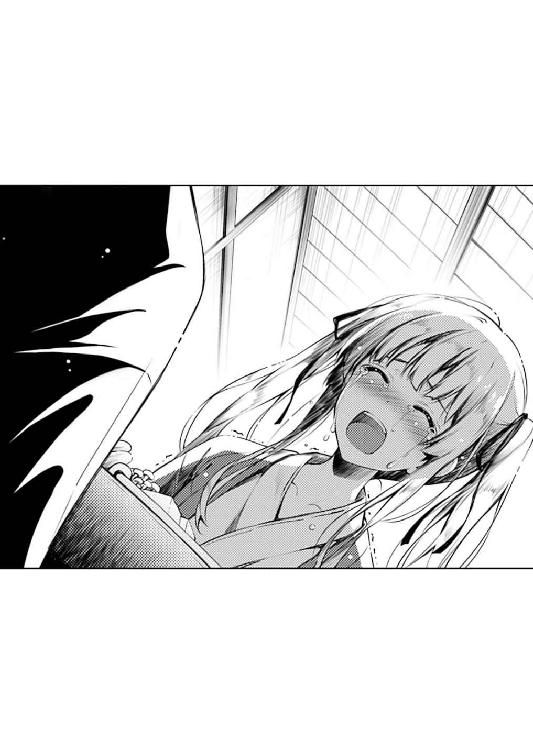
「ほら、英梨々......」
「ぐすっ......」
恵が、ハンカチで英梨々の目元を拭う。
「ごめんね、ごめんね、英梨々」
英梨々の激情にぶつかられても、まるでそれを包み込むかのように、静かに、優しく。
「でもね、これだけは、譲れない」
本当は、まるで逆のことをやっているにもかかわらず......
「だって、親友だから、大好きだから」
「恵ぃ......っ」
「だから、妥協で仲直りなんかできない。何も解決してないのに笑い合うことなんかできない」
「ふぇぇぇぇっ......」
その、恵の言葉とともに、英梨々の瞳から、また涙が溢れ出す。
「ね、英梨々......」
その、どこまでもひたむきな英梨々の、強くて脆くて純粋で強情な気持ちに突き動かされたのか、それとも別の理由からなのか。
ふたたびハンカチを英梨々の目に押し当てつつ、恵は、もう一度、一つだけ前に進んでみる。
「やっぱり、今からお風呂、つきあってくれないかな？」
※ ※ ※
「............」
「............」
しばらく後、二人が露天風呂の扉をくぐった時には、幸運にも雨は止み、分厚い雲がわずかに薄くなった部分から、月がぼんやりと輪郭を現したところだった。
英梨々は湯船に浸かると、まず真っ先に赤く腫らした目を、ばしゃばしゃと何度もお湯で洗い。
そして恵は、そんな英梨々の隣にそうっと入ると、わずかに見える月を見上げ、ゆっくりと息をつく。
湯船に脚を伸ばし、岩に背中を預け、全身から完全に力を抜き。
そうして、今日一日の、体の寒さや疲れ、心の辛さや疲れを、その温かい湯の中に溶かし込んでいこうとする。
「ね、英梨々......」
「......なぁに？」
「やっぱり、気持ちいいね」
「だから、言ったでしょ」
そうやって、お湯にくるまれていると......
血管が温まって血が流れていくように、ずっと通じなかった気持ちが、もしかしたら再び繫がるのかもしれないという、前向きな気持ちを思い出す。
「ね、英梨々......」
「今度は、なに？」
「英梨々はどうして、倫也くんから離れる決心がついたの？」
「............別に離れてないもん」
そしてその前向きな気持ちは、前に進む力と、新たな軋轢の両方を呼び込む。
「離れたよ。少なくとも、一度は間違いなく傷つけた」
「そっちはちゃんと仲直りできたもん。倫也、許してくれたんだもん」
「あんなの仲直りじゃないよ。英梨々の決心を、倫也くんが一方的に認めただけ」
「っ......」
「今、二人の関係が元通りに見えるのは、倫也くんが、英梨々の信者だからだよ」
けれど恵は、今は敢えて、軋ませたまま前進する。
英梨々と、同じように、攻めていく。
「ね、ねぇ、恵......」
「なぁに？」
「あのさ、念のために聞くけど......今、恵が怒ってるのって、あたしを許せないのって、本当は倫也が原因なの？」
「............まさかぁ」
その否定は、英梨々の感覚では、シロかクロか判断できないくらい、微妙なタイムラグをはらんでいた。
「だ、だいたい恵、あんたいつのまに倫也のこと『倫也くん』って......」
「あ～、今はその話はいいから」
「け、けど、さっき恵、『仲直りに妥協しない』って......っ」
「......順序が、あるんだよ」
「じゅ、順序？」
「そう、順序......わたしたち、解決しなくちゃいけないこと、まだまだたくさん、あるんだよ」
「恵......」
なら、その順番が来た時、どんなことを話すのか、その結果、二人の間に何が起こるのか......？
そんな、不安とも期待とも取れる、ふんわりとした疑問が、ゆっくりと英梨々の中に沈殿した。
「英梨々は......この先、どうなりたいの？」
「どう、って？」
「英梨々の目指すところって、どこなの？ どうしてもサークルを離れなくちゃ、辿り着けないところだったの？」
手のひらにすくったお湯が、指の隙間から零れていく。
恵のその行為に、どのような意味がこもっているのか、英梨々は多分わからないはずだったけれど......
それでも英梨々は、一つ深呼吸をして、言葉を選び、慎重に......
「あたしは、一番になりたい」
そしてやっぱり、一気に攻める。
「それは絵描きなら誰もが目指す場所......って訳じゃないのかもしれない。そこそこ人に認められたり、そこそこ仕事にできたり、そこそこ楽しければ満足する人だってたくさんいるのかもしれない」
「というか、そうやって、趣味でやってる人の方が遥かに多いと思うけど」
「けれどあたしは、幸いなことに、少しだけ上の世界を垣間見ることができた......ううん、見ちゃった」
即売会では、壁サークルまで登り詰め。
商業では、初仕事で人気ＲＰＧのキャラクターデザインという大役を射止め。
今の英梨々は、誰がどう見ても『趣味で楽しくやっている同人イラストレーター』ではなくなっていた。
「そんな自分のもっと上に何があるのか、誰がいるのかも見えてきた。だから、その上を目指そうって思えるようになった」
それを教えてくれた人物に、感謝の念なんかない。
ただ恨みと、憎しみと、そして『いつか必ず倒して、自分が上に行ってやる』という強い意志を抱いているだけ。
「あたし、追い込まれないと戦えない。甘えがあったら前に進めない」
それは、去年の冬コミ前の〝悪夢の一週間〟と、今年初めの〝幸せな二か月間〟に思い知った。
締め切りに責め立てられ、倒れてまで描き上げたのは、神懸かりとまで評された七枚のイベント画。
けれど、続く一枚を『いつまでも待つ』と言われた途端、一度は、その七枚を超えるどころか、並び立つことすらできなくなった。
「そんな弱いあたしには、『blessing software』は楽園過ぎる」
イラストレーターとして、成長、できなくなっていた。
「でも、でも......英梨々が楽園を捨てて目指す〝一番〟って......それって天国じゃなくて、地獄なのかもしれないよ？」
「......かもね」
その時、英梨々の顔に浮かんだ笑みは、少しだけ自虐的で......
「でも、もしそこが地獄だったら、次こそは天国を目指す。別の方角に向かうか、同じ道を、もっともっと先に行ってみる」
そして、挑戦的でもあった。
「そうやって、どんどん上を目指して......そして、一番に辿り着いたら、次はどうするの？ 願いが叶ったら、英梨々はどうなっちゃうの？」
「やぁね恵......そんなの、辿り着く訳ないじゃない」
「え......？」
まるで禅問答のような受け答えに、いつしか恵は、さっきまでのわだかまりも忘れ、心からの真剣な表情を、英梨々に向ける。
「幸いなことにね......絵描きの世界には、絶対的な一番なんてないのよ」
英梨々の方も、さっきまでの泣きそうな顔をどこかに置き忘れ、夢見る子供のような、それでいて自信に満ちた大人のような表情を浮かべる。
「一番評価されても、一番稼いでも、結局、上には上が立ちはだかってたり、違うジャンルが残ってたりする。上にも、横にも、どこにだって、縦横無尽にその先を目指して戦える」
「その先って......どこ？」
「そうね、とりあえず、今のあたしの当面の目標は......世界のたった数人に、あたしを『世界一のイラストレーター』だと認めさせること」
さらに英梨々は、表情だけでなく、その言葉にも、子供の無邪気さと......
「そして......そのたった数人のもとに、もう一度、帰ってくること」
大人の、強い意志を同居させる。
「世界一で、業界一で、ついでに、素敵な仲間と幸せになること......」
「それこそが、紅坂朱音なんかには絶対に辿り着けない、
あいつを超えたところにある、頂よ」
「そんなわけで、あたしの目標はとてつもなく高いの。
今は、止まっていられないの」
「だから、ごめん恵......
あたしは、あなたの求めるあたしでいられない」
「けれど恵......
あたしは、あなたを、そして、あなたたちを絶対諦めない」
「......あたしは、世界一凄くて、
世界一幸せなイラストレーターになってやる」
「......叶うと、いいね、英梨々」
「叶えるわよ、決まってるじゃない」
その、あまりに壮大で、あまりに馬鹿馬鹿しくて、あまりに方向性を見誤った......
そして、あまりに素敵な大ボラを、恵は、お湯の温かさとともに、全身に染みわたらせる。
それは、さっきまでの『クリエイターモードの英梨々』に違いなかったけれど。
けれどそれは、恵にとって、全然『嫌な英梨々』ではなかったから。
※ ※ ※
「............」
「............」
長い長い入浴が終わり、二人が布団に入った時には、既に日付けは変わっていた。
蛍光灯が消された部屋の中は、豆電球の常夜灯だけが灯り、暗い部屋の中を、わずかだけオレンジ色に保っていた。
「ねぇ、恵......」
「ん？」
「もう寝た？」
「......まだ」
その『もう寝た？』という問いかけは、返事があった時点で意味のないものだと二人ともわかっていた。
けれど、問いかけた側も応えた側も、そんな些細なことは、今は気にならないくらい、その会話の中に、なんとなく温かみと繫がりを感じていた。
「お風呂、ちょうどいいときに入ったね」
「うん......」
一度は止んだ雨が、再びしとしとと降る音が、外から部屋の中に忍び込んできている。
そのしとしと音に、ひそひそ声の会話が混ざり、部屋の中は、今の二人にとって、とても落ち着いた空間になっていた。
「ねぇ、恵......」
「今度は、なに？」
「朝、目が覚めたら、何もかも元通りかな？」
「......『何もかも』って、何？」
「............」
英梨々の期待する答えを、恵は完全に把握していた。
けれど今はまだ、その『うん、そうだね、英梨々』という模範解答を口にするには早いということも把握していた。
「全部は、元通りにならないよ。英梨々だって、元に戻したくないこと、あるでしょ？」
「それって、例えば？」
「例えば、商業で頑張っていくって決心、元通りにしたくないよね？ あんなに強い覚悟、なかったことにできないよね？」
「......そっか、そういう、ことか」
それが、恵の屁理屈だということは、英梨々にもさすがにわかっていた。
英梨々が求めている『元通り』が、ほんの一部ということをわかっていて、その一部に対しての答えを保留するための、単なる方便だって、わかっていた。
「それに、どこの時間に戻れば元通りなんだろうってのも、あるよね」
「それは......」
それも、恵の屁理屈。
英梨々が求める『元通りの時』が、冬コミ前で、二人の出逢い後で......もっと言えば、二人が友情を誓い合った後だというのをわかっていて......
「例えばさ......九年前だったら、どうかな？」
「それ......って」
それでも、こんなデタラメな時代設定をするのは......
いや、実はそれは、デタラメに見せかけて、ピンポイントの時代を突いていて。
「後悔、してる？ あの時、倫也くんを〝初めて〟裏切ってしまったこと......」
つまり、ここから始まるのは、順番通り辿り着いた、新しい『解決しなくちゃいけないこと』で......
「ね、ねぇ、恵......さっきから聞きたかったんだけど、その『倫也くん』って......」
「......別に、おかしなことじゃないよね。同じサークルの仲間なんだし」
「け、けど、今までずっと『安芸くん』って......」
「でも英梨々は最初に知り合った時から......えっと、『倫くん』だったっけ？」
「......え？」
「確か、英梨々のお母さんがそう呼ぶから真似するようになったんだよね？」
「な、なんで......？」
「英梨々、最初に倫也くんに会った時、大喧嘩したんだよね。『坂の上の吸血鬼』だなんて酷いこと言われたから」
「ちょっと......待って？」
「けれど、その喧嘩がきっかけですぐ仲良くなって、いつも二人で一緒にいるようになって」
「待ってってば!?」
「その後、絶交しちゃってから、ずっと名前を呼ぶことはなかったけれど、豊ヶ崎に入って、久しぶりに話をすることになって......」
「ねぇ、なんで？ どうしてそんなこと全部知ってんの恵!?」
「あ～、大丈夫大丈夫、これはあくまでも、わたしたちのゲームのシナリオであって、実在する人物、歴史には一切の関係が......」
「あんたたち何したぁぁぁぁぁ～!?」
土曜から日曜へと移りゆく深夜〇時過ぎ......
雨の静かな音を、英梨々の絶叫がかき消した。
※ ※ ※
「............」
「............」
相変わらず、外から雨の音が入り込んでくる午前一時。
さっきまで消えていたはずの蛍光灯は、再び明るく灯り、さっきまで横になっていたはずの二人は、今は布団の上で正座して向き合っている。
「ねぇ、恵......」
「ん、ん～？」
けれど英梨々の視線は恵の方にはなく、ただ、手に持ったタブレットの、何度も何度もスクロールする画面を凝視する。
そして恵の方はというと、ただ、そんな英梨々の反応を見て、『あちゃ～』という表情で室内を適当に眺めつつ時間を潰す。
「......なにこれ？」
「だから、『blessing software』セカンドプロジェクト、『冴えない彼女の育てかた（仮）』のシナリオの一部......」
「そういう問題じゃないでしょこれ全然そういうレベルの問題になってないよね!?」
「......あ～、うん」
その『なにこれ？』という問いかけは、もはやその内容に目を通した時点で意味のないものだと二人ともわかっていた。
けれど、問いかけた側も応えた側も、そんな些細なことは今は気にならないくらい、その会話の中に、なんとなく修羅場が迫りくる足音を感じていた。
「め、恵、恵......っ、あ、あんた、今まで散々あたしを責めといて......実はこんな特大の爆弾を隠し持ってるって、一体どういうことよ!?」
「誠に申し訳ございません～」
「わざとらしくフラットに戻ってるんじゃないわよこのブラック副代表！」
そんなこんなで、さっきまで部屋の中に漂っていた、静かで優しい雰囲気は見事に崩れ、まるでいつもの......いや、かつての、合宿所の様相を呈していた。
英梨々が読んでいるのは、恵がさっき言った通り『blessing software』新作、『冴えない彼女の育てかた（仮）』のシナリオテキスト......要するに、倫也が書いた、ギャルゲーの物語部分。
......の中でも、先週めでたく上がった〝サブ〟ヒロイン、澤村・スペンサー・英梨々（仮名）ルートのそれだった。
「こ、これ、これっ、あ、あたあたあた、あたしっ......」
「だから、実在する人物、歴史には一切の関係が......」
「この前、倫也が昔の思い出話をしてきたのって、まさか、このため......っ」
「あ～、その件に関しましては、サークル副代表として遺憾の意を......」
「そんな、そんあぁ......」
「......ごめん、ショックだったんなら本気で謝る。言いたいことがあったら、わたしが全部聞く」
と、さすがに顔面蒼白となった英梨々に、恵はさっきまでの軽い態度を改め、真剣な表情で頭を下げる。
「だからって、恵に全責任負われても、それはそれでなんか嫌......」
「気にしなくていいよ。わたし別に、嫌々謝ってる訳じゃないし、本気で責任感じて......」
「そのガチさが嫌だって言ってんのよ！ あんたいつの間にそんなズブズブに倫也庇うようになったのよ!?」
けれどまぁ、その真剣さは、それはそれで英梨々の逆鱗に触れることこの上なく......
「でも、『役職：ヒロイン』ってこういうことだよ？ 自分の言葉遣いとか行動とかくまなく観察されて、それを散々ネタにされて、自分の気持ちが正しかろうが間違っていようが、シナリオの中では主人公に恋をさせられて、恥ずかしい台詞も言わされて、時にはエッチ......じゃなくてイチャイチャシーンだって演じさせられて......」
「そうやって、自分も大変だから仕方ないって責任逃れしないでよ！」
「だからわたし、全面的に責任取るって......」
「そうやって、自分のせいでもないのに正妻ヅラしないでよ！」
「どうすれば......」
英梨々の怒りを抑えることができずお手上げ状態の恵と、怒りの持って行き場を見つけられずお手上げ状態の英梨々は、お互い嚙み合わないまま、どんどん雰囲気を悪くしていく。
「あ～もう駄目っ！ こんなの読んでられない！ かといって今の状態で寝られる訳もない！ あああああ～っ！」
「でも、最後まで読まないと、それはそれで後悔すると思うけど......」
「どこがよ！ こんなのリベンジポルノや暴露本とどう違うってのよ！」
「まぁ、そう言われてしまえば返す言葉もないけど」
「返してよ!?」
「それじゃあ、そういうのと違うところを一つだけ......これ、萌えゲーだよ？」
「そ、それがなんだって......」
「要するに、完全無欠のハッピーエンドだよ？」
「......ぇ」
「このシナリオは、ヒロインに復讐したり、中傷したりしてないよ？ 延々と〝主人公〟の想いが詰まってる、読んでるとものすごく恥ずかしくなる、ラブレターだよ？」
「ラ、ラブレター!?」
「それでもこの先を読まないっていうのなら、わたしはもう何も言わない。こんなものを世に出すなっていうなら、責任持って没にしてもいい」
「ラブレター......ラブレター......」
「選ぶのはあなただよ......英梨々」
「............（ごくり）」
けれどその『雰囲気の悪さ』には、さっきまでの悲愴感がまるで感じられず、なかなかに出来レース感を漂わせていた。
※ ※ ※
「っ、ぅ、ぅ、ぅぅぅ......」
「............」
いつの間にか、外からの雨音が再び消えている午前二時。
二人の布団の上での睨み合いは、まだ続いていた。
「ふぇぇぇぇっ、えぐっ......」
部屋の中に零れる音は、今は、嗚咽混じりのため息と、何故だか感動的なインストゥルメンタル。
「はいハンカチ」
「う、うん、ごめん、ごめんね恵......う、ぇ、ふぇぇぇぇ～」
すすり泣きの方は、まぁこんな感じで、シナリオを最後まで読み終えた英梨々の口から。
そしてＢＧＭの方は、恵の手にあるスマホのスピーカーから。
「これ、ついこの前、氷堂さんが上げてきた新作のＢＧＭなんだけど、ちょうどラストシーンに合うんじゃないかなって......」
「くっ、このぉ......氷堂美智留のくせに、泣ける曲作っちゃってぇ......っ」
「まぁ、英梨々を泣かせたのは、もちろん音楽だけじゃないけどね」
「......うるさいわねっ」
と、反抗するように、英梨々は首を左右に振って、恵の持つハンカチに顔をこすりつける。
その英梨々の意地っ張りな行為を受け止めて、恵は優しげに、そして少しだけ得意げに問いかける。
「どう？ 感想は」
「......知らない」
「英梨々のことを貶める酷い暴露ゲーかな？ それともシナリオが泣かせる神ゲーかな？」
「だから、知らないってばっ」
英梨々が泣いたことで、彼女のこのシナリオに対する評価は、その二方向のどちらかに絞られてしまった。
シナリオの内容が、英梨々の過去や心をえぐるまで踏み込めていないのなら、それで泣けるのは、単なる神ゲーに他ならず。
逆に、これを退屈なストーリーだと思ったのなら、それで泣けるのは、英梨々の内面を鮮やかに浮かび上がらせ過ぎてしまっていたのに違いなく。
......ついでに、その両方の条件を満たしているというのなら......それは英梨々にとって、どれほど重くて大切な物語になるのだろうか。
「もし、今でも英梨々がこのシナリオを許せないっていうのなら、わたしは約束通り、責任もって没にするよ」
「そ、そんなの恵が約束したって、代表兼シナリオライターが認めるはずが......」
「ううん、倫也くんにも首を縦に振らせる。絶対に」
「だから、どうしてそんなに自信満々に一心同体をアピールするのよ......」
英梨々の拗ねる仕草の中に、さっきより多めの甘えが混じっている。
それは多分、この物語に後押しされたことによる勇気がもたらしたもの。
そして、それでも引かない親友への、なんというか、シンパシー〝かもしれないもの〟が、もたらしたもの......
「それでさ、実はもう一つ相談なんだけど」
「ここまで辱めておいて、この上何をさせようってのよ......」
「このシナリオ、実はちょっとだけ抜けがあるんだよね。気づいてた？」
「......全然」
「実はさ、このヒロインと、もう一人のヒロインが仲直りするシーンなんだけど......」
「だから、全然気づいてないって言ってるのに......」
新作ゲーム『冴えない彼女の育てかた（仮）』の、澤村英梨々（仮名）ルートには、このゲームのメインヒロイン、叶巡璃が重要な役回りをもって登場する。
二人は、ゲームの序盤で出会い、中盤で様々な紆余曲折を経て親友となり、そして終盤で、英梨々（仮名）の夢を巡って、そして......主人公を巡って、決裂する。
英梨々（仮名）ルートのエンディングでは、それらの仲違いも全て解決し、さらに主人公と結ばれてめでたく幕を閉じることになるけれど。
けれど、そのシナリオの流れの中、彼女たちが和解する場面だけは、シナリオライターの想像力不足により、いまだ未完成のままだった。
「それで実はね......その部分のシナリオだけは、副代表兼サブライターが担当することになったんだよ」
「恵......あんた、それ、まさか......」
このシナリオがフィクションなのかノンフィクションなのか、結局のところ、二人の間でも結論は出なかった。
けれど、ここから先の〝明確なノンフィクション〟は、『blessing software』にとって、そして二人にとって、とても重要な物語で......
「シナリオが書き上がったら見せるから、遠慮なく意見ちょうだいね？ わたしこういうの初めてだから、貴重なアドバイス期待してるよ」
「だからちょっと待ってよ！ あんたたち、あたしの過去をあれだけネタにしといて、その上、この先のこともネタにしようっていうの!?」
「あ～、大丈夫。ここから先、ネタにされるのは英梨々だけじゃなくてわたしもだから。というかわたしが一番ネタにされるから。二人一緒なら問題ないよね？」
「それのどこが問題ないっていうのよ!? 単なる恥の上塗りじゃない！」
「でもほら、よく『二人なら乗り越えられる』って言うじゃない。あ、これいいな。ヒロインの台詞としてシナリオに入れとこう」
「恵ぃぃぃぃ～!?」
「ちょ、英梨々......っ」
今まで正座のまま微動だにせず向かい合っていた二人は......
その英梨々の絶叫をゴングにして、ポジションを大きく変え、激しく絡み合う。
悲鳴と、笑い声と、それ以外にも、様々な感情の入り混じった声が明け方まで響き。
さらにその盛り上がりは、早朝の露天風呂に持ち込まれるまで、ずっと途切れることはなかった。
......まぁ、この辺りの詳細なイベントテキストやイベント絵をご希望の方は、今冬頒布予定の『blessing software』最新作『冴えない彼女の育てかた（仮）』をお求めいただければと存じます。
※ ※ ※
「生卵！ 味付海苔！ アジの干物！ ん～、旅館の朝食といえばやっぱりこれよね！」
「もうちょっと地元産にこだわって、山のもので揃えて欲しかった気もするけどね」
昨日一日降り続いた雨もようやく完全に上がり、今回の旅行中、初めて陽の光が空から差してきた午前八時。
結局、一睡もせずに夜通し語り明かしたはずの二人は、今も元気に、朝食に舌鼓を打っていた。
「ね、ね、恵、今日、チェックアウトしてからどうする？ ロケハン？ それともお買い物？」
旅館の浴衣に身を包み、アジの干物にテンションを上げる金髪ツインテール美少女を、隣の席の家族がガン見しているのはともかくとして、まぁ、昨日の気まずさを考えると、今の二人の光景は、それはそれは平和なものだった。
「そうだね、お土産は買いたいけど、まだスケッチしたい風景があるなら先にロケハンでもいいよ」
「いやあね、スケッチしたい風景があるかを決めるのはそっちでしょ？」
「え？ どうして？ わたし『フィールズクロニクル』のことは何も......」
「何言ってるの。そっちの新作のロケハンに決まってるじゃない！」
「......いや英梨々の方こそ何言ってるのかな？」
そう、平和なものだった......つい、今しがたまでは。
「だってほら、せっかく幼なじみヒロイン......じゃなくて新キャラシナリオも上がったことなんだし、こうなったらおまけのアフターシナリオの構想を練らなくちゃ！」
「えっと、まだ他のヒロインの本編シナリオも上がってきてないんだけど......」
「そうだ、せっかくだから主人公と二人きりの温泉旅行イベントにしよう？ 旅先でのハプニング、喧嘩、仲直り、露天風呂での混浴、それから、それから夜は......っ」
「......そこまで踏み込んじゃうと一般レートじゃなくなるっていうか、わたしたちでは出せなくなるっていうか」
「大丈夫！ そうなったらあたしのパパとママに売り子頼むから！」
「それもう『blessing software』じゃないよね『egoistic-lily』だよね」
「そうだ、こうしちゃいられない。今日中におまけシナリオのエッ......イチャイチャシーンのイベントラフだけでも上げておかないと！」
「あ～、それは大丈夫だから、出海ちゃんが頑張るから......」
「波島出海にあたし......じゃなくて新キャラの絵を描かせるなんてとんでもない！ 今までの腹いせに、どんな謎パースやらトレスやらを仕掛けてくるかわかったもんじゃないし！」
「いや、だからね、英梨々......」
「あ～、でも楽しみだなぁ、早く発売されないかなぁ......」
「......え～と、それについては鋭意努力させていただきます」
旅館の浴衣に身を包み、アジの干物にテンションを上げ、卵かけご飯をかき込む金髪ツインテール美少女は......
昨日までの重苦しい空気を、たった数分で払拭するかのごとく、自分が制作に参加しない（代わりにヒロインとして参戦している）ゲームの構想を、とてもとてもとても熱く語り始めた。
※ ※ ※
「温泉饅頭は？」
「買った。人数分。パパとママと、一応、霞ヶ丘詩羽で三箱......」
「両親に一つずつって、多くない？」
「大丈夫、その分紅坂朱音には何も買ってない」
「あ～......」
旅館をチェックアウトして、ロケハン改め観光で湖周辺を散策し、駅前のお土産屋を冷やかし、隣の蕎麦屋でお昼ご飯を済ませ。
そして、乗った新幹線が動き出したのは、午後一時を過ぎた頃だった。
行きと同じく、二人掛けの席に並んで座り、恵と英梨々は、まずは買ってきたお土産の品定めから始めた。
「楽しかったね～、恵」
「今、英梨々にそう言ってもらえることができて、よかったなって思ってるところ」
「う、うん......」
恵の言う通り、昨日の、あの夕食の頃の雰囲気が今もずっと続いていたならどうなっていたかと思うと、英梨々は、今のこの状況を神に感謝するしかない訳で。
「ごめんね英梨々、特に昨日」
「ごめんね恵、特に一昨日まで」
だからとりあえず、これからは神を怒らせることは金輪際するまいと、英梨々は内心、固く誓ったりした。
「さてと、帰ったら早速仕事だ～。今回のスケッチを整理して、マルズへのプレゼン資料としてまとめて......」
「わたしも、シナリオの構想まとめないと」
「......言っておくけど、あの音声、誰にも公開しないでよ？ 恵の初シナリオの助けになるならって、仕方なく録るのＯＫしたんだからね？」
「大丈夫、絶対に誰にも聞かせないよ」
と、恵は、約束の印として、自らのスマホを掲げる。
中には、英梨々と恵との、秘密の数時間......深夜の仲直りの会話が、音声ファイルとして眠っている。
それは、『英梨々（仮名）と巡璃の仲直りイベント』の重要なプロットとして、二人で作り上げた物語で......
「だいたい聞かせたところで、出海ちゃんも氷堂さんもイラっとするだけだろうし」
「別に、そんな過激なこと言った覚えはないけどね～」
「それに、倫也くんに聞かせるのは、色々差し障りがあるし、ね」
「......まぁ、そっちは」
で、それが誰にとっての差し障りなのかについては、恵も英梨々も、それ以上の言及は避けた。
......ついでに、どっちの発言の方が、より差し障りがあるのかについても。
※ ※ ※
「............」
「............」
そして、それから一時間後。
「......起きてる？ 恵」
「な、なんとか～」
二人は思い出した......本来なら、昨夜しておくべきだった睡眠を。
徹夜明けの頭と体に、容赦なく襲い来る眠気を。
「も、もうちょっと、お喋りしてたかったのになぁ」
「わたしも......」
深夜、旅館で夜通し語り合い、午前中、観光やショッピングをしながらのべつまくなしに語り合った二人は......
なのにまだ、昨日あまり話せなかった分を取り戻せていないことに、不満を募らせているようだった。
「東京に戻った後も、池袋辺りでさ、晩ご飯一緒に食べようと思ってたのにな～」
「それは......向こうに着いたときの二人の状態を見て決めない？」
「了解......それじゃ、ちょっとあたし......」
「そうだね......とりあえず、東京まではおやすみなさいってことで～」
それでも結局、襲い来る眠気にはやっぱり勝てず。
二人は、ほぼ同時に目を閉じると、やっぱり、ほぼ同時に寝息を立て始める。
まぁでも、それほどの疲れと眠気のおかげで、手を繫いで眠るという、少しだけ恥ずかしいことも気にせずできたのは、お互いにとって幸いだったのかもしれなかった。
※ ※ ※
「............」
「............」
さらに、それから一時間。
とはいっても、その一時間については、二人の関係にそれほど進展はなく。
「............」
「............」
新幹線が東へと、目的地へと順調に進むにつれ、空が昨日と同じように徐々に曇っていく中、二人は肩を寄せ合うように、ぐっすりと眠っていて......
「......ねぇ、英梨々」
「............」
「英梨々......？」
「............」
いや、そのうちの一人が、ゆっくりと目を開き、眠そうな仕草とともに周囲を見回し。
そして、自分の肩で、こちらは未だにぐっすりと眠っている金髪の親友を視界に収めた。
「ね、英梨々......」
肩にかかる英梨々の重みを受け止め、さらにその頭に自分の頭をのせ、恵は相手の耳元に囁きかける。
「今から言うこと、聞かないでね？」
これが、本当に、最後の、恨みごと。
本当なら、昨夜、布団の中で、まどろみの中で、話していたはずの、言葉。
「英梨々や霞ヶ丘先輩がいなくなったこと......
本当に、本当に、辛くて、痛くて、悔しかったよ」
「戦力としても、仲間としても、あんなに大きな存在だった二人が、
......サークルのこと、倫也くんのこと、あれだけ思ってた二人がいなくなるなんて、
とても、信じられなかったから」
「倫也くんとわたしは、両手どころか、両足も......
ううん、脳も心臓も、もがれたような気持ちだった。
それだけ、あなたたちは、『blessing software』の、ほとんど全てだった」
「わたしたち、もう、去年までみたいに、凄いゲームは作れないかもしれない。
柏木エリと、霞詩子がいなくなった『blessing software』は、
ただの、どこにでもある、趣味のゲームサークルになっちゃうかもしれない」
「......こほんっ」
「それでも、それでもね......
わたしたちは、これからも、楽しく、苦しく、辛く、嬉しく、ゲームを作っていくよ」
「二人みたいに、大きく羽ばたけないかもしれないけれど。
そもそもレベルが全然違うのかもしれないけれど」
「大したことないサークル代表と一緒に......
何の役にも立たないサークル副代表は、頑張るよ」
「ううん、わたしたち、だけじゃない」
「氷堂さんの歌や曲は、どんどん、ゲームに寄り添ってきてる。
多分、ここはあなたたちのゲームにだって負けないんじゃないかな？」
「それに、あの出海ちゃんが、新しい仲間になってくれた。
あのコ、ものすごく英梨々を意識して、ずっとあなたの背中を追っかけてる。
だから英梨々も、いつか追い抜かれないように、気をつけてね？」
「......まぁ、ウチのサークルメンバーは、だいたいそんな感じ」
「そんな、去年より未熟かもしれないわたしたちだけど、
楽しさでは、嬉しさでは絶対に負けないよ？」
「英梨々が、世界一幸せなイラストレーターになるのなら、
わたしは、世界一幸せな、メインヒロインになってみせる」
「......まぁ、ゲームの中で、だけどね？」
「そしていつか......いつか、その時が来たら、
また、一緒に創作、しようね？」
「例えばさ、二人が、どうしても自分たちの好き勝手に創りたくなったら。
お仕事じゃ、やりたくてもできないことをやりたくなったら。
『blessing software』は、いつでも、あなたたちを歓迎するよ」
「それとも例えば、倫也くんが認められて、大きな仕事を任されたら......
そんな、夢みたいな日が、もしやってきたら......
二人とも、よかったら、〝わたしたち〟を助けてくれると、嬉しいな」
「......最後まで、聞かないでいてくれて、ありがとう」
「これからも、よろしくね、英梨々。
......それじゃ、おやすみなさい」
その最後の言葉は、もう相当に眠たげだったけれど。
それでも頑張って、恵は最後まで続けると、まるで気を失ったようにすうっと目を閉じ、あっという間に寝息を立て始める。
英梨々に寄り添い、英梨々に寄り添われ、列車の揺れに、身を任せていく。
「............」
「............」
そして、それから数分後......
恵が、もう完全に目を覚まさないくらい、深い眠りについたと確信できるほどの時が流れたとき......
「なんで、ずっと倫也と一緒にいること前提なのよ......」
そんな、最後の最後の恨みごとが、どこかからぽつりと漏れた。
エピローグ ─少女たちは有明を目指す─
「恵さん、早く早く。信号変わっちゃいますよ？」
「待ってよ出海ちゃん......少し落ち着いて。大丈夫、まだ全然間に合うよ」
六月の二週目の土曜日。
先週の雨とは打って変わって雲一つない空に恵まれた東京は、どうやら気象庁の綿密な調査によっても、未だに梅雨入りの気配を感じさせてはいないようだった。
そんな、ちょっと動けば汗ばむくらいの初夏の、夕方五時過ぎ。
まだまだ高い陽に目を細めながら、秋葉原の駅に降り立った二人の女の子......加藤恵と波島出海は、ロータリーを抜けて一目散に目的地を目指していた。
「で、でも、でもっ、わたし、ライブとか初めてで......徹夜禁止とか始発組とか整理券配布とか入場制限とか二時間待ちとか、そういうルール全然知らなくて」
「......そういうの絶対ないから安心してよ。だいたいわたしたち身内なんだから、どれだけ並んでても横から入れてくれるよ」
「そ、それはそれで......そうやって特別扱いでさぁ～っと入っていく人たちって、一般組からすると超イラっときますよね～」
「......急ごうか、出海ちゃん」
二人の会話からもわかる通り、今日、この日この時間に二人が秋葉原に来たのは、ライブのため......
「でも凄いですねぇ、美智留さん、とうとうワンマンライブですよ！」
そう、今日こそが、アニソン系ガールズバンド『icy tail』の、そしてボーカリスト氷堂美智留の、記念すべき初ワンマンライブの当日だったから。
「うん、そうだね、楽しみだね」
「楽しみどころか緊張しまくりですよぅ」
「出海ちゃんが緊張してもしょうがなくない？ やるのはバンドの皆なんだし」
「自分じゃないから緊張するんですよぅ......大丈夫かなぁ美智留さん、大ざっぱにミスって『てへっ』とか誤魔化したりしないかなぁ」
「大丈夫だよ、氷堂さん、ああ見えて歌ってるときは〝完全に別人〟だから」
「......普段どんだけ美智留さんの評価低いんですか恵さん」
「低い訳ないよ。〝私生活はともかく〟、音楽はピカイチだよ......」
「......さっきからその微妙に含みのあるところがものすごく不穏なんですけど」
「そんなことないよ～、出海ちゃんの考えすぎだよ～」
「ま、まぁ、それもさることながら、そのライブをマネジメントしてるのがお兄ちゃんってのも不安要素なんですよねぇ。絶対に盛り上げてくれるだろうとは思うんだけど、逆にお客さんを煽り過ぎて変な風に揉めたりしないだろうかなぁって......」
「............さ、急ごうか出海ちゃん」
「あ、え？ 恵さん......？」
と、まぁ、こうして徹底的にスルーされるマネージャーに比べれば、毒づかれるボーカリストの方にはまだ十分愛があるという嫌な真実はともかくとして......
半年くらい前の恵の記憶を頼りに、二人は、いくつかの角を曲がり、小さな路地へと入り......
「え......？」
「ほらぁ......言ったじゃないですかぁ」
そして、そこに並んでいた行列に、感嘆の声を上げた。
※ ※ ※
人通りが激しい秋葉原の街から、ひとたびその建物の中に入ると、結局そこも、たくさんの人の喧騒が響いていた。
とはいえ、そんなものはまだ大人しいうちで、きっと数分後には、今とは比べ物にならない、耳をつんざくほどの大音量に包まれることになる。
それは街の音ではないけれど、けれど人々のパワーとエネルギーが奏でる音と言ってしまえば同じことなのかもしれない。
と、まぁ、そんな過去の表現を微妙になぞった情景描写でお茶を濁すことができるこの場所は、秋葉原のライブハウス『CLUB G-MINE』。
「ちょ、ちょっとちょっと！ めちゃくちゃ入ってるよ立ち見だよ！」
その控室に、いつものようにちょこまかと、そしていつも以上に興奮気味に飛び込んできたのは、『icy tail』ギター担当、〝トキ〟こと姫川時乃。
「いやいや、もともとここオルスタだからさ～」
で、元から控室にいて、そんなハイテンションな時乃を少々呆れ顔で迎えたのは、『icy tail』ベース担当、〝エチカ〟こと水原叡智佳。
「......それに、観客の数は関係ない。自分たちのベストを尽くすだけ」
さらに叡智佳の隣で、いつも通り目を閉じ静かに佇んでいたのは、『icy tail』リーダーにしてドラム担当、〝ランコ〟こと森丘藍子。
「さて、というわけで、そろそろ本番まで三〇分を切った訳だけど......」
そして、控室の奥の壁に背中を預け、彼女たちを遠目で見守っていたのは、『icy tail』現マネージャー、〝ハッシー〟こと波島伊織。
「客の入りは、姫川さんの言う通り......実は君たちには敢えて黙ってたけど、チケットも即日完売だったんだよ」
「う、うわうわ、それマジ？ じゃ、じゃあもしかして、ヤ〇オクとかでプレミア価格で転売されまくっちゃったりなんかしたりして!?」
「で、いきなりの身分証明書チェックにより転売チケ組入場禁止、阿鼻叫喚の中、完売したのにガラガラの客席で寂しいライブ？」
「......さすがにそこまでゲスい展開はないと思う」
「で、でもでもっ、こんなことになるなら、もっと大きなハコでもよかったね！」
「そ～そ～、もう少しちゃんと時間取って、しっかり準備してさ～」
「......ん、それはあるかも」
......ついこの前まで、初のワンマンライブ開催にビビりまくり、『チケット買い取りノルマ、一人二〇枚ね～』とか『ちょっと待ってそんなに友達いない！』とか『駅前でライブ衣装着てチラシ配りする？』とかひそひそ相談していた面々は、この思わぬ事態に、今度はまるで逆方向に浮き足立っていた。
けれど......
「ううん、この場所でないと意味がない......」
「え？」
「あ......」
「......ミッチー」
今日に限っては、いつも無口な藍子よりも無口を貫いていた長身の少女が、決意に満ちた表情で、ようやく口を開く。
それは、『icy tail』ボーカル＆ギター担当、〝ミッチー〟こと氷堂美智留。
「あたしたちの初ワンマンは、あたしたちの初ライブと同じ場所でやる......最初から決めてたんだ」
椅子から立ち上がり、やっぱりいつもの、怠惰で陽気な性格とは対照的なしっかりした態度で、胸に手を当て、他の三人を見つめる。
「......じゃ、後は氷堂さん、よろしく」
その、決意に満ちた横顔を見ると、伊織はさっさと控室を出ていく。
彼はいつのライブでも、どこのライブハウスでも、旧マネージャーのように、彼女たちを煽ったり、勇気づけたりしない。
「理由はいろいろあるよ。一つ目は恩返し......何しろここは、一度も外でライブやったことのない学園祭バンドのあたしたちを受け入れてくれた場所だから」
「そういえば、あの時わたしたち、思いっきり前座だったよね」
「そうそう、それどころかピンチヒッターで、お客だって、誰もあたしたちのことなんか知らなくてさ～」
「......完全アウェーだった」
だって、彼女たちを、もう煽る意味はない。勇気づける必要はない。
半年前と違い、『icy tail』は、自分たちで煽りあい、勇気づけ、立ち上がる。
「で、二つ目はゲンかつぎ......何しろここは、そんな素人同然のあたしたちのプレイに、思いっきりノってくれて、あたしたちをノせてくれた場所だから」
「今思い返しても、最初っから良く摑んだよね」
「ま、あの一曲目が良かったよね～」
「......確かに、縁起いいかも」
それは、いつの間にか彼女たちの中に芽吹いていた文化で。
そしてその種は、旧マネージャーが、しっかり撒いていてくれたから。
「三つめはケジメ......今日、この日をもって、あたしたち『icy tail』は、本気で上を目指していくって、伝えに来た......」
「ＣＤ作り、ほんっと大変だったよね」
「そ～そ～、何しろ曲作る奴が追試で全然時間取れないし～」
「......曲が揃ったのが収録二日前って、どういう」
「いい話してんだから茶々入れるなお前ら～！」
だから新マネージャーは、マネジメントとプロデュースに専念するだけでよかった。
けれど、だからこそ彼は、その『マネジメントとプロデュース』に、全てのリソースを注ぎ込んだ。
『icy tail』の初ワンマンの情報は、全てのこの界隈の人間にあまねく伝わっていた。
物販で用意したＣＤには、初回限定版特典の『波島出海描き下ろしイラストカード』と、通常版特典の『icy tailコスプレブロマイド』の両特典を、それぞれ別々に用意するというゲスっぷりを発揮した。
『icy tail』の初ワンマンライブに多くの人が集まったのは、確かに彼女たちの実力によるものだった。
けれど、それだけでないことは、今は彼女たちだって知っていた。
......だからきっと、『icy tail』がこの先どれだけメジャーになっても、新マネージャーがいる限り、〝コスプレアニソンガールズバンド〟の称号は、彼女たちから外れることはないだろう。
「ま、そんな訳で......今日も、全力で行こう！ みんなに思いっきり楽しんでもらって、あたしたちも思いっきり楽しもう！」
美智留が、皆の前に手を出す。
時乃が、叡智佳が、藍子が、すぐにその上に自分たちの手を重ねる。
だから美智留は、安心して、いつもの雄叫びを上げる。
「それじゃみんな、準備はＯＫ？ ......『icy tail』、いっくよ～！」
「「「お～！」」」
※ ※ ※
「あ、来た来た、倫也くん」
「倫也先輩！ お疲れさまですっ！」
「なんだこれ？ 凄いな......」
『共通ルートのシナリオを、今のうちにできるだけ書き溜めておく』という意識の高さ（本来の褒め言葉通りの）のおかげというかせいというか、安芸倫也が従姉妹の記念すべきステージに合流できたのは、ギリギリ開演五分前だった。
その頃には、さっきまで外に行列を作っていた客たちも、さすがに全員入場が済んではいたけれど、逆にそのせいで、フロアはなかなか大変なことになっていた。
オールスタンディングで一〇○人以上は入る広さがあるにもかかわらず、そのフロアには座れるほどの隙もなく、物販を求める人たちが移動するたびに、ただ開演を大人しく待つ人々まで巻き込まれる惨事となっていた。
「二〇〇人......いるかなこれ？」
「倫也くんがマネージャーやってた頃にはなかったことだよね、これだけの人は」
「ああ、やっぱ伊織は天才ゴロだな！ 『絶対に満員にしてみせる』とか吹いてたけど、それを事もなげにやっちまうってのは、さすが......」
「........................」
「......め、恵？」
「恵さん？」
倫也に対してのちょっとした皮肉の結果、その当人が突っ込むどころか伊織を絶賛してしまうという想定外の事態に、恵は、思ったほどの効果が得られなかったと冷静に判断して、つい先ほどの発言を沈黙によって取り消した。
そう、それはあくまで『冷静な判断』であって、決して恵がその流れを思いっきり気に喰わなかったから黙殺したとかそういうことではないので、読者の諸兄においては誤解なきよう......
「ところでさ、恵」
「ん？ なに倫也くん」
で、その空気を察したか、それとも単に本題に入っただけか......
倫也は話題を変え、もう二か月以上も引きずっていた、〝例の件〟について触れてきた。
「お前、先週、英梨々と会ったって？」
「......あ～、うん」
「で、どうだった？ 今度こそちゃんと話せたか？ 喧嘩しなかったか？ 仲直りできたか？」
「なんかそれ、保護者っぽくていつも以上にウザいよ倫也くん」
「......何度も会う機会をセッティングして、ドタキャンされても諦めずに色々頑張った俺がウザかったですかそうですかそれはごめんなさい」
......ちなみに、この件に関してだけは、傍で聞いていると珍しく倫也に正義を感じてしまうのは、多分気のせいではないだろう。
まぁ、どうあろうと最終的に恵が体よくスルーするという流れは変わらないので別にどうということはないのだけれど。
「で、英梨々の方からは、何か聞いた？」
「いや、とりあえず『サークルの件は恵から聞いてくれ』の一点張りで、ただ......」
「そっか、まぁ、とりあえず、こんな人の多いところで話す内容じゃないし、後でね」
「あ、ああ......」
と、渋々と退いた倫也ではあったけれど。
それでも今回のことに関しては、さすがの鈍感キモオタ難聴優柔不断最低主人公（個人の感想です）の彼ですら、いくつかのいい兆候を感じることができていた。
一つは、『恵から聞け』と突っぱねる英梨々が、ただ、その言葉以上に態度や表情や口調で語っていたから。
いつも他人に見せている対外的な笑顔の中にすら、結構、心からのものも含まれているように見えて、仕事だけじゃない充実感が、外からでも感じられたから。
そしてもう一つは、『後でね』とはぐらかす恵が、その言葉以上に、空気感で語っているから。
まるで、倫也の喜ぶ顔を見る自信があるかのような、ほんのちょっとだけ悪戯っぽい表情を、しているから。
そんな、最近少しずつ見せるようになった、フラットの中のウェットが、今の会話だけで、なんとなく感じられるから。
鈍感キモオタ難聴優柔不断最低主人公のくせに。
「さ、始まるよ？」
「ああ......」
「と、とうとうっ......うわ、うわうわ、緊張してきましたっ」
と、薄暗いステージに、三人の女子が出てきて、それぞれのポジションにつき......
ドラムの女の子......ランコがスティックを叩き、トキのギターとエチカのベースがそのリズムに追随すると、周囲のざわめきが、一気に歓声へと変わる。
※ ※ ※
「みんなぁぁぁ～！ 今夜はずぅ～っと一緒だよぉぉぉ～！」
そして最後に、満を持して、ミッチーがステージに飛び込み雄叫びを上げると、その歓声は、さらに爆発したかのように弾けた。
「あ、これわたし知ってます！ えっと、えっと......」
「これ、『cherish you』じゃない？」
「いきなりオリジナルからかよ......」
とうとう始まった『icy tail』ワンマンライブのオープニングナンバーは、三人にとって、というか、『blessing software』にとって、とても馴染みのある曲だった。
けれどそれは、本来は、普通のアニメオタク系には馴染みのないはずの曲で......
『cherish you』......
半年ほど前、やっぱりこのライブハウスで産声を上げた、『icy tail』初のオリジナルナンバー。
確かにその時も十分に盛り上がったが、けれどそれは、場が十分に温まった後に、しかもオリジナルだと断って歌い始めたから皆がついてこれた訳で。
いきなり曲名もオリジナルであることも告げず、しかもそのライブの成否を一番左右するオープニングに持ってくるのは、アニソンライブとしては、かなり危険な采配......
......だったはずなのに。
美智留の、完璧な入りからの伸びゆく声とともに、一斉にサイリウムの花が咲き、歓声はさらに増していく。
誰もがこのマイナーなはずの曲を知っていて、あるいは知らずとも乗ってきて、完全にライブハウス全体が一つになったような空気が形成される。
ここにいた二〇〇人近くが、全員ノリのいい連中だったのか。
それとも、『icy tail』のステージの常連だったのか。
ただ言えるのは、それは、どちらにしても、そんな濃いファンを大量に呼び込むことのできた彼女たちの勝利であるということで......
だから最後には、倫也は当然ながら、ライブ初体験の出海や、そもそもノリの悪い恵でさえも、その盛り上がりにあてられ、両手が赤くなるほど強く手を叩いていた。
※ ※ ※
「なんだか思い出すわね」
「何を？」
「半年前も、ここで、こうして、同じようにステージを見上げて、同じ歌を聴いていたことを、よ」
「......ま、ね」
ライブが始まってほんの数分後。
オープニングナンバーがいよいよ終わろうかという時......
会場の一番後ろ、盛り上がる客たちをよそに、ちょっとだけ乗り遅れた様子の、二つの壁の花が咲いていた。
「あ、見つけた......倫也と恵......と、波島出海ぃ!?」
「そりゃ、いるでしょう。同じサークルの仲間なんだから」
「どうする？ 向こうに合流する？」
「私はいいわ。行ったところで微妙な空気になるだけだし......特に加藤さんとは」
「なんなら仲裁してあげよっか？ あたしが間に入れば、恵だって冷静に話してくれると思うし」
「......あなた二か月も彼女と絶交していて先週和解したばかりなのに、いきなり随分と調子に乗ってるわね」
それはきっと、誰かがその存在に気づいたら、ステージに負けず劣らず注目を集めてしまうかもしれない、金髪ツインテールと、黒髪ロングの二人の美女。
澤村・スペンサー・英梨々と、霞ヶ丘詩羽。
「それに、今日に限っては、ここに来たのは倫理君目当てじゃないし」
「じゃあ、何が目当てだったのよ？」
「......ライブハウスにライブの時間に来ておいて、他の何が目的だっていうのよ？」
※ ※ ※
「こんばんは～、『icy tail』でぇぇぇぇ～す！」
オープニングナンバーが終わり、その流れのまま美智留......ミッチーが拳を突き上げると、ほぼ全ての観客がそのノリに追随し、ライブハウス全体が大きく震える。
「今日は、あたしたちの初ワンマンライブに来てくれて、本当に、本当に、本当に、ありがとねぇぇぇぇ～！」
そんな、一曲目で成功が約束されたかに思える会場の雰囲気に負けないくらい、最初からマックスのテンションで、ミッチーは飛ばしまくる。
「や～、なんかすっごいね～！ 人いっぱいだよ～！ ねぇみんな、今日、あたしたちしか出ないんだよ？ 本当にいいの？」
そして、そのハイテンションから突然のオチに、場内は和やかな笑い声に包まれ、盛り上がりだけでなく居心地までもうまく形成されていく。
それに呼応して、場内の至るところから『いいのいいの～』とか『icy tail最高～！』とか、いい感じに双方向のコミュニケーションも始まる。
「でもやっぱ、ここのライブハウスいいよね～。みんなと距離近くて、一番奥の人の顔までちゃんと見れるし......うん、ちゃんと見えてるよ～！」
と、ミッチーが問いかけると、『彼女が見ているのは自分だ』と反応した後ろの方のファンたちが、また一斉に歓声を上げる。
けれど、その美智留の視線と問いかけは、その瞬間だけは、明確に、一番奥の『たった二人』に向けられていたりした。
※ ※ ※
「え、これ、氷堂美智留が送ってきたの!?」
「まぁ、ね」
何気なく、詩羽に誘われるままついてきた英梨々は、彼女が差し出したチケットの出所を、今まで全然気にしていなかった。
それでも確かに、この場所から見ると、今の美智留の視線や言葉は、詩羽の軽く振った手に反応しているようにしか思えなかった。
「ど、どうしてあのコが、あたしたちに？」
「さぁ、ね」
一月前の、お茶の水での遭遇のことを、ただめんどくさいという理由で秘密にしていた詩羽は、怪訝そうな英梨々に、謎めいた微笑を返すだけだった。
「良く来てくれたね......
今日は、最後まで聴いてってね？」
そして美智留の方も、その、わかってるように見える詩羽と、ちんぷんかんぷんな英梨々の両方に向けて、今度こそ、とてもわかりやすいメッセージを伝える。
「これは、あたしからの......宣戦布告だよ！」
「っ......」
「どうやら、そういうことらしいわね......」
その挑発とともに、二曲目が始まり、またステージに大きな歓声が響き渡る。
今度は、前クールナンバーワンと名高いオリジナルアニメの絶叫系主題歌という、これまたツボを突いた選曲に、場内のオタクたちはさらにギアを上げ、激しくサイリウムを振り始める。
そんな、会場が一体となって『icy tail』を盛り上げ、そして『icy tail』の面々が客を煽るという終わらないサイクルの中......
「それと、今ので気づかれちゃったみたいね......彼女に」
「え？ あ......」
一人だけ、そのサイクルから抜け出し、美智留と詩羽のアイコンタクトに目ざとく気づいた人間が、この会場の中に、もう一人いたようだった。
「恵......」
倫也と出海が、他の観客と完全に一致してサイリウムを振り回す中......
倫也の隣で、周りの喧騒に負けず、そこだけ時が止まったかのようにこちらをじっと見つめている、ショートボブのメインヒロイン。
やがて、こちらと目が合うと、何かを振り切るかのように力強い微笑みを浮かべ、周囲の雰囲気にまったく迎合せず、二人に向かってぺこりと頭を下げる。
その、完璧にメインヒロイン然とした立ち居振る舞いは、まるで......
「......なんだかとっても正妻ヅラしててむかつくわね加藤さん」
「そのことに関してだけは同意せざるを得ないわ......ごめん恵」
※ ※ ※
それから、二時間超の長丁場......
にもかかわらず、『icy tail』のステージは、出だしをさらに凌駕する勢いで、天井知らずに盛り上がっていった。
懐かしの定番アニソン、最近のヒットタイトル、そして、知る人ぞ知る名曲（但しアニメは売れなかった）等......
どれもこれも、知っていても知らなくても、今日の『わかっている』観客たちは、それこそ体力の限界まで、きっちりついてきた。
そのいい流れは、皆の喉が嗄れた頃に、バラード系を差し挟んだりするセットリストの妙も多分に貢献していたのかもしれない。
それは、伊織も含めた『icy tail』の全員で、全力で考えた、今日のこの良き日のための最高のレシピで。
そのいい流れに乗って、たまに、その間に差し挟まれるオリジナルソングは、やっぱり皆に全身全霊で受け入れられていった。
それこそ、ライブ終了後に再開される物販の、残りのＣＤ枚数を〝これ全然足りないんじゃない？〟と心配するようになるほどには......
そして、いよいよ......
※ ※ ※
「それじゃ、次が、最後の曲ね......」
続いて響く、観客たちの『えええええ～！』は、確かにライブでは、必ず見られる光景ではあるけれど......
それでも、今日の彼らの嘆き節は、そのガラガラの声もあいまって、心の底からの絶叫だと信じることができた。
「今日はみんな、本当に、来てくれてありがとう......」
間違いなくアンコールはあるとしても、『icy tail』初ワンマンライブの締めは、ここでのミッチーのＭＣになることは疑いなく......
だから皆、ここだけは茶化したり歓声やコールを入れたりすることなく、ステージ上の彼女たちを静かに、真剣に見つめる。
「あたしたちが、初めてステージに上がってから、だいたい半年......
初めて、こうして『icy tail』だけでライブが開催できることになった」
ヒラヒラの、メイド服姿のミッチーが、真剣な笑顔で、観客へと語りかける。
その、衣装と態度とのギャップは、多分この場所以外では、浮いてしまうだろう。
「それは、人から見れば、あっという間に見えるかもしれないし、
そんなあたしたちを、運がいいって羨んでくれてるかもしれない」
けれどミッチーは、そして『icy tail』は、もうそのことを気にしない。
避ける方向にも媚びる方向にも行かず、このままの自分たちを貫く。
「それでもあたしたちは、今日の日を、半年間指を咥えて待ってた訳じゃない。
呼ばれたらどこでも歌って、呼ばれなくてもどこでも歌って、
何度もみんなに聴いてもらって、ずっとみんなと一緒に成長して、
やっと、この日を迎えることができた」
半年前、オタクとコミュニケーションが取れず、思いっきり緊張したうえでの滑り芸でやっと客を摑んでいたミッチーの面影は、今はもうそこにはない。
そこにいるのは、アニソン系の曲を歌うことを、コスプレすることを、全部自分の武器にして個性だと受け止めて、本気でその道に進もうとする、〝クリエイター〟だった。
「もちろん、この半年間、そんな順調なことばかりだけじゃなかった......
今ここにいる『icy tail』のみんなは、こうして今でも一緒だけど、
全部が全部、ずっと一緒のままでいられたって訳じゃなかった」
だから彼女の言葉は、衣装とか状況とかに関係なく、伝えたい相手にストレートに届く。
「それは、皆が同じところに留まることができない以上、仕方のないこと。
だって、あたしたちだって、こうして同じところに留まってない。
目指すところがあるから。譲れないものがあるから」
自分の視線の先にいる、二人と、三人に。
「あたしたちの、デビューのきっかけを作ってくれた人たち、
あたしと一緒に、曲や、詞や、物語を作ってくれた人たち、
あたしたちの、ビジュアルを作ってくれた人たち......」
自分と同じ〝クリエイター〟たちへ。
「ちょっと寂しいけれど、ちょっと、悲しいけれど......
でも、それは正しいこと、なんだよね」
今は違う道を歩む、〝友〟たちへ。
「だって、たとえ違う方向を向いていても、
みんな、それぞれの前へ進んでる」
そして、今も同じ道を一緒に目指す、〝トモ〟たちへ。
「そんな訳で最後の曲は......みんなへ、捧げるよ。
今、こうしてあたしたちの側にいる人たちへ......
そして、あたしたちの側にいない人たちへ、愛を込めて」
出海が、目に涙を浮かべていた。
恵は、とても優しい表情になっていた。
そして倫也は、少し寂しそうで、少し嬉しそうな苦い笑みを零していた。
「これからも、お互い頑張ろう！」
英梨々は、自分でも自分の表情がどうなっているかわからなかった。
そして詩羽は......俯き、その表情を誰にも見せなかった。
「じゃあ、ラストナンバーのタイトル、みんなも一緒に～！
わかってるよねわかってるよね？
今日発売の、あたしたちのデビューアルバムのタイトルだよ～！
それじゃ～、いっくよ～！」
最後に、ミッチーが、マイクを客席へと差し出し......
そして観客は、彼女のその挑発に、やはり全力で応える。
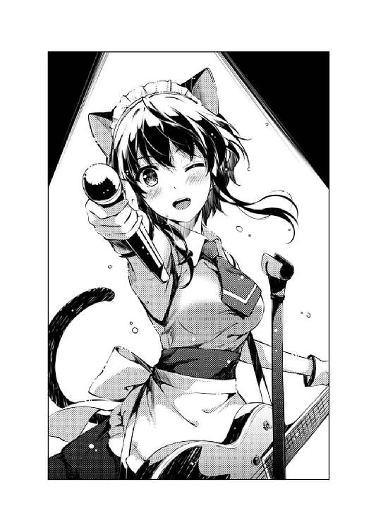
「IcyTailYO！」
※ ※ ※
ライブがはねて、三〇分後......
ライブハウスの外で、まだ余韻に浸る元観客たちが、名残惜しげに今夜の感想を語り合う中......
「嵯峨野文雄に会った!? しかも隣のサークルだった!?」
「あ、正確に言うと、会ったというよりニアミスっていうか......」
「その人って、確か、『純情ヘクトパスカル』の挿絵やってるよね......」
『これからメンバーと打ち上げをするために出待ち中』という、他のファンが聞けば噴飯ものの予定を持つ倫也たち三人もその場に留まり、ここ一週間のうちに起きた、色々な体験談を共有していた。
「しかも本交換したの？ それがこれ？ すっげー！ すげえよ出海ちゃん！」
「あ、いえ、本を交換したのもお兄ちゃんっていうか......」
「あ、ちょっと、まだ見てるんだからページめくらないでよ倫也くん」
その中でも、サークルの外面的な事件としては、やはり出海のイベント参加のエピソードが、なかなかに衝撃度が高かったりして。
「にしても、いいなぁこれ......嵯峨野先生の本ってさ、いっつも部数少ないわショップ委託しないわで、中古ショップだとガラスケースの常連なんだよなぁ......しかも『純情ヘクトパスカル』が始まってから、ますます高騰してるし......」
「......そ～ですか～」
憧れの作家の憧れの本の憧れの挿絵を描いているイラストレーターの本を、倫也は、いつものキモオタ感満載のテンションで絶賛する。
出海としては、自分以外の作家をこういう信者的態度で語られるのは、正直同業者として色々と思うところもあったけれど......
けれど、もし倫也が自分と知り合いでなかったとしたら、彼が自分の本を手にした時、多分同じ態度を取っているだろうと思うと、まぁ、機嫌を損ねることもできなかった。
「それでさ出海ちゃん、嵯峨野さんってどんな人だった？ 噂じゃイケメンでリア充で、あと結構ゲスいって話なんだけど、本当にそんな感じ？」
「......でも、そんな人がこんな可愛い絵を描くなんて、イラストレーターって、性格と能力は別物なんだね。プロデューサーは結構見た目通りなのに」
「まぁ、確かに作風ってのは、本人の見た目とか、世間の評判からは乖離することがあるかもしれないけどさ......」
「あ、いや、だからですね、わたしが実際に話したのは......」
と、出海がそんなことをつらつらと考えていると、倫也と恵の話題は、いつの間にか嵯峨野文雄の人物像への考察というか、まぁ色々とアレな方向へと飛んでいて......
「けど、結局、作風って、なんだかんだいって、内面から滲み出てくるものだとも思うんだよな」
「え......」
けれどそれは、最終的に、出海があの時抱いた疑問と同じところに収束しようとしていたりして。
「だから実は俺、ネットで流れてる嵯峨野文雄の評判にはちょっと懐疑的でさ......本当は、内面に凄い萌えっていうか、可愛いモノに対する憧れを抱いてるんじゃないかってさ」
「それってただ、倫也くんが『純情ヘクトパスカル』のイメージを汚されたくないから、そう思い込みたいだけなんじゃないの？」
「そういう余計な本質に迫ろうとしなくていいから!?」
倫也と恵の、なんだかんだ板についてきた言い合いを、なんとなく眺めつつ......
「ま、とにかくですね......」
出海は、ここ一週間で湧き上がってきた、強い思いを......
「嵯峨野先生がゲスであろうがいい人であろうが、ただ一つ言えることは......」
二人を、完全に黙らせる一言を、口に乗せる。
「わたしは、もう負けるつもりはないってことです......嵯峨野文雄にも、柏木エリにも、そして、紅坂朱音にも、ですよ？」
※ ※ ※
そして、それとほぼ同時刻......
英梨々と詩羽も同じように、ライブハウスを早々に抜け、近くのコーヒーショップで向かい合わせに座りながら、ここ数日の体験談を共有していた。
「これが、次回作のキャラデザ......？」
「〝友人〟が、〝偶然〟隣のサークルだったんですって......波島さんと」
「ふぅん......」
ついでに言えば、やっぱり同じように、先週のイベントで頒布されていた同人誌を読みながら。
「『絶対にあげない』って、『一日だけなら』って何度も念押しされて、ようやく貸してもらったの......波島さんの絵がよっぽど気に入ったのね、〝彼女〟」
「ふぅん......」
詩羽に生返事を返しつつも、英梨々のページをめくる手は止まらない。
それも、単純に前に進むだけではなく、戻っては進み、また最初から読み返し、その作業工程や、描き手の意図を探るように、慎重に、詳細に読み解こうとする。
「どう？ 感想は」
「別に......」
そして、そこまで深く深く没入しながらも、口先の方は、あからさまに素っ気ない。
「そう？ 私には、出色の出来に見えるんだけど......レベル的にも、あの企画との相性的にも」
「そう？」
「あなたも油断してると、寝首をかかれるわよ？」
「波島出海を侮ったことなんか、ただの一度もない」
けれど、その素っ気なさの中に、〝敵〟に対する敬意が感じられないということは全然なく......
「......相変わらず匂い立つようなツンデレね」
「やかましい」
というか、英梨々はどこまで登り詰めても、いくら認められても、多分、これからもずっと、〝あのコ〟を意識しなくなることはない。
それはまぁ、色々な要因もあいまって......
「それで、これからどうする？」
「どうするって、何が？」
「あんた、倫也に会ってかないの？ 多分まだライブハウスのところでたむろしてると思うわよ？」
「別に、今日はいいわ......さっきも言った通り、ライブがお目当てだったんだから」
「本当にいいの？ あんた、同じクラスのあたしと違って会う機会なかなかないでしょ？ 別に無理しなくてもいいわよ？」
「......本当に、調子に乗った時のあなたってムカつくわね」
その英梨々の、皮肉っぽくも、結構本気っぽくもある気遣いの様子に、詩羽は軽く貧乏揺すりで応える。
「じゃ、しょうがない......今日はあんたにつきあってやるか」
「『調子に乗った時のあなたってムカつく』って、言ってなかったかしら？ 澤村さん」
けれど、そんなギスギスした雰囲気も、お互いの作品や才能に対する想いを知った今となっては、見掛け倒しもいいとこで......
だから二人は、まるで十年来の腐れ縁の悪友のように、だらだらと同じ時間を過ごす。
「そういえば......澤村さんが持ってきたお土産、ここで開けましょうか？」
「お店の中で食べ物開けるのはマナー違反でしょ。ちゃんと家に持って帰りなさいよ」
「だって、温泉饅頭というのはいいけれど、どうして二箱もくれるのよ？ トレーディングカードでも封入されていたりする訳？」
「そ、それは......パパとママに二つ買ってったら『私たちは一つで十分だから、もう一つは友達にあげなさい』って......」
「私だって一つで十分よ。なんならもう一つは紅坂さんに......」
「嫌！ 絶対に嫌！ それならあたしが持って帰って一人で全部食べる！」
「相変わらず友達いないわね、あなた」
「あんたに言われたくないわよあんたにっ！」
「あら、私最近、女友達急増中なのよ？ なんならアドレス帳見せましょうか？」
「ちょっ、なっ......い、いい加減なこと言ってんじゃないわよ霞ヶ丘詩羽っ！」
そう、まるで十年来の......やっぱり宿敵のように。
※ ※ ※
「あ、出てきましたよ皆さんっ！」
「お～、お疲れ～」
「みんな、お疲れさま」
そして、ライブがはねて、四〇分後......
「終わったぁぁぁぁぁ～！」
「いやいやもうすっごい疲れた！」
「でも、大成功～」
「......やったね」
着替えも打ち合わせも終わり、やっとライブハウスから出てきた『icy tail』のメンバーは、それはもう、達成感と充実感と満足感に満ちた満面の笑みで、倫也たち三人のもとに駆け寄ってきた。
「やったやった～！ 大成功だったよ～、トモぉぉぉ～」
「あ」
「あ」
「っておい！ 路地だからここ公衆の面前だから！ あ、やめ、そこ駄目ぇぇぇ～!?」
まぁ、駆け寄ってきた勢いが余り過ぎて、倫也に思い切り抱きついて押し倒した美智留という特殊例もあるにはあったけれど......
「さ～打ち上げ打ち上げ～♪ 焼肉焼肉～♪」
「だからその男飯っぽい選択やめようよミッチー......」
「性欲を満たしたら次は食欲とか、わかりやす過ぎるでしょあんた」
「......エチカはもう少しわかりにくい表現を心がけるべき」
で、それから数秒後。
ほんの短い間に、倫也に対してセクハラ......暴虐の限りを尽くした美智留は、誰か（暗かったので個人の特定不能）の手によって地面から引き剝がされると、まるで何事もなかったかのようにあっさりと起き上がり、秋葉原の街へと、肉を求めて飛び出していく。
そして、無残にも道端に転がされ放置された倫也のもとには......
「さ、起きなよ倫也君」
「......おう」
ここにいる皆の中で、もっとも役得感のない相手......伊織が、手を差し伸べていた。
なお、その二人のその後ろで、誰かの思いっきり冷たい視線が突き刺さっていたかどうかは、やっぱり暗かったので定かではない。
「いやぁ、とにかくワンマンが成功してよかったよ......準備期間も短かったし、氷堂さんもなかなか曲作りに入れないし、一時はどうなるかとも思ったけど」
打ち上げの店を求めて彷徨う女性陣を見失わない程度の距離で、倫也と伊織は、並んでゆっくり歩を進める。
「そんなにヤバかったのに、どうして強行したんだよ？ 今回は延期したって別に構わなかっただろ？」
一か月前、初めて今回のライブの計画を伊織から聞かされた時、倫也は、積極的には賛成しなかった。
それは、自分やメンバーが思い描いていた『icy tail』のプロモーション計画と比べても、かなり時期尚早に思えたから。
それでも結局、『そっちは全て伊織に任せる』と決めた、自分の最初の判断に従い、伊織の決断を尊重することにした訳で。
「ま、とりあえず、ある程度先立つものが欲しかったからね。チケットも物販もきちんと利益が出たし、これで目処が立った」
「目処って、何の？」
「そろそろ、プロモーションを打たないとって思ったからね......僕たちのゲームのさ」
「え......」
そして、その決断に従ったため、伊織の『真の目的』についても、今の今まで確認していなかった訳で......
「とりあえず、夏コミに体験版......は難しいにしても、ＰＶとか設定集とか出して、一気に情報解禁といくよ。ここでは思いっきり赤字で構わない。とにかく告知だ」
「い、いや、そんなに大げさなこと考えてんのかお前？」
去年の、初ゲーム制作時、確かに『blessing software』は資金繰りに悩まされた。
けれど今、第一作『cherry blessing』のヒットにより、今回、倫也はまったく資金面に関しては心配していなかった。
ただそれは、そもそも次回作のＤＶＤプレスとパッケージ費用くらいしか想定しないという前提のもとだった訳で......
「大げさかな？ 同じ冬発売予定の『フィールズクロニクル』は、もうとっくに大々的に告知されてるってのに？」
「けど、あっちは商業で、こっちは同人で......」
「それが何だっていうんだい？ そもそも霞詩子と柏木エリと、紅坂朱音に喧嘩を売るのが目的だったんじゃないのかい？」
「売り上げで挑んだって、そもそも勝負にならないだろ。俺はただ、向こうに負けないいいものを作れれば......」
「わざわざ僕を呼んでおいて、そういうことを言い出すのはダブスタだよ倫也君」
「伊織......」
けれど、『cherry blessing』の新しいプロデューサーは、倫也の想像も及ばない、脂っこい戦いを仕掛けようとしているようで......
「確かに、売り上げで勝負を挑むのは馬鹿げてる......
けれど、この作品を埋もれさせたら負けだ。
何かの形で、『blessing software』の証として、皆の記憶に残さなくちゃいけない」
「そのためには、たくさんの人にプレイしてもらわなくちゃならない。
......でなければ、誰との戦いに対しても『勝った』って胸を張れないよ？」
「......そう、だな」
「ああ、そうだよ、倫也君」
倫也は、思い出していた。
これはもう、自分だけの戦いではないのだと。
色々な人々が、自分たちの信念のもとに、自ら始めた戦いなのだと。
誰かに影響は受けるかもしれない。
けれど、誰かの言いなりになることはない。
誰かの忠告や勧めを聞いて、最後に、自分の意志で決める。
同じ方向ではない、それぞれの目指す場所へと、これからも進んでいく。
ある者は、敵に取り込まれない、強い自分でいるために。
ある者は、敵の懐に飛び込み、もっと強大な敵を打ち倒すために。
ある者は、敵の懐に飛び込み、そこにいる大切な仲間を守るために。
ある者は、楽しく生きていくのと上に昇っていくのを両立するために。
ある者は、もう一度、かつての楽園を取り戻すために。
そして、ある者は......
「最高のゲーム作るからな......売りまくれよ、伊織」
「ああ、任せておいてくれ、倫也く......」
「駅ビルの焼肉のお店が予約取れたからそっちに移動しようって」
「お前いつからそこにいた恵!?」
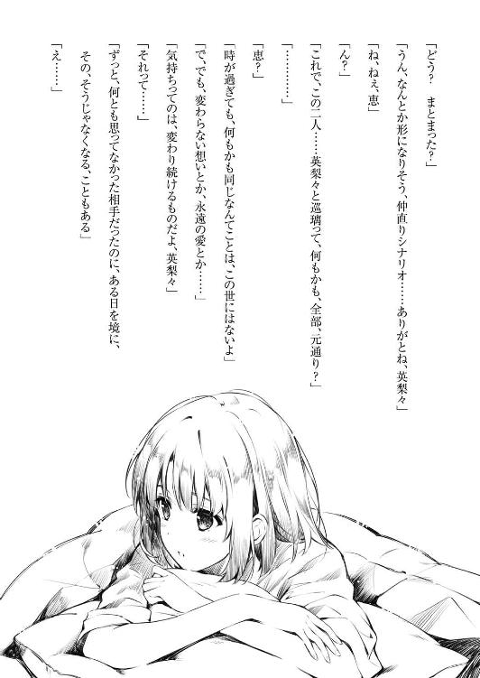
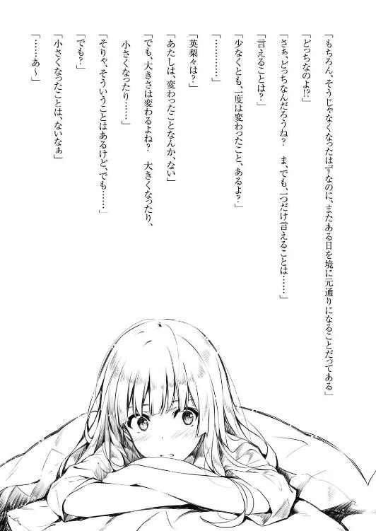
あとがき
どうも、丸戸です。
前巻の九巻でも予告させていただいた通り、『冴えない彼女の育てかた』、今回はガールズサイドの第二弾（以下ＧＳ２）をお届けさせていただきます。
大抵、こういう正式ナンバリング以外の巻というのは、ドラゴンマガジン等で掲載した短編などをかき集め、『ちょっとスケジュール厳しいんで今回書き下ろしは五〇ページくらいでお茶を濁しましょう』などと担当編集さんが目だけ笑っていない笑顔で苦渋の決断を下すというのが定石なのですが（個人の感想です。他作家の事情とは関係ありません）、今回のこのＧＳ２については、『ほぼ書き下ろし。時間軸的にも物語の展開的にも実質的な一〇巻』という、改めて自分で言ってみてもよくわからない本となっております。
何しろこれを抜かして、次巻である正式な一〇巻を読んでみても九巻との繫がりがよくわからないんじゃないかという問題発言をしてしまいそうなほど、本編に深く深く絡んだ話ばかりで誠に恐縮でございますので、読者の皆さんにおかれましては、『なんだ番外編か』などと避けずに是非とも手に取ってお確かめいただければ幸いです。まぁこのカラクリに気づかない人はこのあとがきも読んでないだろってのはさておき。
そういう、出版社的にも読者の皆さん的にも『実は誰も幸せになってないんじゃないか？』などという疑念を抱かせる巻数にしたのは、ひとえに今回の話が、『ヒロインたちが、倫也のいないところで、自らの意志で、悩み、決断して前に進んでいく』という、なにそれ主人公いらないんじゃないこの話......ではなく、主人公の一人称として成立しにくい物語となったためであり、その『語り部が違うんだからナンバリングできないよね』という作者のほぼ無駄なこだわりのせいで皆さんには大変なご迷惑をお掛けして申し訳ございません。
でもまぁ小説なんて結局のところ作者のオナ（ここで文章は途切れている）。
さて、という言い訳も済んだところで、次は別の言い訳になりますが、アニメの続編についてです。
既報の通り、今回もシリーズ構成、脚本に微力ながらも関わらせていただいておりますが、『じゃあいつ世に出るんだよ？』とか、『テレビ？ ＯＶＡ？ 劇場版（いやそれはない）？ それとも立ち消え？』とか、『どうして頑なに第二期と言わずに続編って言うんだよどんな政治力が働いてんだよ』とか皆さんには色々と御心配をおかけしてこちらも申し訳ありません。
多分、この本が出る頃には時期とか色々告知されてる気がしますが、細かい広報スケジュールを確認してないので迂闊な発言は控えさせていただきます。
ただ一つ、きっとアニメ続編が世に出るまでの間、アニプレさんが勢いを繫ぐために必死に頑張って大量のグッズを投下す（やっぱりここで文章は途切れている）。
さて最後に取り急ぎ謝辞でお茶を濁しておきます。
深崎さん、リクエスト通り真......隣のサークルのお手伝いさん出しましたから、後は自由闊達に表紙頑張ってください。あと加藤等身大フィギュアの鬼監修お疲れさまでした。いや本当にローアン......どこから見ても完璧な造形で溜息しか出ませんでした。
萩原さん、娘さん誕生おめでとうございます。カクヨムを立ち上げたこのクソ忙しい時にさらにプライベートまで充実させるその前向きぶりには畏怖を覚えますが、なにとぞワークライフバランスのチキンレースにならないよう気をつけてください。
というわけで、次は実質一一巻......の一〇巻で。
二○一六年 初春 丸戸史明（祝・実写化（Ｔ〇Ａとかで検索しないように））
【初出】
「第八・三話 エロインより愛をこめて」はドラゴンマガジン二〇一六年三月号に掲載された内容に加筆・修正を加えたものです。
丸戸史明
●まるとふみあき
以前のGirls Sideは実質二人の物語でしたが、今回のGirls Side2は総勢11名という多数のヒロインたちがそれぞれ内に秘めるバラエティに富んだ様々な表情を描きました。例えば、微妙に黒かったり、執念深かったり、面倒くさかったり、でも実は面倒見が良くて情が深かったり......って、あれ？なんだかんだ言って全員方向性同じでは？
イラスト／深崎暮人
カバーデザイン／BALCOLONY.
冴えない彼女の育てかたGirlsSide2
丸戸史明
平成28年3月19日 発行
(C)Fumiaki Maruto, Kurehito Misaki 2016
本電子書籍は下記にもとづいて制作しました
富士見ファンタジア文庫『冴えない彼女の育てかた Girls Side2』
平成28年3月25日初版発行
発行者 三坂泰二
発 行 株式会社ＫＡＤＯＫＡＷＡ
〒102-8177 東京都千代田区富士見2-13-3
電話 0570-002-301（カスタマーサポート・ナビダイヤル）
受付時間 9:00～17:00（土日 祝日 年末年始を除く）
http://www.kadokawa.co.jp/